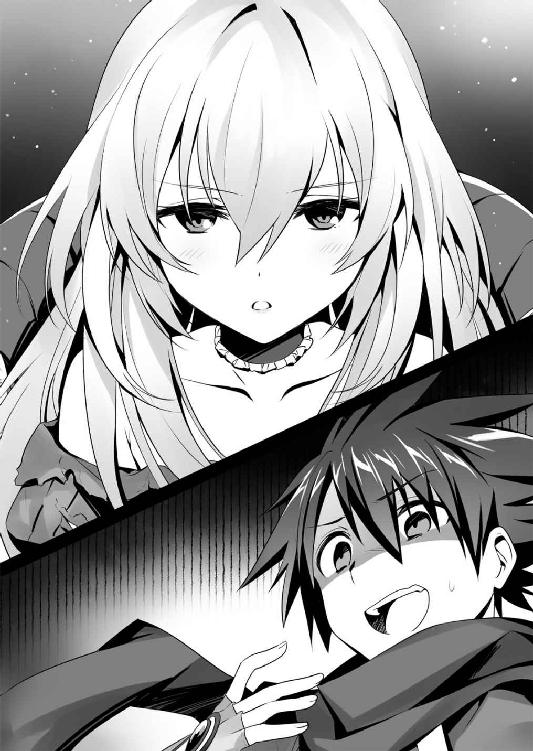

| かくて滅びた幻想楽園 (富士見ファンタジア文庫) | |
| 手島 史詞 | |
| (2013) | |

かくて滅びた幻想楽園
手島史詞

富士見ファンタジア文庫
本作品の全部または一部を無断で複製、転載、配信、送信したり、ホームページ上に転載することを禁止します。また、本作品の内容を無断で改変、改ざん等を行うことも禁止します。
本作品購入時にご承諾いただいた規約により、有償・無償にかかわらず本作品を第三者に譲渡することはできません。
本作品を示すサムネイルなどのイメージ画像は、再ダウンロード時に予告なく変更される場合があります。
本作品は縦書きでレイアウトされています。
また、ご覧になるリーディングシステムにより、表示の差が認められることがあります。
口絵・本文イラスト ＧＡＮ
幾千の兵と、幾万の武器と、幾億の知恵を束ねても、人は神には敵いませんでした。
救いのない世界で、ある咎人がこう言いました。
なら、俺が盗んでこよう。
救いってものも含めて、神さまからこっそりと、この世界を。
プロローグ
──黄金郷というものを、知っているか──
あとになって、知ることだ。
黄金郷に連なる記録は、古い。
そこは楽園なのか、あるいは大いなる遺産が眠る地か。叶わぬ望みが果たされるとも、果て無き苦難からの救いがあるとも言われる場所だ。
あまりに人々が渇望するがゆえに、禁じられた知識とされた時代もあった。
しかし書物の中に、壁画の中に、詩歌の中に、あらゆる形で記され、そしてまた人を希望に駆り立てる。
記述の中には、必ずある人物が描かれている。
番人であるとも、案内人であるとも言われる、一人の女性だ。
幼い少女であることもあれば、賢者のような老婆であることも、妙齢の美女であることもあるという。
ただ共通しているのは、それが女性であること、そして深紅の衣に身を包んでいることだった。
ゆえに彼女はこう呼ばれる。
──黄金郷の赤い魔女──
少年が出会ったのは、美しい少女だった。
伝承の通りに紅の法衣をまとい、夜風に煽られ、緩やかに波を描く髪が揺れる。細くくびれた腰に巻き付くそれは、膝に届こうかという長さだ。
瑞々しく濡れた唇は桃色で、神秘的なまでに整った顔貌は、彼女が語る黄金郷の女神のようですらあった。
歳は少年よりも七つか八つ、あるいはひと回りも上だろうか。大人から見ればまだ子供の部類に入るのだろうが、少年から見ればずいぶん大人びた少女だ。
その双眸に収まる瞳は、彼岸花を思わせる紅蓮だ。
鮮烈な瞳で見つめられ、少年はただただ、たじろぐばかりだった。
古い記録の中には、黄金郷にたどり着いた者の記述もある。
彼らは口を揃えてこう語っていた。
──失われた全てが、そこに在った──
黄金郷の伝承は、幼い少年にはお伽噺や寝物語とそう変わらぬ部類のものだ。
そんな夢物語は、少年を魅了するには十分な力があった。
そこは、大きな遺跡だった。
村からは少し離れているが、少年の足でも半刻でたどり着ける距離だ。大人ならばその半分もかからないだろう。
石のような、鉄のような、不思議な素材でできた建築物だった。空中にいくつもの細い通路が延びる不安定な構造で、その通路に囲まれてガラスのような角張った結晶が浮かんでいる。
見上げたそれは山のように大きく、とてもではないが少年が住む村の建物とは比較にならない大きさだ。
結晶は、その遺跡の大半を占めている。遠目には漠然としすぎてその巨大さがわからなかったが、少年は気付いてしまったのだ。
太陽の光を反射するこの結晶が、恐ろしく巨大なものなのだと。
だから、少年は夜中にこっそり、この遺跡へと忍び込んだのだ。
そして、足を滑らせこの湖に転落した。
落ちる間に、壁や回廊の突起にぶつかり、恐らく致命傷を負ったのだろう。幼くとも、自分が死に向かっていることを、冷たさと共に感じた。
少女が現れたのは、そのときだった。
不思議な力で傷を癒やし、命を救ってくれた。そして美しい瞳を向けて、問いかけてきたのだ。黄金郷を知っているか、と。
心を奪われるには十分過ぎる出来事であり、姿だった。
少年は問い返す。
──黄金郷は、本当にあるの？──
少年たちには〝神獣〟と呼ばれる主が存在する。
神獣は、王であり神だ。
それは比喩ではない。人の命も世界の在りようも、気まぐれ一つで引っ繰り返すだけの力と知恵を持った、偉大な存在なのだ。
そんな偉大な神獣の庇護の下、人はみな平等に幸福を与えられ、平等に生きている。
神獣という王に従い、定められた規則を守り、課せられた義務を果たし、努力と精進を重ねれば、いずれ能力のあるものは神兵として人を超越した存在に至る。
夢は、と問われれば──神兵になる──それこそが誰もが抱く望みだ。
その平和で幸福な世界には、単純明快にして絶対のルールが一つだけ存在する。
──神獣に従うべし──
神獣の言葉と意志に、絶対の服従を誓うのだ。
神獣が差し出せと言えば、たとえ命であっても喜んで差し出す。そこに躊躇も疑問もあってはならない。
全能である神獣がそうあるべきと言うのだ。それ以上の理由は必要ない。
神は絶対正義なのだ。
その神獣は、黄金郷の存在を否定していた。
つまり、黄金郷の存在は異端であるはずだった。
少女はおかしそうにクスクスと笑うと、優しく少年の頭を撫でた。
──黄金郷は、いずれ誰もが行き着く場所だ──
そう語る少女は酷く哀しそうに見えた。
少年は背伸びをすると、少女の頭を撫で返した。
神獣が否定する黄金郷の存在を、少女は肯定した。少女が正しいのか間違っているのかはわからないが、寂しそうな少女が可哀相に見えたから。
少女は少年の行動に驚いた顔をしたが、口を開く前に遠くから呼び声が響く。それは少年ではなく、少女の迎えらしかった。
少女は立ち上がると、少年に村へ帰るよう言い、去ってしまう。
追いかけようとしたときには、その姿はもう消えていた。
同時に、少女がどんな姿をしていて、どんな話し方をしたのかも思い出せなくなってしまう。
ただ、一つだけ強く心に残ったのは、寂しそうな後ろ姿だった。
幼い自分にはなにもできないのかもしれないが、せめて慰めてあげたい。そんな大それた気持ちが込み上げてきた。
そう考えて、少年は彼女の名前も訊いていなかったことに気付いた。
後ろ髪を引かれる気持ちで、村へ引き返す。
それから四半刻ほど歩いて、少年はそれを目撃した。
──この世界には、たくさんの神様がいる──
あの少女は、そうも言っていた。
この世界に人を生み出した創造主ミトラースは、人の上に立つ王として神獣を生み出したという。少年が住む村を含めて、全ては神獣が統べている。
そうした神は、ひとりではないらしい。少年の知らない、国を越えた先に同じような神なる王たちが存在するというのだ。
その姿は、様々だ。
ある神は美しくも恐ろしい竜。ある神は雄々しき巨人。鋭い一角を持った駿馬もいれば、水をまとった蛇のごとき神もいる。またある神は禍々しき骸骨の姿で、別の神は鳥の翼と円環を掲げた神々しき姿だという。
美しく荘厳な神もいれば、禍々しくも猛々しい軍神もいるのだ。
少年の目に映ったのは、正しくそういった神々だった。
そこから感じられるのは、力だ。
目の当たりにした瞬間、頭を垂れて屈服させられてしまう、神聖であり、冒瀆的でもある、容赦なき力の渦だ。
夜の空を、黄金の光が染め上げていた。
それが神獣の光なのだと、少年にもわかった。
少女が語った多種多様の神々だ。群れを成して空へと昇っていく。
それは、進軍だ。
戦の武具をまとい、戦のための力をまとって空を昇っていく。
その中で、少年の心にもっとも鮮明に焼き付いたのは、先頭を進む翼のある神だった。
それは鳥の姿をした、輝く黄金の炎──不死鳥だ。
──黄金郷──
その名前が、少年の頭の中に溢れた。
異形の神々は、十を数える間の短い時間で消えてしまったが、少年はその場を動くことができなかった。
──今のは、なんだったんだろう？
少年は夜が明けるまでそんな空をただただ見上げ続けた。
それが夢なのか現実なのか、答えのない自問を繰り返しながら。
そして、それゆえに少年は生き残った。
少年が村に帰り着いたのは、夜が明けるころだった。
そこに広がっていたのは────
第一章 鎖の少女
「よう、あんたも商人かい？ ずいぶん若いが」
ゴンドラの向かいに相席した青年が、気の良い笑顔でそう訊いてきた。
「ああ。とはいっても、正確にはただの使い走りでね。これでも遠出してきたんだよ」
答えたのは、まだ少年の声だった。青年が言うとおり、商人にしてはずいぶんと若い。
涼やかな若草色を基調とした衣服で、肩からは古びたローブを羽織っていた。商人が好む服装だが、足下には荷袋が一つ転がっていて、そこには商人には不似合いな、長物の刃物が収められている。
もう一つ不似合いなことに、首には赤いマフラーが巻かれていた。
「遠出っていうと、隣のアクアあたりかい？」
「いいや、フラクシヌスだ」
フラクシヌスは大運河を東に下った先にある小さな国の名だ。メルカートルからは、船で下っても半月はかかる距離にある。徒歩ならばひと月を超えるだろうか。
商人の青年は感心したように口笛を吹いた。
「そいつは大仕事だな。ご苦労なことだ」
青年は右手を出す。
「バートンだ。交易商をやっている。こっちもモナクスから出張さ」
「リューだ。よろしく」
少年──リューが手を握り返すと、バートンは不意に真面目な顔をした。
「しかしフラクシヌスねえ。そんな遠方から駆けつけたってことは、あんたもあの噂を聞いてのことかい？」
「あの噂？」
心当たりがなく、リューが首を傾げるとバートンは口が滑ったというような顔をした。
「なに、ただの噂だ。この近くに、とんでもない財宝が隠されているんだとかでな」
「へえ、そいつは興味があるな」
「おっと、この先はただじゃ教えられないぜ？」
もったいぶるような態度に、リューはそれ以上問いかけるべきか迷った。
と、その横からなにかが差し出される。
「よかったら、林檎を一ついかがですか？」
船頭だった。籠には、紅く熟れた果実が詰め込まれている。洗ったばかりなのだろう。表面には水滴が伝っており、瑞々しくも甘そうに見えた。
すでに陽は暮れており、周囲の店々は看板を下ろしている。小腹を空かしていたリューには、非常にありがたかった。
ゴンドラの舟守は、若い娘だ。裾の長い真っ白な制服をまとっている。リューよりは少し年上だろうか。籠を下げた杖を片手に、櫂を器用に操っていた。
──人前で、目立つ話はするべきじゃないな。
バートンもそれを察したのか、噂についてはそれ以上話そうとはしなかった。
礼を言って、リューとバートンは娘から差し出された林檎を受け取る。ランプに照らされ、快活な笑顔が返ってきた。代金を払おうとすると、娘は首を横に振る。
「売れ残りをいただいただけなんで、代金は必要ありませんよ。いただいたら神獣さまにおしかりを受けます」
そう言って、娘はゴンドラに立てられた旗を見上げる。剣を描いたシンプルな意匠ではあるが、この国の国旗だ。
リューとバートンも神獣に敬意を示すように拳を胸に当てる。
林檎に歯を立てると、シャクリと小気味の良い音を立てて口の中に甘味が広がる。ほどよく酸味が利いていて、齧った側から涎が込み上げてきた。
──美味いな。鮮度がいいのか。
それは新鮮なうちに市場に流せるほど、流通が良いということだ。
笑顔の下で鋭く観察しながら、舟守の娘に声をかける。
「この街のこと、教えてもらっても良いかい？」
「はい。なんなりと」
笑顔の娘に、リューは問いかける。
「これから宿を探さないといけないんだが、ゴンドラなしで移動できる通路はあるかい？」
「そうですね、宿場区の中は徒歩でも行き来できますが、出入りにはゴンドラが必要になります。メルカートルは、どの通路も船のために作られてるんですよ」
「へえ、なんでだい？」
このメルカートルに限らず、多くの街は水の中に建てられている。陽が出ている間は陸が存在する街もあるが、夜になればほとんどが水の中に沈む。
世界は、水に覆われているのだ。
昼間は水も引くが、夜の訪れと共に潮も満ちる。どこの建物も通路も、石を積み上げて整備されている。もっと水深が深い場所では、浮遊樹に住居を築くこともあるらしい。そういった場合は枝から枝へと水に触れない通路が作られている。
ここは移動手段をゴンドラに頼っているらしい。昼間見た限りでは、小型の商船ならば船ごと街に入り込むことができそうだった。船の航路を遮るものは極力排除されている。
だが、美観は優れているが、住むにはいささか不便なのではないだろうか。
そう訊くと、舟守は質問の意味がわからないように、心底不思議そうに首を傾げた。
「......？ なんでって、神獣さまが定めたからでしょう？」
それ以外の理由など、存在するはずがない......というよりむしろあってはならないとでも言うような口調だった。
リューは慌てて頷き返す。
「その通りだよな。神獣さまがおっしゃるなら間違いはない」
──危ない危ない。
世界とは、このようなものだ。
人々は神獣が命じるままに生き、神獣がこうと定めればそれ以上の理由を求めない。考えてはならないのだ。
それは理屈やルールがどうという次元の話ではなく、彼らがそう育てられ、そう習慣づけられているがゆえの思考停止だ。
恐らく、この街の通路が船のために作られているのは、ここが商人の街だからだろう。船で入ることができるなら、水牛や人力で運ぶよりも遥かに効率が良い。
ただ、そこに住まう人々はそんな理由すら知りはしない。それを疑問に思うことすら許されていない。
話を逸らすように、リューは街のはずれに見える、小さな建造物を示す。丘になっているらしく、地面からせり上がって見えた。
「あの建物に商品を届けなきゃいけないんだけど、良い道はあるかい？」
「東側の河川を上れば、あちらのお屋敷に通じてますよ。お屋敷は湖の中にあるので、船でそのまま入れると思います」
──お屋敷、ね。
舟守はそれを屋敷と表現したが、実際は砦であることを、リューは知っている。
「お屋敷に行かれるなら、朝は避けた方がいいですよ。あの辺りは霧が濃いですから。慣れた舟乗りでも水獣に襲われることがあるんです」
水獣というのは、水中に潜む大型生物の総称だ。神獣と神兵に守られたこの世界では、遭遇すること自体が稀だが、夜の運河や深い渓谷などでは襲われることもある。
水に覆われたこの世界では、標高が高くなるとすぐに霧が発生する。そうした霧に紛れて襲われるということは、あってもおかしくはない。
親切な情報に礼を言って林檎にかぶりつくと、舟守の娘が物珍しそうに訊いてきた。
「お客さんたちは、外国からいらしたんですか？ わたし、この街から出たことないから、商人さんって羨ましいんです」
娘は興味深そうに顔を近づけてきた。心なしか、口調も砕けたものになっていて、リューとバートンは苦笑した。
「モナクスはギガスだよ。壁に囲まれた街でな、余所者にしちゃ面白いかもしれないが、住むには不便が多いってのが、正直なところかな。フラクシヌスはどうなんだ？」
「そうだな、こっちはギガスとは違って木製の家が多いかな。泥が多いから石材も掘れなくて──」
リューとバートンがそれぞれ答えると、娘はまた別の質問を投げかけてくる。
林檎の礼代わりに、リューもそれに答える。よくよく考えると、あの林檎もこうして話を訊くための代金だったのかもしれない。
彼女のささやかな娯楽に付き合っていると、通路の奧からすれ違うゴンドラが見えた。視線でそれを示すと、娘は慌てて姿勢を正す。まるで今までの会話が存在しなかったように櫂を操り。
船をやり過ごしながら、リューはそれまでの柔和な商人の顔が噓のように目を細めた。
──この街は、危ないかもしれないな......。
メルカートルはこの国の物流の拠点だ。各地から商人や情報が集まるここで、好奇心を抱くなというのも難しい話だ。舟守の娘からもわかるように、好奇心が疼きやすい。ふとした拍子に、神獣から禁じられた疑問が口を突きかねない。
やがて目的の場所にたどり着き、リューが代金を払ってゴンドラを下りると、舟守はもう一度林檎を放った。
「わたし、リーアというの。お客さんたちの話、面白かったよ。また乗ってね」
林檎と同じくらいの大きさの胸が揺れるのが見え、リューはついついだらしない笑みを返した。
暗がりから冷たい声が突き刺さるまで、彼は幸せだった。
「......お調子者」
刃物のような鋭い声に、リューはギクリと身を強張らせる。
「なんだよ、商人が無愛想にしてたら怪しまれるだろう、イオリ？」
言い訳がましくリューが言うと、暗がりから一人の少女が姿を見せる。
一本に束ねられた真っ直ぐな黒髪。背はリューより頭一つ分低いはずだが、凜と伸ばした背筋からそれは感じ取れない。男児ならば思わず振り返ってしまう可憐な顔立ちながら、刃のような切れ長の双眸がそれらを台無しにしている。
こちらは膝の下まである、長い濃緑のコートをまとっていた。
少女──イオリの姿を認めて、リューは咎めるような声を上げた。
「おい、街中を帯刀して歩いてたのか？」
「外から出入りする人間なら、剣を持っていても怪しまれはしないわ」
「目立つだろう」
「規則に従っている限りは、神獣は寛容よ」
泰然としたこの少女に、リューは口で勝てた例しがない。
言い返すことを諦めてクシャリと髪を搔きむしると、イオリが問いかける。
「それで？ 砦のことはなにかわかったの？」
商人の姿をして街を徘徊していたのは、道楽ではない。リューは笑みを含んで頷く。
「砦に配置されてる神兵は、一体だけだ。常駐する兵は、いても一人か二人だな」
「確か？」
「ああ。大勢ではないが、いないということはないはずだ。食料の搬入具合を見た限りじゃな。それとあそこは霧が出るらしい」
リューがそう言うと、イオリは小さく頷いた。
「では、仕掛けるのは夜明けが好ましいわね」
あたかも、神である神獣に背くような言葉に、リューは手の平に拳をぶつけて楽しそうに頷き返した。
「ようやく見つけた黄金郷の手がかりだ。盗ませてもらうぞ、盗賊としてな」
それが、リューがこの街にやってきた理由だった。
「──このバカ！」
言った瞬間、殴られた。
確かに、街中で神獣に背くような言葉を発してしまったのだ。イオリの反応は至極当然のものだった。
「〈ウーロニクス〉は盗賊じゃないって、何度言ったらわかるの？」
......こちらも、危機感の欠けた娘だった。
翌朝。
霧に紛れて慎重にゴンドラを進めると、ものの半刻で目的の砦が見えてきた。
伸ばした腕の指も霞むような、深い霧だ。確かに、こんなところに水獣が潜んでいたとすれば、よほどカンの良い戦士でも命が危ないだろう。
しかし、リューとイオリは水獣に襲われることはないと踏んでいた。
この深い霧の中でもハッキリとそれが見えるのだ。
「──あいつを仕留めないと、忍び込むのは無理だな」
そう言うリューの視線の先には、巨大な影があった。
周囲に立ちこめる霧すらも見下ろすほどの大きさだ。人では......いいや生物ではありえぬほどの巨体でありながら、それは人に良く似た姿をしていた。
巨人だ。
この国を統べる神獣は、姿形こそ人に酷似しているが、その大きさは人間の比ではない。
数多いる神獣の中でも最大の体軀を誇る巨神ティターン──それがこの国の王であり、目の前に居座る神兵の主だ。水獣とてその姿を見て、挑もうとは考えないだろう。
物知り顔のリューに、隣から呆れたという声が返ってきた。
「バカなの？」
「......優れた考えというものが、すぐには受け入れられないものだとは理解してるさ」
「あれは神兵よ。暗殺はできない。神兵と戦い、倒して前に進むことを忍び込むとは形容しないわ。強襲と表現するの。わかった？」
「うぐっ......。あ、あいつを仕留めなければならないって事実に変わりはないだろう？」
「子供が見てもわかることだと思うわ。それにリューに神兵──それも巨人の骨を断つ膂力はない。仕留めるのはあたしよ？」
容赦のない言葉に、いい加減心も折れたらしく、膝を抱えてグスグスと鼻を啜る。
リューは今年で十七になる。隣にいる少女より年齢としては一つ上なのだが、言い合うといつも負ける。
打ち拉がれるリューは、昨晩の商人姿とは打って変わり、動きやすそうな若草色のジャケット姿だ。その下に簡素な胸当て、腕にはグローブ、脚にもナイフや小道具を収めたベルトが巻かれている。
イオリの方は相変わらずのコート姿だが、これから脱ぎ捨てるように前を開いている。
余所者の二人は〈ウーロニクス〉と呼ばれる組織の人間だった。人類の支配者である神獣から切り捨てられた人間を救い、守ることが目的だ。
とはいえ、いつまでも蹲っているわけにもいかない。
チャプリと水の音を立て、リューは腰まで水に浸かった。
砦は湖の中央に建てられている。この湖はメルカートルを流れる運河の源になっているものだ。霧が立つのも、この豊富な水と朝日による気温差から発生するものだ。
リューたちが潜む岩場から巨人までの間に、足場となるものはなにもない。水深はそう深いものではなく、底に足をつけることができた。
ここに限らず、世界は水に覆われている。
人はその中で頑丈な足場を選んでそこに住居を築いているのだ。このあたりは歩いて渡れる浅いものだが、それでも深い亀裂が走っていることもある。迂闊に進めば足下を掬われるため、重量のある武具を持ち歩くこともできない。
リューが水面に波紋を作ったことで、巨人がむくりと身を起こした。
『去れ。人の子よ』
頭上から、大気を揺らすような声が響く。
霧によって視界が効かずとも、神兵の五感はその微細な変化を逃しはしない。
立ち上がったそれは、絶望的なまでに巨大だった。リューはそう背の高い方ではないが、それでも十六歳の男子が膝にも届かないほどだ。赤黒い肌は鋼鉄のように硬質で、それでいて破壊的なまでの筋力が躍動しているのがわかる。
あの腕を振り下ろされるだけで、リューの体はおろか周囲の建造物や岩ですらも千々に打ち砕かれるだろうことが、肌で感じられる。
それでも、リューは口に笑みを浮かべて吼え返す。
「ハッ！ 笑わせるな。あんただって人の子だったはずだろう！」
神兵は、もともとは人間だ。神獣に力を与えられた人間を、そう呼ぶのだ。
ただ、神獣は異形の神だ。その力を与えられるということは、その異形の姿をも与えられるということだ。神兵となった者が元の人の姿に戻ることはない。
巨人の頭部は、球体型の兜に覆われていた。開いているのは口と、そして眼孔の部位に横一筋の亀裂。
巨人の巨軀を覆い尽くせるだけの鎧は存在しない。そもそも、彼らの皮膚は鍛えた鉄などより遥かに強靭である。根本的に防具を必要としていないのだ。
そんな巨人が頭部にのみ甲冑をまとうのは、それが己が崇拝する〝神獣〟への忠誠の証だからだ。
自身が個であることを、そして人であることを捨て、主である神獣のために全てを捧げるという誓いが、あの顔を隠した甲冑なのだ。
甲冑の隙間から覗く双眸に、哀れみの色が浮かぶ。
『愚かな......』
そう呟くと、巨人はその巨大な手の平を振り下ろす。
そのときには、リューも動いていた。片手に小刀を抜くと、勢いをつけて水の中に潜る。
直後、背後で湖が弾けた。
巨大な腕はリューの体を押し潰すには十分な大きさだったはずだが、吹き飛ばされた水流に押し流され、リューは無傷で巨人の足下まで流される。
世界の大半は水で覆われているのだ。そこでの移動を、水に纏わり付かれる足で行う必要はない。
初撃を逃れたリューは、すぐさま立ち上がると、地面へ押し付けられた巨人の腕目がけて小刀を投擲する。あらかじめ口に咥えておいたものだ。
小刀はジャラリと鎖を引いて巨人の腕へと絡みつく。その腕に吊られて、リューの体も持ち上げられる。
──おお、怖い怖い。
冷や汗を背中に伝わせながら、リューはその破壊の跡を見下ろす。一瞬前までリューがいた場所では、地面が剝き出しになっていた。そこを覆っていたはずの水は、周囲へ吹き飛ばされている。
そこで異物感を覚えたのだろう。巨人は己の顔の前に腕を持ち上げた。
『ほう......』
そこにぶら下がるリューの姿に、巨人は感嘆の声を漏らす。
『その小さき身でよくぞ凌いだ。だが、二度目はない』
目の前に無防備でぶら下がっているのだ。巨人からすればキュッと握り締めるだけで片付く話だった。
それでも、リューは挑戦的に笑い返した。
「同感だ。二度目はないぞ、元同胞！」
『む......？』
吼えると同時に、リューは新たな小刀を投げる。狙いは──目だ。
どれほど巨大だろうと、どれほど強靭だろうと、目というのは鍛えようがない。そこを狙われては無傷ではいられない。
もっとも、巨人とてその程度のことは熟知していたのだろう。軽く首を捻るだけで、小刀は甲冑にぶつかり澄んだ音を響かせた。
小刀は、巨人に対してかすり傷一つ与えることはできなかった。
だが、それを防いだことで、巨人の注意は一瞬だけリューから外れてしまう。
その隙を、リューは逃さなかった。
振り子の要領で体を振ると、巨人の首目がけて飛び込む。
『こしゃくな』
巨人は虫を払うように腕を振るうが、リューはすでに鎖を離している。そして、腕は腰に下げた剣へと伸びていた。
ギィンッと、金属が軋んだ。
『なんとっ？』
巨人が初めて驚愕の声を上げる。
それはそうだろう。いかなる武具よりも強靭である皮膚が、小さき人の剣で傷つけられたのだから。
巨人の首筋からは、噴水のように鮮血が噴き出していた。肉は切れずとも、薄い皮膚に覆われた血管だけならばリューの腕でも断ち斬ることができる。
それは、東方に伝わる〝カタナ〟と呼ばれる部類の剣だった。
刃を叩きつけて切るというのが一般的な剣だが、この曲線の刃を持つ剣は鋭く表面を走らせることにより〝斬る〟という鋭さを持つ。
巨人は狼狽えながらも、肩に乗ったリューを叩き潰そうと巨大な手の平をぶつけるが、そのときにはリューはヒョイと宙に身を躍らせていた。鎖を投げるのも忘れずに。
新たな鎖に支えられながら、リューは地面へ向かって降下する。手傷を負わせたとはいえ、無謀な──いや、もはや自暴自棄とも取れる行動だった。
『傲るな、小さき人め！』
神兵は戦うべく神獣に力を与えられた兵だ。戦うための訓練を受けているのだ。
絶命しない限り、戦いを放棄することなどあり得ない。すぐさま空中で無防備のリューへ追撃を与えるが、それが彼に届くことはなかった。
リューは役目を完遂したから、こうして隙だらけの姿を晒しているのだ。
「不知火イオリが銘じます──おいでませ〈絶華〉」
周囲に立ちこめていた霧が、消し飛んだ。
巨人の足下に、一人の少女が待ち構えていた。コートは脱ぎ捨てられ、体の線に沿った不思議な衣装を纏っている。肩や胸部を守る当て物はあるが、防具らしきものは他に見当たらない。
〈ウーロニクス〉の戦闘服だ。
凜と立つその手には、リューと同じ......いや、それよりも銘の優れた業物なのだろう、美しい拵えのカタナが握られている。
〈絶華〉──花鳥風月の一つに数えられる、当代最高のカタナのひと振りだ。
そのカタナが、二つに重なって見えた。一方はイオリが握る実体のあるカタナだが、もう一方はその数倍はあろうかという大きさだ。
現れたのは、少女のカタナをそのまま拡大投影したような、幻像のような透き通ったカタナだった。
小さき人の少女に、巨人が恐怖の色を浮かべた。
『馬鹿な......。貴様、それは────』
「序の型──絶風」
静かな宣言と共に、〈絶華〉と呼ばれた大太刀が一閃する。
『な、あっ？』
大樹のような巨大な足首が、真っ二つに断ち割られた。
ともすれば幻のようにも見えるカタナは、強固な神兵の体をやすやすと斬り裂いていた。
そして、炎が噴き出す。
神兵を焼く炎は、降り注ぐ水飛沫にも絶えることがない。
イオリは人の身で炎を操る〝幻装使い〟と呼ばれる一族だ。彼女に斬られたものは、全てがこのように炎上する。たとえ神兵であったとしてもだ。衣服も焼き尽くしてしまうため、幻装使いはイオリのような独特の戦闘服を用いる。
彼らの炎は熟達するとカタナのように〝形〟を持つようになる。炎でできたそれは幻のようにも見え、その多くが身にまとう武具を模ることから、こう呼ばれている。
──幻装──
水に覆われたこの世界で、その炎は世界そのものを冒瀆するような力だった。
骨ごと断ち斬られた上に消えない炎に包まれたのだ。巨人は堪らず水面へと沈む。大きな水飛沫が上がり、空から雨のように降り注いだ。
イオリがカタナを抜けば、周囲の霧など瞬時に消失してしまう。リューの役目は、彼女が幻装の射程距離まで近づくまでの時間稼ぎだった。
『お、あああああああ〈ウーロニクス〉の狗か！』
それでも、巨人は戦おうと腕を振り上げる。
それは主君の神獣への忠誠からか、それとも死への恐怖からか。いずれにせよ、いかに強い力を持とうともイオリは人間なのだ。まともに受ければ命はない。
降り注ぐ雨のような滴を焼きながら、イオリも〈絶華〉を盾のように構える。
「リュー！」
イオリの〈絶華〉は巨人の骨を断つほどに強力だが、その一撃に耐えるほどに強固ではない。だからこそ、リューが注意を引く必要があったのだ。
「わかってる！」
巨人が倒れる間に、リューは地面に着地していた。
イオリの隣に駆け寄ると、カタナを左手に持ち直し、腰から屈曲した筒を抜いた。
剣のような刃はなく、弓のような弦もない。かといって盾のような大きさも強度もあるようには見えないそれを、リューは左手甲で支えながら巨人へ向けた。
ドンッ──一筋の、閃光が巨人の眉間を射貫いた。
巨大な頭部を覆う甲冑が爆ぜ割れ、滝のような鮮血が噴き出される。振り上げられた巨大な腕は、誰にも届くことなく地面へ落ちた。
閃光を射出した筒は、その先端から蒸気のような煙を噴き上げていた。
〈銃〉──それが、この武器の名だった。
太古の昔、まだ創造主ミトラースが現世に留まっていた時代の遺物だ。果たしてそれを使っていたのが神なのか、それとも人間なのかすら定かではない。ただ、この〈銃〉という武器は、使用者の命を火種に強力な矢を放つ。
かつて〈ウーロニクス〉が神獣から奪った宝の一つで、〈ウーロニクス〉に所属していながら幻装使いではないリューに、首領が与えたものだった。
巨人が完全に沈黙したことを確かめて、リューはようやく息を吐いた。
「ふう......。思ったよりすんなり倒せたな──......っ？」
「──リュー！」
息絶えたはずの巨人が、ピクリと動いた。
『行かせ、ぬ......───は、あって、ば......』
半壊した頭部からボタボタと脳漿を垂れ溢し、ごぼごぼと血の泡を吹きながら、それでもリューに向かって腕を伸ばす。
──こいつ、まだ！
もう一度〈銃〉を構えて──リューは、息を吞んだ。
「......イオリ」
「ええ......」
引き金を、引く必要はなかった。
「──こいつ......もう、死んでる」
腕を伸ばしたまま、巨人は絶命していた。
恐ろしい、執念だった。
「この神兵は、最後になんと言ったの？」
「......わからん」
巨人を不気味には思ったのだろうが、神兵と交戦してのんびりしているわけにもいかない。砦に進もうとするイオリの背中を、リューは呼び止めた。
「イオリ」
「なによ？」
「ありがとうな。俺のわがままに付き合ってくれてよ」
リューとイオリはこの辺りの人間ではない。運河と山を越え、半月以上かけてこんな遠方までやってきたのは、そこにリューが求めるものがあるからだった。
そんなリューのために、イオリは、ここまでついて来てくれたのだ。そしてこんな異様な執念を見せる神兵とまで戦わせた。
素直に礼を言うと、イオリの顔が耳まで赤く染まった。
「あ、あああ当たり前でしょう！ あんたの勝手な行動許したら、パートナーのあたしまで処罰されるんだから！」
「そ、そんな怒ることはないだろう？」
怒鳴られて、リューは肩を竦めた。リューのわがままで神兵とまで戦うハメになったのだ。やはり腹を立てているようだ。
リューがもう一度謝ると、イオリはせっかく作った料理を焦がしてしまった乙女のように、沈痛なため息を漏らした。
ため息の理由はわからなかったが、イオリがまた足を進め始めたため、リューは慌ててその背中を追いかけた。
ただ、その脳裏にはいつまでも巨人が残した〝最後の言葉〟が木霊していた。
──黄金郷は在ってはならない──
巨人は、最後にそう言ったのだ。
世界は平和だ。多くの人間は、そう思っている。
だが、ひとたび神獣の定めた枠組みから外れれば、容赦なく抹殺される。
枠からはみ出さないことは、難しいことではない。ただ、なにも考えなければ良いのだ。
神獣が定め命じるままに。
あるがままに。
なるがままに。
疑うことなく。
ただ信じれば良い。
多くの人々は、それを疑問に思ってはいない。
その疑問自体が罪だからだ。
疑問さえ抱かなければ、世界は至極平和なのだ。
しかし、それは生きているとは呼ばない。
少なくとも、リューはそう思っている。
そしてそう考えた人間の集まりが〈ウーロニクス〉──各地に活動拠点を持つ、反神獣組織だった。
「なにもないところだな......」
神兵を葬って砦に侵入したリューは、深いため息を漏らした。
「こんなところに、あんたが言う〝黄金郷〟の手がかりなんて、本当にあるの？」
ここは巨神の国ギガス──この国に、リューの探し物の手がかりがあるという情報が手に入ったのだ。
リューには長年追いかけているものがある。
──黄金郷──
老いも病もなく、失われた全てがある世界──楽園だ。
きっかけは、幼いころに出会った少女だった。十年近く昔のことだ。
生きているなら、今は二十代半ばほどだろうか。神獣に追われる身となって〈ウーロニクス〉に所属してから、リューは黄金郷について調べる機会には恵まれた。それを調べて、確信した。
──黄金郷を目指していれば、いつか彼女に会える──
神兵と戦ってまで、こんなところにやってきた理由だ。それが、侵入したというにも拘わらず、そこにはなにもない。
──あの巨人は、黄金郷の名を口にした。
人間が黄金郷を追い求めるのは、ある種の理想郷なのだから自然なことではある。
だが、神獣に心酔し、死の恐怖すら持たない神兵があれほど拘るというのは、一体どういうことだろうか？
──どっちにしろ、なにかあると思うんだが......。
リューの沈黙をどう見たのか、イオリは少し慌てた声で弁護する。
「で、でも、なにもない場所を神兵が守るとは考えられないわ。なにかあるはずよ」
そう信じたいが、砦は蛻の殻だ。兵士の一人もいない。リューが調べた限りでは、人が住んでいる様子ではあったのだが。
「神兵一体で十分だって考えたのか？」
「神兵はただの兵じゃない。戦となれば軍を率いる将よ？ 部下がいないはずはないわ」
「だったらなんで誰もいないんだ？」
それには、イオリも答えられなかったらしい。黙り込んでしまった。
──それにしても、妙な建物だな......。
外から見た限りでは砦のようだったのだが、中は異質なものだった。
床や壁、天井に使われているのは、石とも金属ともつかぬ、不思議な材質だ。古代の遺跡などでよく見かける部類のものだ。
本来、砦の壁には矢筒を備える引き輪や、敵の矢を防ぐ盾、場合によっては石や熱した油、鉛などを流すための台が設備されているものだが、そうした装備は見当たらない。それに廊下も奇妙なもので、外縁部を一周するような一本道で、窓も部屋も扉もない。一周まわると一つ内側の廊下に出るようになっているようだ。
外の光は届かず、照明となるものも備えられていない。イオリがカタナに熱を込めて明かりにし、その光を頼りに進むが、風の流れは感じられず、通風口すら見当たらない。下手に火を熾せば、酸欠を起こすことも考えられる。
あるいは、侵入者を攪乱するためのものかもしれないが、それにしては罠らしきものも存在しない。
──ここじゃあ、イオリの幻装を頼るわけにはいかないな......。
こんなところで炎を使えば、リューはもちろんのこと、術者のイオリ自身の身ですら危うい。それゆえ壁を破るような真似はせず、慎重に歩みを進めていた。
果たして、この建物はなんなのだろうか？
そうして歩いていて、リューはふと思い付いた。
「いや、むしろ逆か？」
「なにが？」
「この建物、入るのも面倒だが、中から外に出るのも大変だろう？ となると、なにかを閉じ込めてるってこともあるんじゃないか。神兵でないと手に負えないようなものが」
「人間の兵では死ぬ......というか足手まといになるような〝なにか〟があると？」
「ああ」
「あたしが神獣だったら、そういうときには二体以上の神兵を配するわ」
自信のある推理だったのだが、ざくっと返されリューも肩を落とした。反論できなかったのだ。
と、そのときだった。
リューとイオリはピタリと足を止めた。
曲がった先に廊下はなく、代わりに大きな扉があったのだ。
二人は視線を交わすと、扉の両端に身を隠す。イオリが頷くのを待ってから、リューは扉を押し開ける。
ギィィ......と、軋んだ音を立てて、扉は左右に割れていった。
一寸先も見えない暗闇に、イオリがカタナをかざして部屋を照らす。
「......なんだ、ここは？」
扉の向こうを覗き込んで、リューは怪訝そうな声を漏らした。
そこは大きな部屋になっていた。外壁に沿った廊下を何周もまわったのだ。位置としては砦の中心部に当たるだろうか。
そこでまず目につくのは、行く手を阻むように聳える鉄格子だった。扉を囲う柵のように立てられた光景は、牢のそれだ。
しかし、その奧に目を凝らすと、柔らかな絨毯が敷かれているのがわかる。装飾の凝らされた緋色のもので、踏めば靴が沈み込みそうな上質なものだ。明らかに牢獄に置かれるものではない。
その中央で、ジャラリと鎖の音が響いた。
目を向ければ、そこには石でできた小さなテーブルが鎮座しており、その上に受け皿が載せられている。
受け皿の上にカップはなく、代わりにもう一度ジャラリと音が響いた。
「──何者じゃ？」
鈴を転がすような、澄んだ声音だった。
「──っ！」
リューは思わず息を吞んだ。
テーブルの向こうに、一人の少女が腰掛けていた。
椅子の上にも広がる金色の髪。小さな顔には整った造りの目鼻。歳は十三くらいだろうか。暗闇にぼうっと浮かぶような真っ白な肌で、桃色の唇は熟れた果実のように瑞々しい。華奢な手は白い手袋に覆われ、その指にティーカップが摘ままれていた。
とても見落とすような容姿ではないはずだが、少女が声を上げるまで、リューは彼女の存在に気付くことができなかった。
そして、フワフワとした絹を重ねた襟は純白だが、その下を覆う衣は鮮烈なまでの深紅だった。椅子からこぼれ落ちる長い裾も、膝まで覆うスカートもだ。
──赤い魔女──
自然と、その名前を連想した。黄金郷の手がかりとして、これ以上のものはない。
だが、リューが息を吞んだのは、それが理由ではなかった。
──なんて、目をしてるんだ......。
少女の瞳は、彼岸花のような紅蓮の色だった。
鮮烈な色のはずだが、その瞳にはなにも浮かんでいなかった。
どう見ても侵入者であるリューたちを目にして、驚きも、戸惑いも、歓喜も、危機も、なんの色も浮かんでいない。
絶望のような悲壮じみた色すらなく、意思や感情といったものが長い時間をかけて削ぎ落とされてしまったような、そんな虚無の瞳だった。
神獣から反逆者として処理される人間ですら、こんな目はしないだろう。
ジャラリとまた鎖の音が響いた。少女がティーカップを下ろしたのだ。
リューは、ようやく少女の腕に無骨な手枷がはめられていることに気付いた。金糸で装飾された袖から、重たそうな鎖が伝い落ちる。
そのことにハッとして、リューは鉄格子を見上げた。
──この牢、出口が、ない......？
床までまっすぐ立ちはだかる格子に、繫ぎ目はない。出入り口に相当するものは、どこにも見当たらない。恐らく、少女を閉じ込めてから溶接したのだろう。
そして、古代の遺跡や〈ウーロニクス〉のアジトで考古資料や鍛金の知識に触れてきたリューには、鉄格子が造られて一年や二年ではないことがわかってしまった。
──この子、一体どれくらいの時間、ここに閉じ込められてるんだ......？
まだ幼ささえ残る少女がこんな目をしているのだ。少なくとも、自分がここから出ることができないことを、彼女は理解している。
──放っておけない。
救わなければならないと、強迫観念にも似た感覚を覚えた。
少女は一度誰何の声を漏らしたきり、まるで動かなかった。こうして見ていると、人形ではないかとさえ思えてくる。
リューは牢の前に立つと、高貴な相手にするように胸に手を当てて腰を折った。
「俺はリューという。戦部リューだ。こっちは不知火イオリ。〈ウーロニクス〉なんていう組織に所属してはいるが、俺は別の用件でここに来た」
少女は幽かに眉をひそめた。
「燃える雪......？ 燐火という意味か。聞かぬ名じゃな。それが、何用じゃと......？」
年寄りのようなしゃべり方だと、リューは思った。同時に、別に無口というわけではないらしいと気付く。
「お嬢さん、俺は盗賊なんだ。だが、困ったことに、ここには財宝がないらしい。盗むものがないと、盗賊はとても困ったことになってしまう」
そう言って、リューは腰を折ったまま右手を差し出した。
「お嬢さん、ここは一つ、この盗賊に盗まれちゃくれないか？」
螺旋回廊の果てにあったのは、この座敷牢だけだ。そしてそこに捕らわれているのはこの少女だけだった。
つまり、この少女こそ神兵を配置してまで守るべき宝だったということだ。
最高に気の利いたセリフを言ったと思った。隣でイオリが「お調子者」とか呟いていたが、気にしなかった。
紳士的に微笑んだリューは、次の瞬間叩きのめされた。
「......俗物が」
「すごい敵意を抱かれたっ？」
愕然とするリューに、少女は冷ややかな、しかし生気のない気だるそうな声で続ける。
「いかなる噂を聞きつけたのかは知らぬが、今のわらわにはなにもない。汝に与えられるものなど、なにもないのじゃ」
なにやら警戒させてしまったらしく、リューとイオリは顔を見合わせた。それから少女に諭すように声をかける。
「いや、違うんだ。変な下心があるわけじゃあないんだ。なんていうか、君は神獣に閉じ込められてる......わけだよな？ だから、助けてやりたいんだが」
もちろん、少女が黄金郷のなにかを知っているかもしれない、という打算はある。
だが紅い衣装を着ているというだけで確証もなく、そもそも目の前に鎖で繫がれた少女がいるというのに放っておくという選択肢はリューには存在しない。
少女はピクリと眉を揺らした。
「外の神兵を殺めたのは汝らか......なるほど、呪われた〈銃〉か。上手く使えたなら、人の身でも可能か」
幼い外観ながら、その声は思慮深い賢者のような落ち着いた響きがあった。納得したようにそう言うと、覇気のない冷めた眼差しをリューに向ける。
「いずれにせよ、わらわは己の意志でここにいる。出るつもりは毛頭ないし、汝らに手を貸すつもりもない」

リューは苦笑した。
「なにがあったのかは知らないけど、安心しろよ。別に俺たちは君になにかを強要したりはしない。ただ、君をここから出してやりたいだけだ。ここには、なにもないだろう？」
「......嫌じゃ」
わずかではあるが、感情のこもった声に聞こえた。
──この子、もしかして怖がってるのか？
暗くて表情までは見えないが、小刻みに響く鎖の音は少女が震える音に聞こえた。
「なあ──」
リューが声をかけようとすると、それまで焦点が定まっているかも怪しかった少女の瞳が、ハッキリと見つめ返してきた。
「──なにもないから、良いのじゃ。なにもないから、なにも壊れない。なにも失わない。なにも、見なくて良い」
そして、明確な拒絶を込めてこう言った。
「壊れるだけの世界など、もう見たくないのじゃ」
──世界は、簡単に壊れちゃうんだ──
心臓が、大きく鳴った。
その姿が、その言葉が、リューの知る〝ある景色〟と強烈に重なってしまった。
──この子は〝あの景色〟を見たんだ。
リューは知っている。
この世界には、抗いようもなく、救いもなく、赦しもなく、守ることも、堪えることも、逃れることも、ひれ伏すことも、叫ぶことすら許されず、ただただ一方的に全てが壊れていく景色がある。
その景色を見て、正気でいられるものはいない。
この少女は、それを見ている。
だから、意地でもここから出さなければ気が済まなくなった。
「オーケーだ。そういう君を、是非とも連れていきたい場所がある」
答えず、ジッと見つめる少女に、リューは挑戦者の笑みを浮かべてこう言った。
「──黄金郷──だ。そこに君を連れていってやる」
少女の肩が、ピクリと揺れた。
「......黄金郷は、閉ざされた」
「閉ざされた？ なにか知ってるのか？」
余裕ぶっていても、気になるものは気になるのだ。期待を込めてリューが格子にしがみつくと、少女は金色の髪を揺らして首を横に振った。
「......わらわが知っているのは、それだけじゃ」
少女はそれ以上、なにも答えなかった。
問い詰めようとすると、イオリが警戒のこもった声で言ってくる。
「それで、どうするつもり？ ここ以外、もう探すところもなさそうだけど、あまりぐずぐずしている暇はないわ。眷属の神兵を殺されて、神獣が気付かないはずはないもの」
「まあ、そうだな」
それから、牢の中の鎖の少女へ目を向ける。
「なあ、君の名前はなんて言うんだ？」
「......クレアーレ」
気だるそうな声で答えると、少女──クレアーレは遠くへ目を向けるように顔を背けた。
「そら、もうゆくがよかろぅ。じきにここへメガロスの兵がやってくる。次は神兵一体どころの戦力ではなかろぅ」
メガロスというのは、巨人を従える神獣の名だ。神である神獣を呼び捨てにするあたり、やはりこの少女は神獣に反逆してしまったのだろう。
しかし、少女の話を、リューは半分聞き流していた。
カタナを抜くと、牢へ向かって二度斬りつける。
それからトンと蹴りつけると、ガランガランと喧しい音を立てて鉄格子が崩れた。人が立って潜れるような穴が、そこにできあがっていた。
リューは穴を潜ると、少女の前に進んだ。
「待ちなさい。リュー、危険よ！」
この砦がクレアーレを閉じ込めるためだけのものならば、侵入者に対して罠がないということは考えられない。
それでも、リューは牢の中を進み、少女の前に立っていた。
近くで見て、改めて思う。
──似てるな......。
顔は覚えていないし、歳もしゃべり方も違うが、どこか〝彼女〟に似ている。
少女は警戒する素振りすら見せなかったが、ささやかな意思表示のように唇を動かす。
「それ以上、寄るでない」
「やだね」
「黄金郷のことは知らぬと言っておろぅ？」
「ああ、聞いた。でも、それで君に用がなくなるわけじゃない」
そう言うと、リューはカタナを振り上げた。目の前で刃物を抜いたというのに、それでも少女はまるで表情を動かさなかった。むしろ受け入れているかのようでさえある。
──そんな顔をした女の子を、置いていけるわけないだろう？
澄んだ音を響かせ、鋼鉄の鎖が少女の手枷から切断された。
腕が軽くなったことに目を丸くする少女を、リューはそっと抱きかかえた。
少女の体はずいぶん軽く、そして柔らかかった。花のような甘美な香りが鼻をくすぐる。
「言ったはずだ。俺は君を盗む。こうして腕に収まった以上、君は俺のものだ」
「力尽くで、わらわをものにすると？」
「俺は盗賊なんでな。欲しいものは奪うだけさ」
冷め切った眼差しの少女に、リューは笑った。
「それにさ、外の世界ってやつは、そんな捨てたもんじゃないと思うぜ。こんなところに、いつまでも閉じこもってるもんじゃないって」
神獣に支配された世界に自由はない。
だが、そこに生きている人間の全てがつまらないわけでもなければ、〈ウーロニクス〉という神獣から逃れた人間の組織もある。
それに、孤独に閉じこもるクレアーレは、十年前に見た〝彼女〟の寂しそうな背中と重なって見えたのだ。
「だから、来いよ」
そう言うと、少女はハッとしたように目を見開き、それから寂しそうに顔を伏せた。ここに来て、初めての表情らしい表情だった。
「もう、見とぅないというに......」
鎖の触れ合う、やかましい音が耳を貫いたのは、そのときだった。
床に目を向けると、手枷から切断した鎖が壁の中へと引き込まれていた。
「なんだ──？」
口を開いた瞬間、地面が大きく揺れた。
立っているのも困難な揺れに、壁や天井が軋み上がる。
「なるほど、メガロスがわらわをただで外に出すはずもないのぅ」
「どういうことだ？」
「仕掛けがあったらしい。砦が崩れるようじゃな」
鎖を切ったことが引き金になったらしい。
──くそ、そういう罠か！
砦の回廊は螺旋状に作られていた。あの長い回廊を走って逃げる間に、この砦は崩れ落ちるだろう。
揺れは次第に大きくなり、天井が抜けてズシンと大きな破片が牢の床を突き破る。
「イオリ、壁を破れ！」
「命令するんじゃないわよ！」
憎まれ口を叩きながら、イオリはすでに〈絶華〉を抜いていた。
牢は回廊とは異なり、それなりに広い空間だ。ここでなら、幻装を使ってもリューたちが直ちに命を落とすようなことはない。
長大なカタナが牢の壁を斬りつけるが──
ゴンッと、鈍い音と共にイオリのカタナがはじき返されていた。
「あ、あれ......？」
イオリが、間の抜けた声を漏らした。
「お、おい、なにやってるんだ？」
「そんな、なんで斬れないの？」
イオリが立て続けにカタナを振るうが、石とも金属ともつかない壁は、表層をわずかに融解させるだけだった。
「無駄じゃ」
言ったのは、クレアーレだった。
「ここは本来、神獣を捕らえるための牢獄じゃ。特に炎には強い耐性がある。汝の炎が神獣を越えるものでもない限りは、破ることはできぬ」
その言葉に、イオリが歯がみをする。
「だったら究の型なら──」
「バカ止めろ！ 俺たちまで焼け死ぬだろうッ？」
「だったらどうするのよ！」
牢の出入り口は、すでに瓦礫で押し潰されている。
言い合う間にも壁や天井は次々と崩れ、リューたちの立っていられる空間を押し潰していく。背中を掠めるほどの距離に天井が落下し、生きた心地がしなかった。
リューは腕の中の少女に目を向ける。
「クレアーレ、ここには他に出入り口はないのか？」
「牢にそのようなものがあるはずがなかろぅ。あったとしても、囚人のわらわは知らぬ」
生きる気力すら感じられない言葉に絶句しながらも、リューはイオリに目を向ける。
「イオリ、〈絶華〉で瓦礫を支えることはできないか？」
「無理よ。〈絶華〉はそんな質量を支えるようにはできていないわ。それよりあなたの〈銃〉で撃ち抜きなさいよ！」
「こんなデカイ瓦礫に〈銃〉で小さい穴を空けられたって意味ないだろうっ？」
見苦しく言い合っていると、とうとう三人の真上から大きな瓦礫が落ちてきた。
悲鳴は、瓦礫の音に搔き消された。
そして、メルカートルの砦は湖の中に沈んだ。
第二章 黄金郷の道標
「──ゲホッ、ゲホッ」
咳き込みながら、リューはなんとか水の外に体を投げ出した。同時にイオリとクレアーレも放り出される。
──死ぬかと思った......！
片腕でイオリを支え、もう片方の腕ではクレアーレを抱え、川を泳いできたのだ。もう動ける気がしなかった。
「生きてるか、イオリ？」
三人が打ち上げられたのは、砦を少し離れた川辺だった。自分が上がってきた川に目を向ければ、泥に混じって瓦礫や家具、衣服などが流れている。
あのとき、崩れ落ちた瓦礫で牢の床も抜けていた。
崩落の瞬間、なんとかその穴に飛び込み難をのがれたのだ。床の下はそのまま湖の水源に繫がっていたらしく、こうして外まで逃げ延びることができた。
砂利の上に倒れ込んだイオリから返事はなかったが、背中が上下していて息をしていることはわかった。岸にたどり着けたことで気が抜け、気を失ってしまったのだろう。
「クレアーレ？」
腕の中のクレアーレに目を向け、リューはにわかに顔を青ざめさせた。
──息をしてない......？
イオリと違い、クレアーレの方はピクリとも動かなかった。この小さな体で濁流に振り回されたのだ。戦士として鍛えられたリューやイオリのように、無事というわけにはいかなかったらしい。
──こういうとき、どうしたらいいんだ？
人工呼吸──そんな単語が脳裏を過ぎった。
「イ、イオリ！」
女同士ならまだ良いだろうとイオリに目を向けるが、意識を取り戻す様子はない。
──気にしてる場合じゃない。
クレアーレを膝に抱えると、上を向かせ、気道を確保する。形の良い唇に、思わずゴクリと喉が鳴ってしまうが、羞恥心を堪えて顔を近づける。
唇同士が触れ合────
「ふがっ？」
顔の前に、小さな手の平が割り込んできた。
気がつくと、クレアーレは目を開けていた。
「お、俺はその、人命救助でやましい気持ちは────」
リューの言い訳を聞いているのかいないのか、クレアーレはなにも言わず、ただ宙を見上げていた。
「クレアーレ？」
やがて、気付く。
──この子、空を見てるのか......。
深紅の瞳に、群青の空と雲が映っていた。
その表情は、牢の中での空虚なそれではなく、苦しげにも哀しげにも見えて、リューは息を吞んだ。
紅い双眸が切なげに細められ、その手が空に向かって伸ばされる。ジャラリと、重たそうな鎖が音を立てる。
その大きな瞳に涙が浮かぶのを見て、リューは──
そっと、その手を握り返した。
「......なんのつもりじゃ」
不愉快そうな、というよりも奇妙な虫でも見つけたかのような、怪訝そうな声だった。
それは相変わらず気だるそうで生気のない声音だが、わずかに感情の色が滲んでいるように思えた。
リューは答える代わりに同じように空を見上げた。
「空って面白いよな。昼間は青いのに、夜になると黒くなるんだ。星なんかも夜しか見えないし、昼になると消えるのってなんでだろうな？」
「......陽の光が強すぎて見えぬだけじゃ。昼でも星はそこにある」
無視されるかと思ったが、意外に返事をしてくれた。
「へえ、じゃあ空が青いのは？」
「......陽の光のうち、青色がもっとも大気で反射しやすいからじゃ」
リューは屈託のない笑みを返した。
「クレアーレは物知りだな」
にわかに目を丸くするクレアーレを、リューはそっと抱き起こした。
「さっきは助かったよ。君が床のことを教えてくれなかったら、俺たちは今ごろあそこで潰されてた」
崩れた床から逃げ出すことができたのは、クレアーレがそれを見つけたからだった。
クレアーレは無感動に返す。
「崩れておると言っただけじゃ」
「おかげで俺たちは生きてるし、君を外に出すこともできた。礼を言うくらいは良いだろう？」
「......言うべきではなかったと、後悔しておるところじゃ」
拒絶するクレアーレに、リューはめげることなく笑い返す。
「そいつは残念だったな。君がいた牢はもうない。もう、俺といっしょに来るしかない」
クレアーレは答えず、リューから離れようとする。
「どこへ行くんだよ？」
「わらわは戻る」
「もう瓦礫の山でしかないぞ？」
「瓦礫で十分じゃ。じきにわらわを捕らえるべき者どもがやってくるであろぅ？」
その言葉を聞いて、リューはクレアーレの腕を摑んだ。
「......離すのじゃ」
「やだね」
キッと紅い双眸で睨めつけるクレアーレに、リューは陽気な笑みを返す。
「戻ったら捕まるんだろう？ それを聞いたら行かせるわけにはいかないじゃないか」
「......汝には関係がなかろぅ？ これ以上干渉するでない。ろくな死に方をせぬぞ」
覇気のない声に、苛立ちの色が浮かんだ。しかし、リューは噴き出した。
「それはそうだろうよ。俺たちは神様に逆らって、こんなことやってるんだからよ」
どうあっても手を離さないリューに、クレアーレが苛立たしさよりも困惑の強い表情を浮かべる。
「なにゆえわらわに干渉するのじゃ。汝の利益はなにもないと言っておろぅ？」
「それを決めるのは、君じゃなくて俺だよ」
クレアーレの瞳に、再び苛立ちの色が濃くなる。それでもリューは躊躇わず続ける。
「俺は盗賊だ。ないものは持ってるやつから奪い取ればいいと思っている。盗賊だからな。盗んで奪い取るのは権利じゃない。これはもはや義務だ」
リューの口調に圧倒されたように、クレアーレが後退る。腕を摑まれた状態では、わずかに身じろぎする程度だったが。
「そして君には今、なにもない。なにもないって言ったのは君だからな。きっとそうなんだろう」
なにかよほど酷い弱みでも握られたように、クレアーレが怯えた目をする。
「ないものは持ってるやつから奪えばいい。同じように、持ってないやつには持ってるやつが分け与えればいいと思ってる。それが俺の信条だ」
「与える......？」
理解できないというように、にわかに目を大きく開く。
「だから、なにも持ってない君を、このまま行かせるわけにはいかない」
「わらわに、なにをしろと？」
超然としていた少女が、初めて困惑しきった声を漏らした。まるで初めて見た動物を前に、どう接したら良いかわからないとでもいうような顔だ。
「まずは、いろんなものを手に入れてもらう。住むところに生きる目的、仲間や......他になにがあるかな。とにかく、いろんなものだよ」
そう言うと、クレアーレの表情が和らいだように見えた。
「へえ......？」
思わず声を漏らすと、クレアーレは首を傾げた。
「なんじゃ？」
「君が笑ったところ、初めて見たよ」
「汝がおかしな男だからじゃ」
「俺はおかしいか？」
「おかしいのじゃ。盗賊ならば私欲のために財宝を求めるべきであろぅ？」
リューはなってないというように首を横に振った。
「そいつは二流の考えだ。財宝ってのは、独りで抱え込むより誰かに見せた方が気分がいい。ただ見せるよりも、見せ合う方がもっと楽しい。だが誰もが優れた財宝を持ってるとは限らないだろう？ だったらいっそ、全部ばらまいて分かち合えば誰もが楽しい」
クレアーレは堪えきれなくなったように顔を背けた。
笑い声こそ堪えているらしいが、溢れる甘い吐息までは隠しようもない。
だがしかし、リューは困った顔をしていた。
──なぜだ。真面目な話をしているのに、なぜいつもみんなここで笑う？
嘲笑されるのならばわかる。
愚か者と笑われることくらいは、リューとて覚悟しているのだ。
しかしこういうとき、相手はおおむね楽しそうに笑う。いかにも談笑といった様子で笑う。あるいは優れた道化師が絶妙な笑いを振り撒いたかのように笑う。
そこに、悪意は一片も存在しない。
場合によっては、握手を求められ礼まで言われる始末だ。
こうなると、リューとしても自分が腹を立てるのはおかしいような気分になり、笑うなとも言えなくなる。向こうはある意味幸せそうなのだから。
だから結局、相手が笑い止むまで途方に暮れたように立ち尽くす。そんなリューの反応がさらに笑いを誘っているのだが、彼はそれを自覚してはいなかった。
そうして少女を眺めていて、リューはふと思った。
──意外に、可愛い子だな......。
牢の中で会ったときは、綺麗だという印象は抱いたが、可愛いとは思わなかった。警戒心もあったのだろうが、ほとんど表情も動かさない姿は人間味に欠けていたのだ。
それがここで必死に笑いを堪える姿は、年相応の可愛らしい少女のそれだった。
「汝、それは本当に盗賊と呼ぶのか？」
「当然だ。ものを奪う人間を他になんと呼ぶんだ？」
「義賊という言葉もあるのじゃが？」
リューはわかってないというように首を横に振った。
「そんなの、自分で名乗ったら恥ずかしいだろう？」
腕を組み、毅然として答えると、クレアーレはまたおかしそうに笑った。
「......お調子者。年下にまで手を出すつもり？」
和やかな空気を楽しめたのは、背後から冷たい声が突き刺さるまでの間だった。
「ひ、人聞きの悪いことを言うなよなイオリ！」
振り返ると、いつの間にか目を覚ましていたイオリが、憮然として身を起こしていた。
それで我に返ったのだろう。クレアーレも今まで通りの冷めた表情を浮かべた。
「〈ウーロニクス〉と言ったか。汝らはなにゆえ黄金郷を求めるのじゃ？」
その問いに、イオリが首を横に振る。
「それはそこのバカの夢であって、〈ウーロニクス〉とは関係ないわ。〈ウーロニクス〉はあなたのように、神獣から追われる人間を守るための組織よ」
そう言われて、クレアーレはリューに目を向ける。そこに先ほどまでの楽しそうな笑みはない。
「汝はなぜ、黄金郷を求めるのじゃ？」
リューは気を引き締めるように笑みを浮かべた。
──彼女が、黄金郷の手がかりだ。
その彼女を黄金郷に連れて行くというのは、矛盾した話かもしれない。
矛盾かもしれないが、彼女が手がかりを提示するかどうかを賭けた問いだと思った。
一つ深呼吸をしてから、リューは口を開いた。
「黄金郷は楽園みたいなところだって話だ。黄金郷っていうくらいだから、黄金でできてたりするのか？ 他にも歳を取らないとか怪我も病もないとか、いろいろ言われてる。だけど、俺はこう思ってる──一番の望みが叶う場所──だ」
「一番の望み......」
「そうだ。だから、君をそこに連れていく」
クレアーレは、どこか寂しそうに、あるいは悔いるようにリューを見つめた。
「一つだけ教えてやるのじゃ。黄金郷にはなにもない。誰もいない。あれはただの夢幻、届いたと思った瞬間、手をすり抜けるような意味のないものじゃ」
「そこに意味があるかないか、決めるのは俺だ」
断固として答えると、クレアーレは小さく肩を竦める。
「警告はしたのじゃ」
「ああ、今はそれだけでいい」
やはりクレアーレは黄金郷を知っている──確証が得られただけでも、収穫ではある。
おとなしくリューが引き下がったことで、クレアーレはにわかに目を細めた。
「信じぬか？」
「信じないとは言っていない。ただよくわからないだけだ」
クレアーレは、今度は少し意外そうに目を大きくした。
「ならば問い詰めるのが心情ではないのか？」
「その時間がないというのが、一つの理由だな」
神兵を殺め、その砦を破壊してしまったのだ。神獣が行動を起こさないはずはない。
一刻も早くここを離れなければならない。
「一つ、ということは他にも理由があるようじゃな」
「もう一つの理由は、黄金郷が俺にとっては手段であって目的じゃないからだ」
「目的ではない......？」
「俺は盗賊だ。持つ者から奪い、持たざる者に持つべきものを与える。黄金郷はそこへの一番の近道だと思ってる。だが近道であって、唯一絶対の道じゃあない」
もっとも、それは表向きの理由だ。
リューには探し人がいる。黄金郷の赤い魔女だ。そして彼女に会う手がかりは黄金郷だけだ。だから追っているわけであって、黄金郷自体に用があるわけではない。
──それに、あんな顔した女の子を、今すぐ問いたださなきゃいけないものじゃない。
今でこそ超然とした態度ではあるが、空へ手を伸ばした彼女は今にも泣きそうな顔をしていた。それを問い詰めることはできそうになかった。
内心を誤魔化すように、リューは不敵な笑みを浮かべる。
「それにな、いずれ君は黄金郷のことを俺に話す」
「そう思うか？」
「ああ、思うとも。一流の盗賊というものは、奪うまでもなく必要なものを手に入れられるものだ」
挑戦的に笑うリューに、クレアーレはどこか羨むような表情を浮かべた。
それから、試すような声でこう言った。
「それほど自信があるのならば、一つ賭けをするのじゃ」
リューはむしろそれを嬉しそうに聞き入れる。
「ほう、なにを賭けるんだ？」
「──黄金郷──」
クレアーレは、怯むことなくその名を口にした。
「汝はわらわを自分のものにすると言うた。ならば奪ってみせよ。なにも持たぬわらわから、奪えるものがあるなら奪い尽くしてみせよ」
形だけで奪っても、それは空気を摑んだようなものだ。
クレアーレを奪うというなら、外ならぬ彼女自身が奪われたと認識できるだけのなにかを奪わなければならない。
そして光も射さない牢の中で、なにも望まぬような顔で蹲っていた彼女から、本当に奪えるものなどあるのだろうか？
しかし、リューは愉快な宴でも始まったかのような笑みを浮かべた。
「奪ってみろと言われて、奮い立たない盗賊はいないぜ？」
クレアーレは、ものを思わぬ眼差しでリューを見据える。
「汝が勝てば、汝の言葉通り、黄金郷はおのずと汝のものとなろぅ。負ければ、汝はなにも手に入れることはない」
「ずいぶんと、俺にとって割の良い賭けだが、いいのか？」
「そう思うか？」
スッと目を細め、クレアーレは冷たく言い放つ。
「汝が賭けるのは己の信念じゃ。奪うと言って奪えなかった汝が、盗賊として再起できると思うか？」
彼女への敗北は、この先リューの人生に確実な楔を打つということだ。
どれだけ盗賊として成果を上げようとも、彼女を奪えなかったという事実は永遠に影を落とす。
リューはドンと自分の胸を叩いた。
「奪い甲斐が出てきたよ。奪い尽くして、与え尽くしてやるよ！」
「......では、賭けは成立じゃ」
リューの答えに、クレアーレは眩しそうに目を細めると、なにを言おうとしたのか小さな唇を開いた。
そして──
「へくちっ」
くしゃみが響いた。
「とりあえず、濡れた服をどうにかしないと、な？」
これに関しては、クレアーレも異論を唱えなかった。
──なにを言いかけたんだろうな？
それは気になったが、リューたちは再びメルカートルに下りることにした。
「ここがメルカートル──商人の街だよ」
「そうか」
素っ気ない返事だったが、リューはそれが無関心から来るものではないと見抜いた。
水路に面して様々な店が並んでいる。建物の窓から直接商品の受け渡しをする店もあれば、折りたたみ式の簡易テラスを広げ、そこに品物を並べる店もある。
メルカートルの繁華街だ。
クレアーレの深紅の瞳には、まるで見るもの全てが初めてであるような、驚きの色が浮かんでいた。
イオリの幻装で衣服を乾かして、リューたちはメルカートルまでたどり着いていた。
砦の湖はこの街にしか繫がっておらず、陸路で逃げるにはクレアーレがついて来られない。この街を通るしか道はないのだ。
しかし、ただ通り過ぎるだけでは惜しいと、リューはクレアーレを誘って街に出たのだった。
リューが櫂を漕ぎ、その側にイオリが、向き合ってクレアーレが座っている。イオリはいつもの濃緑のコート姿だ。
「舟ばかりじゃ」
「水に浸かってない街は少ないからな。とは言っても、ここはかなり多い部類だな」
「あの足の速い舟はなんじゃ？」
「あれは......ああ、郵便屋だよ。あの速さは速達便じゃないかな？」
郵便屋のゴンドラは、前を進むゴンドラもすれ違うゴンドラも器用に避けて、すいすいと水路を進んで行く。リューもゴンドラの扱い方くらいは学んでいるが、あの速度で障害物にぶつからないのは見事のひと言だ。
物珍しそうに辺りを見回す少女に、リューだけでなくイオリも笑みを溢す。
（きっと、初めて外に出たのね......）
（......みたいだな）
クレアーレの牢は古かった。
下手をすれば十年近く昔のものかもしれない。
それはつまり、それだけの間、クレアーレが閉じ込められていたということだ。
三、四歳で閉じ込められて、暗闇以外の記憶があるとは思えない。
──ん？ でもそれにしてはゴンドラには見覚えがあるみたいだな......？
驚いてはいるが、それは数に対してであり、初めて見た驚きとは少し違うように思えた。
首を傾げていると、どこか見覚えのあるゴンドラが隣にやってきた。
「ああ、やっぱり。昨日の少年！」
その声にわずかな聞き覚えがあって、リューは思い出した。
「あんた......ええっと、リーアさんだったな？」
昨晩、イオリと合流する前に乗ったゴンドラの舟守だ。今は客がいないらしい。砕けた口調で話しかけてくる。
「お仕事はもう良いの？ 今日は女の子を二人も連れて、隅に置けないね」
「いや、そういうわけじゃ......」
女性の好みを問われれば、むしろリーアの方が好ましいのだが。
「......お調子者」
イオリの拗ねたような声に耳朶を打たれ、リューはコホンと咳払いをする。
「仕事なのは仕事なんだ。今は、こっちのお嬢さんを案内している」
いかにも街に不慣れといった様子のクレアーレに目を向けると、リーアは足下の籠から林檎を取り出す。そしてゴシゴシと服の裾で拭うと、そっと差し出した。
──この人、常に林檎を持ち歩いてるのか......？
宝箱のようにポイポイ林檎が出てくることに困惑していると、リーアはクレアーレに声をかける。
「お嬢さん、お近づきの印に、林檎をどうですか？」
明るさに圧倒されたように、クレアーレは小さく頷く。
しかし、リーアが極端に善良なわけではない。この街──この国の人間は、おおむねみんなこんな感じだった。
朗らかで人も良く、誰にでも親切で笑顔が絶えない。
彼らは、彼らの王──神獣を信じ切っているからだ。
疑問を持つことすらないから、人間に対しても疑問を抱かない。
それはつまり、警戒心や危機感の喪失でもあった。彼らは自分が反逆者と呼ばれたときですら、キョトンと首を傾げるだけだろう。
差し出された林檎を両手で受け取ると、クレアーレは小さな口で少しだけ齧った。
「......甘い」
「でしょう？ ここに来たら林檎は食べていかないとね」
もうひと口齧って、クレアーレは不思議そうに問いかける。
「この辺りは、林檎が実る気候ではないはずじゃ」
「ええ。もっと北の方が産地よ」
この辺りは標高が低く、気温も高い。林檎が育つのはもっと北の地方なのだが、運河が整備されているおかげでここまで運ばれてくるのだ。
おかげで本来は高級品であるはずの作物が、一般庶民でも購入できる金額で出回っているようだ。
「十年くらい前だったかな。神獣さまが運河の整備を企画なされて、国中の商品がメルカートルに流れるようになったの。初めて食べた林檎の甘さには、わたしも感動したわ」
メルカートルが華やかなのは、運河のおかげらしい。
しかし、それを聞いたクレアーレの表情は、晴れやかなものではなかった。
「十年前、か......」
独り言のように呟くと、クレアーレはリーアに目を向けた。
「......のぅ、汝は幸福か？」
「......？ もちろん幸福よ？ 神獣さまがいらっしゃるもの」
「そうか......。林檎は、美味しかったのじゃ」
首を傾げながらも、どうやら客を見つけたらしい。リーアは手を振るとリューたちの小舟から離れていった。
それを見送って、リューはクレアーレに目を向けた。食べかけの林檎を大切そうに抱えている。
視線に気付いて、クレアーレは顔を上げた。
「汝はこの街をどう思う？」
「良い街じゃないか？ 危なっかしいとは思うけどな」
先ほどのクレアーレの質問も、かなり際どいものだった。「幸福か？」などという質問は、神獣に対する疑問に繫がりかねない。
神獣に従っている以上、幸福なのは当然の事実であり、義務だ。そこに疑問を抱くこと自体が間違っている。それが、この世界だ。
クレアーレは寂しそうに呟く。
「そうじゃな。良い街じゃ。温かいしのぅ。林檎は、本当に美味しいのじゃ。じゃが......」
その手から、林檎がこぼれ落ちる。彼女が美味しいといった林檎は、半分も齧られていなかった。
「世界は、簡単に壊れるのじゃ」
その言葉の意味が、リューには痛いほどよくわかった。
──〝あの景色〟か......。
神獣に従う限り、人間は平和で幸福に生きていられる。
だが、稀に神獣に疑問を抱いてしまって──反目するような大それたものではないとしても──反逆者と呼ばれる者がいる。
そんな反逆者が街中に浸透してしまった場合、神獣は街ごと焼き払う。
神である神獣が、その権能を与えられた神兵を率いて蹂躙するのだ。そこから生き延びる術はない。人間というものが、いかに無力な存在なのかを思い知らされる。
クレアーレの、生きることすら諦めてしまったような姿は、それが理由に違いない。
──だったら、なおさら俺が救わなければいけない。
〝あの景色〟を見て心を折られたというなら、自分が助けなければならないのだ。
──ただ、あんな事件、何度も起こることじゃないはずなんだが......。
リューの知る限り、もっとも新しい事件で、十年前だ。
思わず沈黙してしまうと、イオリがクレアーレに声をかけた。
「ねえ、クレアーレ。あなたの服はどこで与えられたものなの？」
「定期的に食料や衣類品は与えられていたのじゃ。その中に入っていた」
リューが見つけた、砦への物資の搬入は、クレアーレ個人のためのものだったようだ。
──看守は、俺たちが始末した神兵か......？
神兵の看守が囚人にドレスを着せる感覚というのは理解できないが、クレアーレの方は与えられたから身につけた程度のものらしい。
イオリはその答えに一つ頷くと、おもむろに立ち上がった。舟のバランスが崩れ、リューは迷惑そうに櫂を操った。
「あなたの服装、貴族の格好なのだけど、小物が足りないわ。きちんと揃えておけば貴族とその付き添いを装える。ちょっと付き合ってもらえるかしら？」
神獣に仕え、多くの功績をあげた者には特別な地位が与えられる。そういった階級は役割に応じていくつか存在し、有名なところでは〝騎士〟という階級もある。
その中でこの〝貴族〟という立場の人間は、一般庶民に神獣からの言葉を代弁し、伝えるための立場で、身なりも神獣を真似ることが許されている。
クレアーレの服装は、そうした貴族のためのものに見えた。
──イオリも、こういうの放っておかないよな。
装飾品を揃えるというのは、ただの口実だ。彼女なりに、暗い顔をするクレアーレを元気づけようとしているのだろう。
イオリから舟を進めるよう、目を向けられ、リューは肩を竦めながら櫂を操作した。
前日の下調べで、メルカートルの主要な店も大体把握している。
リューは貴族用の商品が流通する店へと舟を走らせた。一般庶民には縁のないものでも、この街はギガスの流通の拠点だ。探せば大抵のものは見つけることができる。
店に到着すると、ゴンドラ用の窓口からチラリと店内が見える。業者向けに開かれたその店には、一般人に向けるような品物を並べた棚は存在しないようだ。
「クレアーレ、店では腕を隠しておいてくれ」
手枷を見られると、さすがに不審がられるだろう。他の街ならともかく、砦のすぐ側のここでは、できるだけ疑惑は避けたい。
クレアーレは返事をしなかったが、スカートの裾にさりげなくその手を隠してくれた。
舟を窓口に着けると、イオリが身を乗り出して声を上げる。
「ちょっと良いかしら？ こちらのお嬢様が装飾品を落としてしまわれたの。代わりを見繕いたいのだけど」
窓から顔を見せたのは、太鼓腹の中年男性だった。
こちらも先ほどのリーアと同じく、人懐っこい笑顔を浮かべている。商人の街だというのに、疑うという概念を知らないかのようだ。
──まあ、神獣が取り決めた料金を違えれば反逆になるんだから、疑うだけ無駄なんだろうけどな......。
そう観察すると、店主は朗らかに頷く。
「それは大変だったね。ご主人様は、どういった色が好みな？」
どうやら、リューとイオリは貴族の付添人と認識されたらしい。クレアーレがその貴族の娘ということだ。
「任せるのじゃ」
特に関心を示すでもない少女の様子に、イオリは宥めるように声をかける。
「そう言わないで、自分の目で見てくださいな？」
仕方なさそうに窓口へ目を向け、クレアーレは少し目を大きくした。その視線は、店主が手に持っているものへ向けられているように思えた。
「ふむ、これかい？ これは紳士帽子と言ってね。革に絹を貼った高級品で、貴族の紳士さまが愛用されてるものだよ」
「気に入ったの？」
「い、いや、そういうわけでは......」
口ごもるのを見て、関心を抱いているのだろうと思った。
リューは帽子を示して店主に声をかける。
「そいつを貸してもらえるか？」
「うん？ これは紳士用なんだが」
「別に淑女が身につけちゃいけないとは定められてないだろう？ 合わせてみるだけだ」
店主は少し悩む素振りを見せたが、やがて窓口から差し出した。
クレアーレの頭に載せてやると、意外にも似合っていた。本人も、そう嫌がる素振りは見せない。店主も悪くないと思ったのか「ほう」と声を漏らした。
「ふむ、似合ってはいるが、少し華やかさに欠けるな。......そうだ、これをつけてみたらどうだい？」
そう言って窓口から差し出されたのは、フリルのついたリボンだった。
店主はそれを器用に紳士帽子に巻き付けた。それだけで、無骨に思えた帽子が可愛らしく変貌した。
続いて手鏡を渡され、それで姿を見せてやると、クレアーレもまんざらではなさそうな顔をしていた。
「似合っているわよ」
「......殿御の帽子をかぶるのは、初めてじゃな」
イオリに答えるその声が、どことなく明るいものに聞こえてリューは気をよくした。
「店主、ついでだ。杖も一つ頼めるか？」
「はいよ」
店主も貴族の娘のささやかな道楽だと諦めたのだろう。嫌がる様子もなく、紳士用の杖を見繕ってくれた。
「お嬢さんは、紅がよく似合うみたいだね。......そうだな、これなんかどうだい？」
そう言って店主が差し出したのは、黒い杖だった。先端から半ばにかけて紅い線で細かな紋様が装飾されている。
「綺麗だろう？ 紅い鳥が描かれているんだが、わかるかい？」
言われて改めて眺めると、確かに孔雀のように長い尾羽を持った鳥だと認識できた。翼の方は炎に似ている。孔雀の尾を持つ炎の鳥──
「──これ、不死鳥か？」
思わず口に出すと、イオリが顔を強張らせた。店主が意味がわからないように、首を傾げる。
「フシチョウ......？ 聞いたことがないが、鳥の名前なのかい？」
店主の反応に、リューは自分の言葉が失言だったことに気付いた。
リューが知る不死鳥とは、黄金郷に住むと言われる幻の鳥だ。いくつかの伝承にその名前と姿が残っており、体は炎でできており、生と死を司ると言われている。
ただ、世界を統べるのは神獣なのだ。神獣以外に神のような力を持つものが存在してはならない。
不死鳥など、名前を知っているだけで重罪だ。
「い、いや、なんていうか、フシチョウっていうのは......」
「──他国に伝わる、愚かな鳥の名じゃ」
答えたのは、クレアーレだった。
「ほう、由来があったのか」
「あまり良い謂われではない。神に反逆して身を滅ぼしたのじゃ。ただ、その体は不死身だったと言われておってのぅ、持ち主を守る身代わりになると伝えられておる」
そう語って、クレアーレは淡く微笑みかける。
「聞く者によっては気分を悪くもしましょう。それに、かような話を人様にしたと知られれば、わらわは親に怒られてしまう。ここだけの話にしてもらいたいのじゃ」
上手い、とリューは思った。
神獣に敗れた魔物のように語れば〝反逆〟と受け取られることはない。それから不死性をつけ足すことで、装飾品に刻まれていることにも違和感を与えない。
身を捩らせ、上目遣いでせがむように甘く囁かれ、太鼓腹の店主はだらしない笑みを浮かべた。
「いやいや、こちらとしてもお客さまの気分を害するような話はできません。誰にも話さないと約束しますよ」
「ありがたい。礼を言わせてもらうのじゃ」
そう言って、年相応の柔らかい笑顔を浮かべる。
店主はリューに視線を戻すと、にこやかな笑顔で杖を手渡してくる。
「利発なお嬢さんだ。これは将来が楽しみじゃないか。おかしな話をさせてしまったおわびに、杖はサービスしておくよ」
「あ、ああ。ありがとう」
浮かべた笑みはまだぎこちなかったが、リューは代金を支払う。
舟を出発させようとすると、店主がそっと耳打ちをしてきた。
（縁起の良い鳥じゃなかったらしいが、二羽もいればお嬢さんを守ってくれるだろうと思うよ）
（二羽......？）
首を傾げて、リューはクレアーレの紳士帽子に刻印が施されていることに気付いた。
──クレアーレが見ていたのは、これだったのか......。
リボンに隠れて見えたのは、不死鳥だった。
──なんで、不死鳥の印がこんなに転がってるんだ......？
不死鳥は黄金郷に関連づけられる、象徴とも呼べる存在だ。
砦の神兵からも、神獣が黄金郷を忌避していることは明らかだ。それが黄金郷の手がかりがあると言われる砦の側で、不死鳥の印が広まっているのはなんの冗談だろう？ 神獣が不死鳥というものを知らなかったという間抜けな話もないだろうに。
そして、そこで必然と気に掛かるのは、赤い衣をまとうクレアーレの存在だ。不死鳥と赤い魔女、そして黄金郷は、ひとつの場所に揃っているはずの存在なのだ。
──やっぱり、赤い魔女なのか......？
年齢を考えれば、クレアーレはリューが知る赤い魔女ではない。〝彼女〟に出会ったのは十年も前のことだ。代替わりをしていても不思議はない。
しかしクレアーレがそうだとすると、リューが知る〝彼女〟は......。
店が見えなくなってから、リューはホッと息を吐いた。
とたんに、イオリから冷たい目を向けられる。
「リューのバカ。あんな名前を口にするなんて、どうかしてるわ」
「わ、悪かったよ。クレアーレもありがとうな。助かった」
礼を言うと、先ほどの愛らしい笑顔もどこへやら、覇気のない平坦な声が返ってくる。
「たわけ者。汝は逃げれば済むであろうが、あの者はそうはいかぬであろぅ？」
リューは目を丸くした。咎められたからではない。
「......なんじゃ。にやにやしおって」
「いや、クレアーレ、君ってさ、実は結構、優しいよな？」
「──っ！」
目に見えて、クレアーレの顔が赤く染まった。
「叱られてるのはあんたでしょ？ 反省なさい」
イオリに向こう脛を蹴飛ばされたが、リューは笑みを溢していた。
クレアーレが不死鳥の名を濁したのは、リューを助けるためではない。店主の身を案じたからだ。
不死鳥の名を知っているだけで重罪なら、それを報告した店主も同罪ということになる。だから店主に誰にも話さないよう、約束させたのだ。
──それに、俺たちのときも助けてくれたわけだしな。
牢が崩れたとき、彼女が逃げ道を示してくれなかったら、リューたちは今こうしてはいられなかっただろう。命は助かったかもしれないが、閉じ込められていたはずだ。重傷を負っていたかもしれない。
クレアーレは、帽子を目深までかぶって表情を隠してしまう。
「......あの者には、帽子の借りがあった。それだけじゃ」
リューはイオリと顔を見合わせた。
紳士帽子には、赤色のリボンが飾られている。どうやら、本人は存外に気に入っているようだ。
そんなとき、目の前を、巨大な船が横切った。
「でかいな......。軍艦か？」
水路の向こう、運河の本流に姿を現したのは、軍艦だった。
六本もの帆柱を持つ帆船だ。メルカートルの水路は商船のためにかなり大きな造りになっているが、それでも周囲の建物に接触しそうなほどだ。リューたちが乗るのは小さな舟だが、もはやそれがおもちゃに見える。
大きさもさることながら、目を見張るのは船体に凝らされた装飾だ。舳先には水瓶を掲げた乙女が彫られ、船体を支える金具のひとつ一つにも細かな唐草模様が刻まれている。
周囲ではリーアのようにゴンドラを漕ぐもの、建物の窓から覗くもの、誰もがその船に目を奪われている。
──神獣や神兵の姿はないな。
ギガスを統べる神獣は巨神だ。その姿は十八ブレウィス──一般的な民家の倍という大きさの神兵が、さらに子供のように見えるほどの大きさだと言われている。その兵である神兵も、六から八ブレウィスほどだ。
当然のことではあるが、人間の街に踏み入ることのできる姿ではない。
──少し、遊びが過ぎたか......。
追手を警戒していなかったわけではないが、まさかその日のうちに軍艦がやってくるとは思わなかった。
（イオリ、船が通り過ぎたら逃げるぞ）
（ええ......）
神獣の軍艦を前にしてすぐ逃げ出せば、なにもしていなくとも不審者と見られる。しかし周囲の注意が軍艦に向いている今は、逃げる好機でもある。
警戒を込めて軍艦を見上げると、すぐ側のゴンドラからこんな声が聞こえた。
「あんな船が来るってことは、ここには本当に黄金郷があるのかもな」
とうとつに聞こえたその名前に、硬直したのはリューだけではなかっただろう。イオリも、クレアーレでさえも身を強張らせていた。
──ここでその名を口にするなんて、正気か？
話している男を捜して、リューは思わず声を上げそうになった。
──あいつ、昨日の......バートンって言ったか？
リーアのゴンドラで相席した商人だった。どうやら、彼がもったいぶっていたのは、黄金郷の噂だったらしい。
だが、その名前は知っているだけで罪なのだ。
──どうする、止めるべきか？
ただの顔見知りではあるが、殺されるとわかっていて放っておくのは〈ウーロニクス〉の信条に反する。
と、その目の前で軍艦が速度を落とし、やがてガラガラと碇を降ろして停泊を始める。
──おいおい、通り過ぎてくれよ。
リューが額に汗を滲ませると、甲板から兵士が姿を見せ、真っ直ぐ指を差した。
指を向けられたのは、噂話をしていたバートンだった。
恐らく、聞き耳を立てていた誰かが密告したのだ。バートンは未だに自分がなにを口走ったのか理解していないらしく、ポカンとした顔をしていた。
──くそ、見捨てるわけにはいかないか！
バートンは半ば自業自得だが、神獣から反逆者とされる者の大半はこんなものだ。〈ウーロニクス〉は、そんな無知の罪人を救うための組織だったはずだ。
イオリに櫂を投げて飛び出そうとしたときだった。
バートンの頭蓋を、一本の矢が射貫いていた。
短い矢は機械式のボウガンのものだろう。軍艦なのだ。その程度の兵器は当たり前に備わっている。
それが、最初からバートンの頭を狙っていたのだ。
「え......？」
それは、バートンの声か、それともリューの声か。
警告もなく与えられた死に、青年の体はゆっくりと傾き、運河の中へドボンと落ちた。
これが、反逆に対する神獣の罰だ。
周囲の人々も、目の前で人が殺されたというにも拘わらず、悲鳴の一つを上げることもなくその骸を一瞥するだけだ。
──こいつは神獣さまに反逆したんだ──
神獣の兵士が手を下したということは、すなわちそういうことなのだ。そう、思考を停止させてしまっているのだ。
昨夜の、気のよさそうな青年の顔が瞼を過ぎる。
──すまん。
目の前にいたというのに、なにもしてやれなかった。
血が滲むほどに拳を握り──それでも、自分たちも逃げなければならない──リューは心の中で詫びながら、舟に腰を下ろした。
だが、軍艦は反逆者を処分しても立ち去る様子はなかった。
──今度はなんだ？
顔を上げると、兵士が今度はリューたちを指差していた。
周囲の視線も一斉に向けられる。
「そこの舟、乗船しているのは貴族だな？ 話を訊きたい。こちらに移られよ」
リューは呻いた。
自分たちは、遊覧する貴族とその付き添いという体を装っている。この要求に、答えないわけにはいかなかった。
（イオリ、俺が適当にあしらうから、隙を見て逃げろ）
（ちょ、ちょっとリュー）
（お前の剣は、人間を斬るためのものじゃないだろ？）
幻装使いの力は、神獣と戦うためのものだ。こんなところで、無駄遣いさせるわけにはいかない。
クレアーレがなにか言おうと口を開くが、それも遮ってリューは言う。
（クレアーレも、それで良いな？ 君が誰なのか気付かれたら逃げられなくなる）
今は、あくまで兵士から呼びだしを受けただけだ。砦を破壊した犯人だと気付かれたわけではない。
リューは舟を軍艦の梯子に近づけると、櫂をイオリに手渡す。それから、甲板に向かって声を張り上げる。
「お嬢様はお体の加減が良くない。梯子を登るのは難しい。私が登らせてもらうが、よろしいか？」
兵士が頷くのを確かめて、リューは梯子を登り始める。綱ではなく、金属でできた上等な梯子だ。錆もついていないことから、相当手入れされた軍艦だと気付いた。
──船団なら、旗艦になるだろうな。
観察しながら甲板に上がると、兵士の一人が出迎える。表情から、あまり友好的でないことは窺えた。
「従者をよこすとは貴族として不遜ではないか？」
「申し訳ございません。我が主は足が不自由でして、それゆえせめてもの慰めにと、水路を遊覧しておりました次第でございます」
「ふん。貴様の主はこの街の者か？ ここの貴族に足が悪い娘がいるとは聞いていないが」
リューは表情を変えぬよう努めながら、心の中で舌打ちを漏らした。
──つまらないところで突っかかってくんなよな。
口から出任せなのだ。いつまでも騙せるとは思っていないが、せめて注意が小舟から離れるまでは付き合ってもらわないと困る。
「いいえ。モナクスより参りました。この街ならばお嬢様に効果のあるお薬があるのではないかと考えまして」
兵士は眼下のクレアーレたちに目を向けると、頷き返した。どうやら納得したらしい。
「まあいい。貴様らに問いたいのは、上流の砦のことだ。この辺りであの砦のことを嗅ぎ回っていた不審者を見ていないか？」
兵士も、まさかその砦を嗅ぎ回って破壊した張本人を呼びつけたとは思っていないだろう。いかにも格下の相手を見るように言う。
「はあ、我々も今朝方メルカートルに到着したもので、詳しくは。ただ、なにか事故があったとは聞き及んでおります」
兵士は嘲るような笑みを浮かべると、ようやく甲板の上を進み始める。
「我々には任務がある。貴様らの役目は、その不審者の捜索だ」
その口ぶりに、いよいよリューも不信感を強めた。
──妙だな。貴族と兵士じゃあ、貴族の方が格は上のはずだが......。
兵士は神獣の盾であり、貴族は神獣の代弁者だ。従者とはいえ、貴族に高圧的な兵士というのはおかしい。
──こいつらの指揮官が、貴族より格の高い誰か......ってことか？
普段、貴族に頭が上がらない鬱憤を今晴らしているということは、考えられないことではない。
──だが、何者だ？
甲板に出るとそこでは何人もの兵士が慌ただしく駆け回っていた。
あるものは小舟を引いて中に細々としたものを詰め込んでいる。またある場所では数人の兵士がロープを引いて投石機のような大きな道具を動かしている。どうやら砦の瓦礫を撤去するためのもののようだ。
──指揮官は、あそこの男か？
そんな中に、一人だけ剣を携え毅然と佇む男の姿があった。
彼が指揮官なのだろうとはわかったが、指示を飛ばす声はまだ若いもので、神獣の兵を任されるには不相応だと、リューは思った。
銀色の髪をなびかせる青年は引き締まった体軀をしており、揺れる甲板の上でも微動だにすることはない。神兵がかぶるものと同じ意匠の兜で、目深までが隠されている。その堂々とした姿には、リューは心当たりがあった。
──〝騎士〟か。少し、厄介だな。
直接目を向けないよう、視界の片隅でその姿を確かめていると、騎士が鋭く睨み返してきた。
「おい、そこの男はなんだ？」
兵士は、リューに対応したときのふてぶてしさはどこへやら、姿勢をピンと伸ばして敬礼をした。
「はっ！ 側を通っておりました貴族の従者であります！」
騎士は兵士に欠片ほどの関心も示さず、リューを注視する。
そして、言い逃れのしようのない、重圧のある声でこう言った。
「血の臭いがするな。貴様、何者だ？」
リューはいかにも意味がわからないというように、慌てて首を横に振る。
「血、血ですって？ 私は誓って、手を血に染めるような悪行は──」
「──ならば、その腰に下げた物騒な代物はなんだ？」
敵地に呼び出されたのだ。
当然のこと、リューの腰にはカタナと〈銃〉が下がっていた。
「これは、その......」
言い訳を探すように白々しくキョロキョロと視線を泳がし、リューはイオリたちの舟がすでに退避していることを確かめる。
「貴様からにおうのは、ただの血ではない。......貴様、砦の神兵を殺めたな？」
決定的な証拠を突きつけるように言う騎士に、リューは降参して両手を挙げた。その直前、こっそり腰に下げた革袋へ手を忍ばせたことには誰も気付かなかった。
「いや、参った。......ところで、ここで一番偉いのって、あんたか？」
騎士に目を向け、リューは問いかける。この場で一番上等な装備を身につけている。加えて、周りの兵士たちも彼に指示を仰ぐような目を向けている。
「その兜、神兵がかぶってるのと同じだ。となると、神兵に昇格が決まってる〝騎士〟ってやつかな？」
神獣に尽くし、認められれば才あるものは神兵に至る。しかし才能があっても志願者全員が神兵に昇格できるわけではない。
どうやら定員が定められているらしく、欠員が出るまでその者は人間として待機することになる。そういった、神兵の座が約束されている人間の兵士を〝騎士〟と呼ぶのだ。
──逃げ道は、どうとでもなるな。
しゃべりながら、リューは周囲を観察し続けていた。騎士に対する不敬な態度に、兵士たちも一様に睨みを利かせてくれる。
騎士は憮然としてリューへ目を向ける。
「敬意が感じられぬ。不遜だな」
「ははは、それはそうだろう。俺は盗賊なんだ。標的はあんただ。抱くのは敬意じゃなくて敵意ってもんさ」
「愚かな。望んで神獣に刃向かうか」
「盗賊だからな。持ってるやつから奪うのは常識だろう？」
その挑発に、騎士は取り合う様子もなく顎でリューを示す。
「処分しろ」
端的にして適切な指示だった。
青年の命令に、兵士たちが一斉に槍を突き出す。そのときには、リューも手に握ったものを放っていた。
放られたのは、小さな球体だった。そして────
球体が、真っ白な閃光を放った。
「ぐあっ？」
閃光弾だった。光に目を焼かれ、兵士たちの動きが止まる。
そのときには、リューは身を低く伏せて駆け出していた。
──トップに立ったことを後悔してくれ！
狙うのは、指揮官である騎士だ。頭を失った集団ほど、崩れやすいものはない。
駆け込む勢いを乗せて、リューは腰のカタナを抜き放った。
──殺った！
そう思ったリューは目を見開く。
ギィンッ──悲鳴のような金属の音と共に、カタナが止められた。
騎士は、長剣を抜いていた。その鍔元ギリギリで、リューの一撃は防がれていた。
──こいつ、見えてる？
閃光弾に気付いたのだろう。とっさに目を瞑るかなにかで、閃光を凌いだのだ。
「面妖な道具を持っている」
初めて、騎士が関心を示した。
「マグネシウムって物質を燃やすと、こんなふうに発光するんだよ。まあ、神獣に従うだけのあんたには、なにを言っているのかわからないだろうがな」
マグネシウムというのは、一部の水域にのみ存在する〝海水〟と呼ばれる水から精製できる鉱物だ。神獣に統治された世界では、一般人は存在すらも知らない。
騎士は、ふむと頷く。
「〝カガク〟か。その手合いの知識は禁じて処分している。それを今に伝えるものとなると、〈ウーロニクス〉あたりの手の者か」
「どうかな？ 盗賊はなんだって知ってるもんだよ」
表情には出していないはずだが、リューは内心動揺していた。隠したつもりが瞬時にバレてしまった。
騎士はそれをどう見たのか、兜の隙間から見える双眸をにわかに細めた。
「砦を破壊したのは貴様だな。目的はなんだ？」
「ああ、それそれ。あの砦、なにを隠してたんだ？ 見つける前に崩れちまったから、なにも手に入らなくて困ってる」
軽口を叩きながら、チラリと兵士たちに目を向ける。
まだ視力は回復していないが、動揺から立ち直りつつある。さすがは忠誠心を以て神獣に付き従う兵士だ。騎士がリューの奇襲を防いだという理由もあるだろう。
──これ以上、時間はかけられない。
リューはこの騎士を倒しにきたわけではない。逃げ果せればそれで勝利なのだ。
カタナを押し込み、騎士の剣を弾くと、一歩退いてカタナを鞘に収める。そして、柄に手を載せた状態で構えを取る。
「投降を、望むわけではないようだな」
「盗賊がなにも奪わずに捕まるわけには、いかないだろう？」
騎士はそれを試すように、長剣を真っ直ぐ構えた。
──行くぞ！
呼吸はすでに整っていた。
リューは踏み込むと同時に、鞘を握る左手を引く。その動作は、見る者には鞘だけが置いていかれたようにも見えただろう。
湾曲した鞘の中を刃が走り、右手を突き出したときには切っ先が振り抜かれていた。
「──ッ？」
兜の向こうで、騎士が目を見開く。彼には、リューがカタナを抜いた瞬間が見えなかっただろう。
カァンッ──軽い音と共に、騎士が仰け反った。
──浅い。
宙を舞ったのは、首ではない。兜だ。
身構えられた。逃げられるほどの隙はない。
リューは抜刀したカタナを手の中で翻し、返す刃を逆方向からの斬撃に繫げる。
ギィンッ──二度目の斬撃は、またしても長剣によって阻まれた。
──強い......！
リューが使ったのは、居合いというカタナ独自の技だ。
カタナを鞘から抜き放つことで斬撃を加速させ、また抜いた瞬間を認識させぬことで、ほぼ回避不能な一撃を与えることができる。
幻装使いではないリューは、ひたすら技と小細工を磨くことでしか強くなれない。
〈ウーロニクス〉の中でも、リューの居合いを破れるのは指の数ほどもいないというのに、騎士はそれを初見で凌いだ。
「......優れた技だ」
騎士が賛美の言葉を贈り、リューへ目を向ける。
銀髪だった。長い髪の向こうに、同じように銀色の双眸が揺れていた。まだ二十代といった外見だが、彫りの深い顔立ちだ。
その顔を見た瞬間、リューは頭の中が沸騰するのを感じた。
蘇るのは炎の光景。
悲鳴を上げ、逃げ惑う村人たち。
──なぜ？──
その問いに対する答えは、刃による死だった。
そこにはリューの知るたくさんの人がいた。
いつもいっしょに悪ふざけをした親友。
気になっていた可愛い娘。
そして、父と母。
炎の向こうに、殺戮を行使する人影がいくつか見えた。
その中に、銀色の髪と瞳を持つ男の姿があった。
悪夢の記憶と、目の前の騎士が綺麗に重なった。
「──お前はぁっ！」
剣を弾き、上段から力任せにカタナを振り下ろす。騎士は狼狽えることなくそれを長剣で迎え撃ち────
パキンッ──澄んだ音と共に、手の中のカタナが軽くなった。
そして──ドスッ──肩に、鈍い衝撃。
熱のような痛みを感じて、ようやく長剣で肩を貫かれていることを理解した。
「があっ！」
それでもかまわずカタナを振るうが、その刃が騎士に届くことはなかった。
カタナは、折れていた。
「──優れているが、未熟だ」
どこか落胆の色が滲んで聞こえた。それでも肩で息を漏らし、睨みつけるリューに騎士は片目を細めた。
「ふむ、我を恨むか。......誰だ？ 貴様は」
その言葉にリューは獣のような唸り声を上げるが、肩を貫く長剣はビクともしなかった。
「まあよい。反逆者は処分だ」
長剣が引き抜かれ、リューは体から力が抜けて膝を折る。そこを、兵士が突き出す槍で囲まれる。彼らも視力が回復したのだ。
騎士が長剣を振り上げる。
リューは折れたカタナを手にその首元に飛びかかろうとするが、無数の槍に阻まれ立ち上がることもできない。
──死ぬのか？
振り下ろされる刃が夕陽の光を反射するのを見て、リューはようやくそう悟った。
呆然と、その刃を見上げたときだった。
金色の髪が、視界を覆った。
リューを庇うには、ずいぶん小さな背中だった。
「──っ、貴女は！」
騎士の剣が、ピタリと止まった。
「クレアーレ......？」
両手を広げて立ち塞がったのは、クレアーレだった。
──なんだ......？
少女の姿に、騎士は初めて狼狽を顔に浮かべる。いや、狼狽どころではない。それは恐怖に近い表情だった。
同時に、リューも我に返った。
──盗んだ俺の方が守られて、どうするんだ。
にわかに硬直した騎士よりも、リューは早く動くことができた。
「摑まれクレアーレ！」
折れたカタナを放棄すると同時に、リューは傷ついた左手でクレアーレを腰から抱える。反対側の手で、腰に下げた〈銃〉を抜きながら。
銃口を向けられても、騎士は小揺るぎもしなかった。
──大した胆力だ。
それは素直に認めながら、リューは躊躇なく引き金を絞り込んだ。
ドンッ──銃火が騎士の肩を穿つ。
「陛下！」
兵士たちが悲鳴を上げる。
その言葉に疑問を抱く余裕は、リューにはなかった。
「しっかりと摑まってろよ」
長剣で肩を貫かれた左手には力が入らない。右手は〈銃〉を握っている。クレアーレを支えることは、リューにはできない。
小さく頷くと、クレアーレはリューの首に腕を回してしがみつく。
それを確かめる間もなく、リューは駆け出していた。銃撃で仰け反った騎士は、それを止めることはできなかった。
すれ違う瞬間、苛烈な意志を込めて睨みつけると、騎士もまた不快そうにリューを睨めつけていた。
「イオリ！」
相棒の名前を叫び、リューは少女を抱えて甲板から身を投げ出す。
「──このっ、バカ！」
飛び降りた先では、イオリが舟を維持して待っていた。クレアーレが戻って来たことから、いるだろうと考えたのだが、正解だったようだ。
派手な水飛沫を立てて運河に落下すると、すぐさま舟に引き上げられた。
まずはクレアーレから小舟に上げてやると、騎士が身を乗り出してきた。
「──逃がすと思うのか」
憎悪のこもった声を上げたときだった。
クレアーレが叫んだ。
「──やめよメガロス！ 街が壊れる」
その一声に、騎士は剣を振り上げたまま硬直する。
そして、その目の前を炎が薙ぎ払う。イオリの〈絶華〉だ。
炎は騎士を飛び越え、帆船の帆へ火を放つ。頭上から降り注ぐ火の粉に、兵士たちも浮き足だっていた。
リューが見ることができたのは、そこまでだった。
舟に這い上がったところで気力が尽きた。リューの意識は暗闇に飲まれていった。
「出し抜かれるとはな......」
青年にしては酷く珍しいことに、自嘲するような声だった。
消火作業に追われる兵士たちを眺める。帆は瞬く間に焼け落ち、さらに船体へと炎を広げる。降り注ぐ火の粉と燃え広がる炎に、兵士たちも思うように動けないようだ。
反逆者を仕留め損なった対価が、この被害だ。
──存外に、躊躇うものだな。
クレアーレだ。殺すべきだった。
彼女を殺すことにはリスクがある。神獣でも無視できぬ、大きなリスクだ。だが、みすみす奪われるよりはそのリスクを冒すべきだった。
にも拘わらず、青年は躊躇った。
おかげで、みすみす反逆者を逃してしまった。
──まあ、いい。今の彼女に、黄金郷を開く力はない。
クレアーレと盗賊の少年は、炎に紛れて抜け目なく逃げ出していた。仲間がいたようだが、それにしても頭の回る者たちのようだ。
そうしていると、兵士の一人がハッとしたように駆け寄ってくる。
「陛下、どうか傷の手当てを」
「いらぬ」
そう言って肩を払うと、鎧と炭化した衣服がパラパラと崩れる。その下に見える皮膚には、毛筋ほども傷など見えなかった。
神兵の頭蓋すら射貫く〈銃〉が、青年の体に傷の一つもつけることはできていなかった。
「ですが、血が流れていらっしゃいます」
「......なに？」
兵士の視線を追って、額に触れるとぬるりとした感触がした。
──あのときか。
兜を弾いた一撃だ。
見事な技だった。人間相手とはいえ、油断など微塵もなかったはずだ。それが、躱すことができなかった。
あまつさえ、〈銃〉の直撃にすら耐える肉体に、傷を負わされた。
「く、くく......」
「陛下？」
思わず、笑みが溢れた。
それから、帆から船体へと燃え移り始めた炎へ目を向ける。
火を放ったのは幻装使いなのだろう。自然の炎とは異なり、水や砂をかけるという通常の消火作業では、まるで消える様子もない。
「離れていろ」
跪いた兵士にそう言うと、長剣を一閃する。
大気が、裂けた。
長剣の一振りは、燃え広がる炎を、造作もなく吹き消していた。
その神のごとき所業に、兵士たちは感極まったように膝をつく。
「「「「メガロス！ メガロス！ 偉大なるギガスの神獣ティターン！」」」」
ギガスの王にして神である神獣ティターン──メガロス＝リーワーリスが、青年の名だった。
メガロスは兵士たちを睥睨すると、長剣を鞘に収めた。
「陛下。ご命令を！」
兵士たちの士気は高かった。賊の討伐を命じれば、それこそ死ぬまで追い続けるだろう。
だが、メガロスはこう命じた。
「予定通り、砦の調査と復元を続けろ」
兵士たちは戸惑いの色を浮かべた。
目の前で主君が刃を向けられたのだ。その討伐こそが彼らの本懐だろう。
それでもメガロスは譲らない。
「貴様らの役目は治安と救済だ」
戦闘の準備はさせていない。
──賊を軽く見た。
賊の存在を、メガロスは問題にしなかった。なぜなら、国内最大最強の戦力が、ここにあるのだから。
だから、兵士たちには崩れた砦から無力な娘を一人助け出すための用意しかさせていなかった。一刻も早く、助けを向かわせなければならないと思ったからだ。
──前提を、間違えたということか。
全てを失い、全てを諦めたはずの少女が、まさか自分の意思で行動を起こすとはメガロスには考えられなかったのだ。
そして船の下に広がる街へと目を向け、兵士の一人を呼びつける。
「人員を三つに分けろ。一つは予定通りに砦の復興を。一つはここに残り、船の修復と維持を。残り一つは、街へ降りて住民に手を貸してやれ」
「手助け、でありますか？」
軍艦が現れただけでも大騒ぎしていたのだ。それが炎に焼かれ、戦闘まで起こった。住民が動揺しているのは考えるまでもない。
それに加え、上流で破壊された砦の残骸が、今も運河を汚染している。この撤去だけでも、街の機能には支障が出る。それを、兵士が救済することには状況的にも政治的にも大きな意味がある。
それから、賊たちが逃げた方向へ目をやる。
「どの道、やつらの逃げた先には、駒を配置してある」
それ以上、青年が賊に関心を示すことはなかった。
メガロスは暴君ではない。
暴君ではないが、非情だった。
第三章 信念の在処
メルカートルを数ロングム──普通に歩けば三十分はかかるだろう距離──まで離れたところで、ようやくイオリは肩から力を抜いた。
周囲は水中から突き出す浮遊樹に囲まれており、身を隠そうと思えばいつでもできる。反面、奇襲に遭いやすい場所でもあるが、ギガス兵士の装備の重量では、潜むのは難しいだろう。野盗程度の練度ならば、イオリは近づかれる前に焼き払える。
運河を流れる小舟には、三人の少年少女の姿がある。
櫂を操るのはイオリだ。
そのすぐ側に黄金の髪をした少女が腰をかけており、その膝にリューの頭を載せてやっている。ほとんど表情を動かさず、なにを考えているかわからない少女だが、その手は懸命に肩の傷を止血してくれていた。
「クレアーレ、怪我はない？」
「わらわは問題ない」
怪我がないだろうことを確かめ、イオリは腰に手を当てた。
「立場的には、あたしはあなたを叱るべきでしょうね。戦士でもないあなたが、あんな危険を冒してはいけないわ。あなたに死なれたら、あたしたちがここに来た意味がなくなってしまうもの」
一応、叱る姿勢を見せてから、イオリは「でも」とつけ足した。
「リューを助けてくれたことには、素直にお礼を言うわ。ありがとう。こんなところでこいつを失うわけにはいかなかった」
クレアーレはどこか意外そうに目を大きくしたが、ふいっと顔を背けた。
「......賭けの決着がついておらぬのじゃ。死なれて流れるのはおもしろくない」
微笑を漏らすと、イオリは櫂を固定して腰を落とした。
しばらくは運河の流れに任せ、下って進める。
「ところでクレアーレ。あなたはさっきの男をメガロスと呼んだわね。あれが、神獣だと言うの？」
「......そうじゃ」
「根拠は？」
「わらわをあの牢に閉じ込めたのが、メガロスだからじゃ」
面識がある、ということらしい。
確かに、このギガスの神獣はティターンと呼ばれる巨神だ。人と同じ姿をしている以上、大きさの一つくらい変えられても不思議はない。
──あの男が神獣......。
そう考えると、体が震えた。
神獣を前にしたことに対してではない。そこに、リューが独りで挑んだことだ。この程度の負傷で済んだのは、一生分の運を使い果たしたのではないかという強運だ。
しかし、クレアーレは怯えた様子もなく、ただ空虚な眼差しで、しかしどこか憂うようにリューを見つめていた。
「最初見たときから思ってたけど、やっぱりあなたとリューは似てるわね」
「わらわが？ こやつと？」
あり得ないという顔をするクレアーレに、イオリは懐かしむように、それでいて哀しそうな顔をした。
「リューの村はね、十年前、神獣に滅ぼされてるの」
「──っ」
息を吞むクレアーレに、イオリは続ける。
「隠れて震えることしかできなかったらしいわ。身内や隣人が殺されるのをね。神獣の力で行われたんだから、生きてただけでも奇跡なんだけどね」
この世界からその村が消滅するまで、半刻もかからなかったという話だ。
「一人途方に暮れてたところを〈ウーロニクス〉に拾われたんだけど、あのころは酷かったわよ。今のあなたより無反応で、たまに口を開けば『力が欲しい』って。あたしともよくケンカしたわ」
残念ながら、リューに幻装使いの素質はなかった。
幻装使いは努力でなれるものではない。必要なのは血だ。彼には幻装使いの血は流れていないのだ。
そんな中、同年代だったイオリはたびたびリューと衝突していた。イオリは幻装使いとして特別才能にも恵まれ、リューは持たざる者だったからだ。
「でも、あたしが怪我をしたり危ない目に遭ったりすると、血相を変えて飛んできてくれた。弱いくせに。ちょうどさっきのあなたみたいにね」
そのころからかもしれない。炎も操れないのに、必死で自分に突っかかる凡人のリューを、イオリがただの他人とは思わなくなったのは。
「そんなとき、なにがきっかけだったのかは知らないけど、急に盗賊になるとか言い出して、それからはこんな感じ。組織の任務もそっちのけで黄金郷を追いかけてるのよ」
じっと黙って聞くクレアーレに、イオリはそっと笑いかける。
「たぶん、リューがあなたに拘るのは、昔の自分と重なって見えるからだと思うわ」
俯くクレアーレは独り言のようにポツリと呟いた。
「わらわと、同じ......」
その短い言葉には、いくつもの複雑な感情の色が混じっていたが、不思議と拒絶の響きは感じられなかった。
自分の言葉がどこまで届いたのかはわからないが、少しは心に響くことを願って──イオリは腰のカタナに手を載せた。
「どうした？」
「......霧が出てきたわ」
すでに日は暮れ始めている。霧が出るような時間ではないはずだ。
それから、やはりそれが自然のものではないと気付く。
──神兵ね。数は......二、か。
砦の神兵に、イオリはリューと二人がかりで勝利を収めた。
今回は、イオリは独りで敵は二体。
イオリは立ち上がると、クレアーレに声をかける。
「クレアーレ、少し揺れると思うけど、そいつのこと、お願いね」
「......よすのじゃ。神兵が近づいているのであろぅ？」
これには、イオリも目を丸くした。
「わかるの？」
「......」
答えないクレアーレに、イオリは少し意地悪を思い付いた。
「ふぅん。なるほど、リューの言ったことも、一理あるようね」
「なにがじゃ？」
「あなた、本当は優しいのね」
「──なっ」
顔を赤くするクレアーレに、イオリは帽子をそっとかぶせ直してやった。
そして、不敵に笑ってこう言った。
「大丈夫よ。この国であたしより強いやつなんて、たぶん五人もいないから」
言いながら、イオリは舟から飛び立っていた。
「不知火イオリが銘じます。〈絶華〉究の型──夜叉雛」
ドンッと、轟音と共に霧が消し飛んだ。
同時に、運河の水が沸騰を始める。周囲には霧に代わって、皮膚を焼くほどの蒸気が陽炎を起こす。
それは、イオリの幻装だった。
手には、やはり炎でできた刃があるが、それは一つではなかった。
少女の肩に、腰に、背中に、足に、そして頭上に、数十本からなる巨大な刃が、花片のように、そして衣のように纏わり付いていた。そしてその刃の一つ一つに、機械めいて炎が溢れる噴射口が穿たれている。
噴き上げる炎は、イオリの体を宙に浮遊させていた。
──持続時間が短いのが、難点なんだけどね......。
イオリがこの状態を維持できるのは、ほんの数分だった。
究の型は、幻装の奥義とされている。
イオリは十五歳という若さでそこに到達したが、年齢ゆえか不完全な部分が残る。型としてはできあがっているが、まだ振り回されている部分も多い。それゆえ、リューというパートナーが必要であり、リューもイオリにこれを使わせまいとしていたのだ。
「こういうときに使わないで、いつ使うのよね？」
百度を越える水蒸気に炙られ、霧の向こうから二つの巨大な影が姿を見せる。
神兵だ。
二体もの神兵に追われて、生き残れるものはそうはいない。
ただ、彼らにとって運がないのは、そうはいないはずの者がここに一人いたことだった。
熱量に呻きながら、二体の神兵は声を上げる。
『人の子よ。抵抗はするな。今ならば陛下の慈悲を請うことも許されよう』
これにはイオリも噴き出した。
「兵士の頭がおめでたいのは知ってるけど、神兵もおめでたいのね」
『......愚弄するか』
「反逆者は即処刑──神獣が反逆者を許したら、示しがつかないものよ？」
神兵は忠誠心の塊だ。それゆえに、そういった仕組みをまるで理解していない。
会話は無意味だと悟ったのだろう。神兵が左右から挟み込むように駆け出す。
──おめでたいけど、間抜けではないものね。
人を超越した神兵が、たった一人の人間を相手に二体でかかる──それは通常なら考えられないことだ。勝利したところで、恥さらしと罵られても文句は言えない愚行だ。
それを、彼らは迷わず選択した。
人の身であっても、イオリが自分たちにとって脅威であると──己より勝るかもしれないと、理解し、受け入れたのだ。
自尊心より忠誠心を優先した。この意志の強さこそが、神兵の厄介な点だ。
イオリは自分の炎に語りかける。
「さあ、踊ろう夜叉雛！」
刃が放出する炎に乗って、イオリの体も宙を翔た。
左右から迫る神兵のうち、左の一体に狙いを定める。
『砕けよ！』
神兵の巨大な拳がイオリを捉える。飛行能力があろうとも、その鋭く無駄のない突きは躱せるものではない。
その拳を、イオリは真っ向から刃で受ける。
「──ぃぃぃやあっ！」
振り下ろすカタナに、炎の刃が追従する。
グシャッ──刃のいくつかが砕ける。
『っ──がああああああああああああああああああああああああああああああっ』
しかし、絶叫を上げたのは神兵だった。
神兵の拳は刃の数本を砕いたが、その砕けた刃が拳を抉るように突き刺さっていた。
いや、拳だけではない。斬り裂く刃はそのまま腕を駆け抜け、胴体へと突き刺さる。斬り裂かれ、焼かれる激痛から絶叫が上がるが、それも長くは続かなかった。
『ぼあっ？』
胴体をも斬り裂いた刃は、鉄兜に覆われた頭部をも両断した。
これがイオリの究の型だった。ひとたび斬りつければ、舞い散る花弁が纏わり付くように、いつまでも炎の刃が襲い続ける。
『隙だらけだ！』
当然、それだけ攻撃に集中すれば、守りの刃は薄くなる。そこに、逆方向から回り込んできた神兵の拳が迫る。
後ろからの攻撃に、避ける術も守る術もなかった。
「きゃっ？」
次の瞬間、イオリの体は無残に打ち砕かれた。
ガシャンッ──ガラスが割れるような音と共に。
『な、なんだこれはっ？』
砕けたのは、炎の塊──刃の一つに映った、イオリの虚像だった。
砕けた刃はそのまま拳を傷つけ、そしてまた神兵の巨体を飲むように刃の花弁に巻き込んでいく。
『ぐわっ、は、離れろっ、あが、がっ』
枝を揺らせば葉が降り注ぐように、イオリを攻撃したものは炎の刃に襲われる。
二体目の神兵が息絶えるまで、十秒もかからなかった。
攻撃を受ければ防ぐ手立てはなく、攻めようとも虚像で惑わし、同じように刃の花弁に襲われる。全方位への攻撃と防御を同時に行使する。
雛人形のごとき美しさとは裏腹に、夜叉のごとく容赦のない破壊を振り撒く。
それが夜叉雛の名の由来だった。
神兵を殲滅したことを確かめ、イオリは深く息を吐いた。
──今は、二体で限界か。
圧倒的に勝利を収めたように見えて、イオリの周囲にほとんど炎の刃は残っていなかった。顔にもわずか数分の戦闘で疲労の色が濃く滲んでいる。
もう一体いたら、勝利を収めるのは難しかっただろう。
フラフラと飛行しながら、イオリは自分の小舟を追いかけた。
ギガスの〈ウーロニクス〉支部は、洞窟の中にある。
水面から突き出した丘の下に、大空洞があるのだ。そこを開拓し、この地の〈ウーロニクス〉は領地とした。
支部では反逆者として命を狙われ、居場所を失った人々が大勢暮らしている。彼らを守ることこそが〈ウーロニクス〉の本来の役割だった。
メルカートルを逃げ出してから、舟に揺られて丸一日が経過した。その間に、リューは意識を取り戻していた。
目を覚まして、まずイオリとケンカをした──原因はリューが後先考えずに挑んだことと、イオリが究の型を使ったこと──が、それも日常茶飯事といえばその通りで、その後は何事もなかったと言える。
なにか変化があったとすれば──
──気のせいか？ なんか、クレアーレに見られてる気がするんだが......。
舟の上で、ふと気付けばクレアーレがじっとリューを見ているのだ。
危機的状況の連続でなにかしらの感情を抱かれた、とも取れるが、リューにはそれが値踏みをするような、なにかを見定めようとしているような、そんな視線に思えた。
──まあ、外に関心を抱くようになったのは、良い変化のはずだ。
そうしてたどり着いたのが、この大洞窟──〈ウーロニクス〉のギガス支部だった。
水路が続いているのは洞窟の入り口までだ。奥まった入り江に舟を泊め、先の見えない洞窟を数十ブレウィスほど進むと、ようやく明かりが見えた。
そこは、大きく拓けた空間だった。
元々は鍾乳洞だったのだろう。天井からはその名残に小さな鍾乳石がぶら下がっているが、周囲は完全に開拓されていて壁にはレンガが積み上げられている。一定間隔にランプが備え付けられており、街の中というよりも建物の中といった印象が近い。
この広場は玄関ホールといったところだろうか。中央には戦士を模ったらしい、大きな石像があった。四方へ細かな路地が延びており、そこから人が出てきては別の路地へと消えて行く。
その大広間に足を踏み入れると、早速リューたちをいくつもの視線が囲んだ。露骨に足を止める通行人までいる。
そんな様子を見るなり、口を開いたのはクレアーレだった。
「汝らは忌避されておるのか？」
まるで包み隠す気のないひと言に、リューは苦笑する。
「歓迎しない連中もいるだろうな」
「あたしたちは問題児だからね」
言外に「あんたのせいでしょ」と睨みを利かせてくるイオリに、リューは心外そうに肩を竦める。
言い訳を探すように視線を彷徨わせ、目を留めたのは広場に鎮座する石像だった。
やはり〈ウーロニクス〉の戦士なのだろうか、腰にはカタナが下がっており、手には長槍が握られている。雄々しい男性で、槍を投じようとする姿だった。
「この地の英雄──ハスタ＝フォルティトゥードーさまだよ。たった一人で神兵の一軍を退け、この地の〈ウーロニクス〉に活路を与えてくれたって言われてる」
そう声をかけてきたのは、いつの間にか隣に立っていた少女だった。
歳はリューと同じくらいだろうか。イオリやクレアーレよりは上に見える。赤銅色の髪を肩で切り揃え、イオリと同じような戦闘服に簡素な甲冑をまとっている。
イオリの戦闘服が黒を基調にしているのに対し、こちらは萌葱色だった。〈ウーロニクス〉の戦士は、衣服には基本的にこの色を使う。
「ハスタさまが使ったカタナは、今もこのアジトでみんなを守ってるって言われてるよ」
そう語って、少女はようやくリューとイオリに振り返った。
「こんにちは！ 不知火百人隊長に、あなたが戦部百人隊長ね。自称〝盗賊〟の」
少女の快活な笑顔に、リューは呻きそうになった。
「私はクルテル。これでも十人隊長だよ」
少女──クルテルの腰には、小振りのカタナが左右に一本ずつ差されていた。小太刀という部類のものだ。
「なんじゃ？ その何人隊長というのは」
珍しく、クレアーレが疑問を投げかけてきた。
リューが答えようとすると、クルテルが顔を覗き込んで答える。
「こんにちは。〈ウーロニクス〉は初めてかな？ ここは神獣の街みたいに身分の差はないけど、私たち戦士には統率のための階級があるんだよ。......というかなにこの子、めちゃくちゃ可愛い！ うわ、髪の毛フワッフワ！」
クレアーレがいかにも苦手そうに身を退くが、逃れることはできなかった。
「そうそう、階級の話ね。私みたいな十人隊長は他の戦士をまとめる小隊長。不知火隊長や戦部隊長みたいな百人隊長はあちこちの調査や増援で単独行動ができる、より強い階級。あともう一つ偉いのがこの支部の司令である、エルプティオ千人隊長だよ」
その上には万人隊長という階級もあるが、そちらはイオリの祖父である不知火ゲンジュウロウを含めて三人しか存在しない、総大将だ。
迷惑そうな顔をしながらも、クレアーレは逃れることを諦めたらしく、されるがままだ。そんな彼女を救助しつつ、リューはクルテルに問いかける。
「君は、幻装使いか？」
「あはは、隊長格で幻装使いじゃないのって、戦部隊長くらいのもんだよ？」
「隊長って堅苦しいから、呼び捨てでいいよ」
言いながら、クルテルは洞窟の奧に向かって足を進める。いつの間にかしっかりとクレアーレの手を摑んで。
「神兵やギガス軍にちょっかいかけたって話は聞いてるよ。疲れてるだろうから、とりあえず休みなよ。今のところ、追手は動いてないみたいだしさ」
そんな背中を追いかけて、隣でイオリが不安げな声を漏らした。
（大丈夫かしら......）
（なにがだ？）
小声で問い返すと、イオリの視線はクレアーレに向いていた。
（あの子──クレアーレだけど、舟で一睡もしてないみたいなの）
（それ、本当か？）
（ええ。疲れてる素振りはまったく見せないけど、一番戸惑ってるのって、あの子なのかもしれない）
砦からクレアーレを攫ったのは、もう二日前のことになる。舟で眠っていないということは、彼女は丸二日眠っていないことになる。
これにはリューも愕然とした。
──その間、俺は眠りこけてたわけか......？
リューは〈銃〉を使った疲弊に加え、傷もある。舟では見張りのとき以外はほとんど昏倒していたので気付かなかった。
思わず足を止めると、クルテルが振り返ってきた。
「ほら、二人ともぼやぼやしない」
「あ、ああ......」
横に追いつくと、クルテルは気さくそうに笑いかけてきた。
「実はさ、二人がギガスに来たって聞いて、このアジトに来たら絶対私が出迎えてやろうと思ってたんだ」
「へえ？ なんでまた」
クルテルは腰の小太刀をトンと叩く。
「幻装使いでも、私たちの歳で隊長までなれる人間は少ないよ。まあ二人から見たら私も下っ端なんだろうけど。話をしたいって思うのは自然なことだと思うよ？」
支部に常駐する隊長の大半は、十人隊長だ。百人隊長というだけでも珍しいだろう。
そう言って、クルテルはリューとイオリを交互に見る。
「それに、二人とも問題児で有名だしね」
リューが渋面を浮かべると、クルテルはまたカラカラと笑った。
「しばらくはこのアジトにいるんでしょう？ あとでいろいろ話を聞かせてね」
言いながらクルテルが目を向けたのは、リューの左腕だった。メガロスに肩を貫かれているのだ。こちらの腕は今も布で吊っている。
彼女はきっといろいろ喋りたいのだろうが、それよりも傷の具合を気にしてくれているのだとわかった。
そうする間に、一つの扉の前にたどり着く。
「戦部くんはここの部屋。どうする？ 荷物は運んでおくから傷を見てもらってくる？」
「いや、先に少し休むよ。〈銃〉を使ったあとは、疲れるんでな」
クルテルは少し残念そうな顔をしたように見えたが、手を振って別れを告げるとイオリに振り返る。
「じゃあ、またあとでね──不知火さんはあっちの部屋だよ。隊長格ならお風呂も使えるけど、どうする？」
「いいわ。それより先にエルプティオ隊長に会えるかしら」
「真面目だね。クレアーレは────」
少女二人が去って行くのを見送り、リューは自分に割り当てられた部屋の扉を開いた。
悪くない部屋だった。
ベッドは二人でも寝られる大きなもので、テーブルと椅子も一式用意されている。その上で歩き回れるだけの空間があり、壁とテーブルにはランプが一つずつ備えられている。
そんな部屋を眺めて扉を閉めると、リューはズルズルと壁に背中を預けてへたり込んだ。
「はぁぁ......」
それまでの飄々とした態度が噓のように、疲れ切ったため息だった。
そして、それは〈銃〉の使用によるものではなかった。
──負けた......。
舟の上では平静を装うことができたが、実は泣きたいほど落ち込んでいた。
相手は騎士どころか神獣だった。クレアーレに助けられなかったら、恐らくリューは今ごろ首を刎ねられ、見せしめにどこかへ飾られていたところだろう。
それを考えれば、生き残っただけでも勝利と呼べるかもしれない。
だが、リューが落ち込んでいるのは、そのことに対してではなかった。
のろのろとした仕草で手に取ったのは、空の鞘だった。
メガロスに砕かれ、収めるべき刃を失った鞘だ。
カタナを失ったのは仕方がない。優れた刀剣とはいえ、道具は道具だ。折れることもなくすこともある。神獣相手ではなおのことだ。
ただ、カタナが折れたのは劣化でも、競り負けたからでもなく、リューが未熟だったからだ。
怒りに任せて振り回し、それで折れたのだ。今まで積み重ねてきた鍛錬と技術を、自分から放棄したがゆえの結果だ。
──あいつは、俺の村を焼いたやつの一人だ。
そう思った瞬間、頭に血が上ってしまった。
カタナに銘はなかった。
リューたちのカタナは、〈ウーロニクス〉の刀匠が幻装使いのために打ったものだ。
幻装使いではないリューに、銘のある真打ちは回ってこない。それでも、幾多の戦場をともに切り抜けた、良い業物だったのだ。
それを自分で折ってしまったというのは、さすがに立ち直るのに時間が必要だった。
再びため息を漏らし、鞘に目を向けようと顔を上げたときだった。
「それが、汝の素顔か？」
誰もいないはずのその部屋に、鈴を転がすような声が静かに響いた。
呼吸が止まった。
目の前に、深紅の瞳が揺れていた。なにを想うのか、その大きな瞳の奧は見つめられれば吸い込まれそうなほど深い。
真珠のようにきめ細かで真っ白な肌。ツンと尖った鼻梁に花片のように可憐な唇。小さな顔に収まったそれらは、瀆神的なまでに美しい。
そんな少女の、無防備な顔貌が、ともすれば唇が触れ合うほどの近くにあった。
「ク、クレアーレ......？」
喘ぎながら、なんとかその名前を口に出すことができた。
一体どこから、そしていつの間に部屋に潜り込んだのか。
「な、なんでここに？」
「わらわを自分のものにすると言うたのは、汝であろぅ？」
クレアーレは長いまつげを揺らして瞬きをすると、囁くように問いかける。
「汝は、本当はなにを望んでいるのじゃ？」
甘い吐息が頰をくすぐり、顔が赤くなるのがわかった。
狼狽えるリューに、クレアーレはさらに顔を近づけてきた。
「──汝は、黄金郷になにを求める」
そのひと言で、リューは自分でも不思議なほど落ち着くことができた。
──そうだ。黄金郷へ行って〝彼女〟を捜すんだ。
それが、リューの十年を支えてきた道標であり、原動力なのだ。
リューは顔を上げることができた。
「黄金郷か......。なあ、クレアーレ。君は黄金郷を見たことはあるのか？」
「質問しているのは、わらわじゃ」
リューは、いつもと同じ不敵な笑みを返した。
「俺は一度、黄金郷を見ている」
クレアーレが息を吞むのがわかった。
「遠目に見ただけだけどな。黄金に輝く空に、たくさんの神獣がいたよ。中でも不死鳥が綺麗だったな。あったかい光でさ、世の中にはあんな綺麗な場所があるんだって、驚いた」
それから、わずかに顔を歪める。
「でも、そのすぐあとに、俺の村は神獣に滅ぼされた。なにが原因だったのかはわからない。訊いたら殺されるから、知ってるやつはみんな死んだ。......黄金郷を求めたのは、そこに行けばみんなに会えるって思ったからだ」
焼かれた村の景色に、メガロスの顔が重なる。
「それと、復讐だ。俺の村を滅ぼした神獣を探し出し、討ち取って、あいつらに殺された全ての人の前で謝罪させてやる」
仄暗い憎悪が、リューの出発点だったのだ。
しかし、リューはそこで笑みを浮かべた。
「......そのつもりだったんだ。最初は、な」
「最初は？」
クレアーレが不思議そうに首を傾げる。目の前で金色の髪がしゃらりと揺れ、また動揺しかけた。
「復讐とか、寂しいとか、いろいろ考えてるうちに思い出したんだ」
「なにを？」
「黄金郷には、失われた全てがある。でも、そこに全てがあるなら、なんで赤い魔女はあんなに寂しそうだったんだろうって」
古い遺跡に忍び込んで、そこで出会った不思議な少女。顔も思い出せないのに、彼女が寂しそうで、とても哀しそうだったことだけは覚えている。
「それは......」
言葉に詰まるクレアーレを見て、ふと思う。
──もしかしたら、クレアーレもあの場所にいたのかもしれないな......。
そう考えれば、彼女が絶望した理由も、リューの故郷を焼いたメガロスにクレアーレが囚われていたことも、説明がつく。
「黄金郷の伝承は、探せばたくさん見つかった。中には黄金郷にたどり着いて、幸せになった人もいたらしい。でも、赤い魔女が救われたって話は、一つも見つけられなかった」
黄金郷は、多くの人々に求められた。
だが、そこに誘う魔女を、誰か救ってやることはあったのだろうか。
「俺は、彼女にもう一度会いたい。会って────」
「──会って、どうするのじゃ」
リューの言葉を遮って、クレアーレが立ち上がった。金色の髪がフワリと広がり、黒い紳士帽子がコトンと床に転がる。
「世界は、なにか変わったか？」
「......なんだって？」
「黄金郷は楽園などではない。あそこにはなにもない。赤い魔女にはなんの力もない。あの女は、なにも変えることはできなかったのじゃ！」
初めて聞く、クレアーレの怒声。
リューはそれをどこか嬉しそうに聞いていた。
「君は、やっぱり赤い魔女なんだな？」
「......そうじゃ」
彼女が感情を顕わにしたことを嬉しく思いながらも、次の問いを口にするには一度息を整える必要があった。
「十年前の......君の前の魔女はどうなったんだ？」
クレアーレは驚いたように目を見開き、それから静かに顔を背けた。
「......死んだ。なにも果たせぬまま、彼女を信じた全てを裏切って、無様に散った」
それはこの十年の間、リューを支えてきた心の拠り所が打ち砕かれた瞬間だった。
ドスンと、心臓を殴打されたような感覚だった。
足下から地面が崩れるような錯覚と共に、頭から血の気が引いていくのがわかった。
外へ遊びに行って、帰ったら家も家族も隣人も、全てが炎で焼かれていたなら、こんな気持ちを味わえるのではないだろうか。
十年前、全てを神獣に踏み躙られた絶望が、再びリューの心臓を塗り潰す。
──死んだ──
赤い魔女のクレアーレが言うのだから、赤い魔女が彼女に継承されているのだから、ある程度は予想していた。
それでも、心のどこかで期待していたはずだ。
──黄金郷を追っていれば、いつかまた会える──
赤い魔女でなかったしても、あのときの〝彼女〟に。
その可能性が、完全に否定された。
手からポロリと空の鞘が滑り落ちる。それを拾い上げる気力すら失われたリューに、クレアーレは落胆と、しかしどこか縋るような響きを含めて、こう言った。
「賭けは、諦めるか？」
抜け殻のような手が、ピクリと震えた。
──一つ、賭けをするのじゃ──
黄金郷を賭けて、リューとクレアーレは賭けをしたのだ。
彼女の全てを盗んでみせると。救ってみせると。そして黄金郷に行ってみせると。
「......は、冗談だろ？」
歯を食いしばり、取り落とした鞘を拾い上げる。
──今、俺が救わなきゃいけないのは、目の前にいるクレアーレだ。
赤い魔女を救う──それがリューの誓いだ。だが、目の前の少女ひとり救えぬ者に、彼女を救うことなどできはしない。
「君は、彼女を恨んでるのか？」
「当たり前じゃ」
十年間、探し続けた少女の死──それでも、リューは笑顔で受け入れた。
「俺は許すぜ」
「汝は、あの女がなにをしたのかを知らぬ」
「なにもできなかったって言わなかったか？」
揚げ足を取るようにそう言うと、クレアーレはなにも言い返さなかった。
「話の途中だったな。俺は、もう一度彼女に会って、救ってやりたかった。彼女が必要とするものを与えてやりたい。誰かから奪い取ってでもだ」
「復讐が、汝の望みではなかったのか？」
「望んださ。望んだけど、復讐者の俺じゃ彼女になにも与えてやれないんじゃないか？」
それでも、メガロスを前に復讐に走ってしまった。
──やつが言う通り、俺は未熟だった。
仇を見たくらいで揺らぐようでは、未熟なのだ。
だから、もう迷わないためにリューは宣言する。
「俺は復讐を捨てる。俺はもっとたくさんのものを手に入れる。復讐なんて荷物を担いでる余裕はない。そう決めたんだ」
それがリューの誓いだ。
──世界は神獣に支配されている──
一見すると平和で幸福な世界。しかし疑問を抱くだけで消されてしまう世界だ。
──ゆえに、神獣は滅びるべきだ──
それが〈ウーロニクス〉の究極の目的だ。
神獣を滅ぼし、人間が自分の意思で行動し、自分のために生きることができる世界。それを築く。
だが、リューはそのどちらにも賛同できなかった。
今まで、それほど明確に感じていたわけではない。
神獣の世界は肯定できないが、組織の目的にも完全には納得ができない。
「滅ぼすことで手に入るものなんて、なにもないんだ」
そう、滅ぼしてしまったら、あとにはなにも残らない。復讐と同じだ。〈ウーロニクス〉のやり方では、なにも残らない気がする。だから、リューは滅ぼすのではなく、奪う。
クレアーレが首を横に振る。
「ならば汝は神獣を許せるのか？ 汝から全てを奪った存在を、容認できるのか？」
リューは眉を顰めた。
神獣を恨んでいるような口ぶりだが、その声音にはむしろ縋るような響きが滲んでいる。
「許せるかは、わからない。でも、滅びればいいとも思ってない」
神獣が支配する世界が、争いもなく平和であることもまた事実なのだ。
それを完全に破壊してしまうことは、果たして正しいのだろうか？
そんな大それた疑問に、リューは今すぐ答えを出すことはできない。
それでも、否定が善だとは思わない。それが、リューの精一杯の答えだった。
「......俺は彼女を救いたい。過去の罪なんか、知ったことか」
なにを言おうとしたのか、クレアーレは小さく口を開いたが、そこから声が発せられることはなかった。代わりに、わからないというように首を横に振る。
「一度会うただけの相手であろぅ？ それも顔も覚えていない程度の相手であろぅ？ なぜそう思えるのじゃ」
その言葉に、小さな違和感を覚えたが、リューは揺るがぬ声でこう言った。
「人が人を好きになるのに、理由なんか必要あるのか？」
幼いリューの心に刻まれた、寂しそうな少女の姿。十年にわたって抱き続けたそれが恋に変わることに、なんの不思議があろうか。
だから、リューは復讐よりも、懐郷よりも、奪い、与えることを選んだ。
それが、リューの根底にある信念だった。
誰かを救うために、誰かから奪う。それでその誰かが救われるなら、喜んで悪になる。義賊などという誉れは必要ない。
ポタリと、クレアーレの瞳から大粒の涙が溢れた。
「え──？」
まさかそこで泣かれるとは思わず、さすがにリューは狼狽えた。
「お、おい。なにも泣くことはないだろう？ 俺はただその人が大事だってだけで、別に君を批難するつもりは──」
クレアーレが恨んでいる相手を好きだと言ったのだ。彼女は腹を立てるだろうとは思ったが、こういう反応は予期しなかった。
「わらわは、許せぬ。今でも、憎いのじゃ」
床に視線を落として、クレアーレは呪詛を続ける。
「恨んでも、悔やんでも、なにも変わらぬ。ならばわらわは、どうすれば良いのじゃ？」
それが、あの暗い牢獄から彼女が出たがらなかった理由なのだと、リューにはわかった。
ただ恨みだけを抱いて、考えることも放棄できる揺り籠だったのだ。
だから、彼女は今こうしていられるのかもしれない。
この幼さで、それだけの憎しみを抱いて、正気で生きていられるわけがない。
それがわかったから、再び立ち上がる気力が湧いてきた。
目の前に、救いを必要としている少女がいる。
それを欲するなら、与えるのが自分だったのではないのか。
奪えるものは奪い、与えられるものを与え、救えるものを救えるだけ救う。
そんなはた迷惑な盗賊が、リューの生き方なのだ。
涙を拭おうともしないクレアーレに、今度はリューが近づいた。
「なあ、クレアーレ。君は、欲しいものはないのか？」
「あるように見えるか？」
「なら求めろ」
「求める？」
「そうだ。求めろ。まずはその欲しいという欲望を求めろ」
そう言って、転がっていた紳士帽子をクレアーレの頭にかぶせてやる。
「君が憎くてどうしようもないなら、俺が変えてやる」
「無理じゃ」
「無理じゃない。俺にはできる」
あまりに自信に満ちたその言葉に、クレアーレも涙を止めてポカンと顔を上げた。
「俺は欲しいものは必ず手に入れる。盗賊だからな。俺はちゃんと笑ってる君が欲しい。だから手に入れる。道理だろう？」
クレアーレは、ようやく小さな笑い声を漏らした。
「知っておるか？ 初恋は実らぬものだそうじゃ」
「......らしいな。たった今、盛大に失恋したところだ」
十年間追いかけた少女は、死んだ。
「だが、もう一度会ってみせる......いるんだろう？ 黄金郷に、君が憎んだ赤い魔女は」
「何度言わせるつもりじゃ。黄金郷は閉ざされた」
「そんなことは訊いてない。道があるかどうかなんて意味がない。俺が求めるから、黄金郷も俺のものになる。重要なのは、そこに彼女がいるのかどうかだ」
そう言って、クレアーレを真っ直ぐ見据えると、彼女は逃げるように顔を背けた。
その反応に、リューは確信を強めた。
「いるんだな？」
「......会うことは、できる」
やはり複雑そうな顔をすると、クレアーレは首を横に振った。
「汝はおもしろいが、やはり無理じゃ。汝の言葉には行動が伴っておらぬ」
「ほう、俺が口先だけだと？」
リューはそれをむしろ楽しむように返す。
意外そうに瞬きをするクレアーレに、リューは握っていた空の鞘を突き出す。
「そうだな、ここに鞘がある。だが俺のカタナは折れちまった。このカタナってやつは幻装使いのためのもんだから、銘のある業物は、俺はもらえないことになってる」
そう説明すると、クレアーレは困惑顔のまま頷く。
「それがなんじゃと？」
「俺は業物が欲しい。メガロスと斬り合っても折れないような業物だ。このアジトでもっとも優れたカタナである必要がある。となると、俺はどうすると思う？」
「......奪うとでも？」
リューは満足そうな笑みを浮かべた。
「──英雄ハスタ＝フォルティトゥードーのカタナ──そいつをいただく」
さすがに、クレアーレも目を見開いて固まった。
「ほら、行くぞ？」
そう言って、リューは手を差し出した。
「な、汝は自分がなにを言っているのか理解しておるのか？」
「もちろんだ。このアジトで最高のカタナをいただきに行く」
扉を開け、通路を歩いて行く。
「汝の同胞であろぅ？ それと敵対してまで手に入れる意味があるのか？」
「意味ならある。俺が欲しい。そしてそれが手に入れられるという証明だ」
それから、からかうようにクレアーレへ目を向ける。
「そもそも、なんだって俺のことで君がそんなに慌てるんだ？」
唇を戦慄かせ、頰を赤く染めるその姿は、牢の中で見た少女からは想像もつかない姿だ。
「汝は卑怯じゃ。これでは汝の愚行が、わらわのせいのようではないか」
「ああ、そういうのは気にするのか？」
「当たり前じゃ！」
その反応から、リューは自分の考えが正しかったと認識した。
──クレアーレは、自分で思ってるほど世の中を諦めちゃいない。
だったら、変えられる。変えてみせる。泣きそうな女の子一人も救えないようでは〝彼女〟を救うことなどできるはずがない。
騒ぎながら進んでいると、クルテルと出くわした。
「なんか騒がしいと思ったら、あなたたちか。戦部くん、具合はもういいのかい？」
「ああ、十分休ませてもらった。それより、ちょうど君を探してるところだったんだ」
クルテルは少し驚いたように目を丸くした。
「へえ、私を？ それは嬉しいかな。なにかあったの？」
「訊きたいことがあるんだ。さっき言ってた、そのハスタ......」
「ハスタ＝フォルティトゥードーさま？」
「ああ、その人だ。その人が残したカタナっていうのは、どこにあるかわかるか？」
クルテルはからかうように笑った。
「あはは、盗賊らしく盗みにでも行くの？」
「そのつもりだ」
そう答えると、さすがにクルテルも顔を強張らせた。
「え、あのさ？ ちょっと、それは冗談でも言うとマズイよ......。ハスタさまを神聖視してる人って多いし、戦部くん、私はともかく、ここでも一部の隊長からは結構、睨まれてるんだよ？」
リューはからりと笑う。
「そんなこと気にするくらいなら、初めから盗賊なんて名乗ってないよ」
そうして進もうとすると、前方から大柄の戦士が姿を現した。
顔には小さな切り傷が無数に刻まれており、隙のない物腰からよほどの戦場を生き抜いてきたのだろうとわかる。
「騒がしいな。何事だ？」
「エルプティオ千人隊長！」
クルテルがビシッと背筋を伸ばして敬礼を送る。
「あんた、あたしがいない間になにをやらかすつもり？」
不機嫌そうな声に目を向ければ、エルプティオと呼ばれた戦士の隣に、イオリの姿もあった。そういえば、挨拶に行くと言っていた。
「エルプティオって、あんたがこのアジトの頭領かい？」
「そうだが？」
リューは恭しく腰を折った。
「挨拶が遅れて申し訳ない。戦部リューという。休息を与えてもらい、感謝している」
「礼儀を学んでいるな。こちらこそ名乗るのが遅れた。ミハエル＝エルプティオだ。このアジトの指揮官を張っている」
リューはまるで笑顔を歪めることなく、ミハエルにこう言った。
「一番良いカタナが欲しい──英雄ハスタ＝フォルティトゥードーのカタナをくれ」
それは、ここの司令官にケンカを売った瞬間でもあった。
ミハエルの顔から、見る見る親愛の情が消えていく。イオリの方は頭痛を覚えたように頭を抱えた。
「戦部殿。俺はそういった冗談を好まぬ」
「冗談を言っているつもりはないんだがな。まあ、いい。言いたくないなら、勝手に探させてもらうつもりだ」
不快そうに、ミハエルの眉がはね上げられた。
「......単独行動の百人隊長とはいえ、俺のアジトにいる以上、規律には従ってもらう。それができん愚か者には、躾けが必要だ」
ミハエルはイオリに目を向けた。
「かまわんな、不知火隊長」
「好きにしてください」
クレアーレ以上に全てを諦めたといった様子で、イオリはそう吐き捨てた。
リューが通されたのは、修練場だった。
「それで、これは何事？」
心底ご立腹だというように腕を組み、イオリの冷たい視線が突き刺さる。
それを涼しい顔で受け流し、リューは空の鞘を見せる。クレアーレにそうしたように。
「カタナが必要だろう？」
「わざわざ、エルプティオ隊長を挑発する必要はなかったはずね？」
リューとイオリは百人隊長だ。いくら問題児とはいえ、任務に必要な武器を申請して、ミハエルが無下にするとは思えない。
それでも、リューは首を横に振った。
「普通のカタナじゃ、あいつには勝てない」
イオリが目を大きくした。
「あんた、メガロスに挑むつもり？」
「別にケンカを売るつもりはないが、あいつは追ってくるだろう？」
リューが答えると、イオリは「ふぅん」とまるで納得していない顔で頷いた。
「まあ、そういうことにしておいてあげるけどね」
「待たぬか。汝は、なぜこの男を止めぬのじゃ」
「犬に論語って言葉、聞いたことない？」
──俺は犬かよ。
内心毒づきながらも、イオリは咎めるつもりはないようだった。
反面、クレアーレはそれまでの平然とした様子が噓のように、慌てた声を上げる。
「汝らはわかっておるのか？ 神獣に背く汝らが、〈ウーロニクス〉という居場所まで失って、どう生きていくつもりじゃ」
アジトの司令に、侮辱に近しい行動を取ったのだ。勝ったところで〈ウーロニクス〉という組織から切り捨てられてもおかしくはない。負けても立場が悪くなることは間違いないだろう。クレアーレが言っているのは、そういうことだ。
そんなクレアーレを眺め、リューは嬉しそうにイオリに言う。
「いい子だろう？ 心配してくれるらしい」
「お調子者」
冷たい声を投げつけながら、イオリは修練場の反対側で木刀を選りすぐるミハエルを見遣る。クルテルが必死で止めようとしているようだが、耳を貸す様子はない。
「そういえば、イオリの方こそエルプティオ隊長となにを話してたんだ？」
「......あたしの究の型はまだまだ未完成よ。エルプティオ隊長は究の型も極められた千人隊長だし、助言をいただけないかと思ったのよ」
そう言って自分のカタナをトンと叩く。難しい表情をしているが、暗いものではない。得るものはあったのだろう。
それから、リューへからかうような目を向ける。
「エルプティオ隊長は強いわよ。単騎で何体もティターンの神兵を討ってる。武人気質で、真っ向勝負なら、たぶん今のあたしじゃ勝てない」
「そいつは凄いな......」
イオリは階級こそ百人隊長だが、すでに千人隊長に並ぶほどの力の持ち主だ。それがそこまで評価する以上、ミハエルの実力は本物なのだろう。
空の鞘にサラサラと砂のような薬品を流し込みながら、リューは問いかける。
「銘はなんていう？」
「〈鳳凰〉──あたしの〈絶華〉と同じく、花鳥風月の一つに数えられる大業物よ」
「......それは、さすがに予想しなかったな」
銘はそのまま幻装の名でもある。同時に、銘は幻装の強さそのものを表してもいた。
どれだけ優れた幻装使いも、なまくらや無銘のカタナではまともな幻装を練ることはできない。同様に、二流の幻装使いに優れた業物の力を引き出すことはできない。
カタナと幻装使い、双方の釣り合いが取れて、初めて一人前の幻装使いとなるのだ。
中でも花鳥風月は今世紀最高の四本に与えられる呼び名で、ここ百年の中で最上級のカタナとされていた。
そのカタナを与えられているということは、それを扱えるだけの技の持ち主ということだ。果たして花鳥風月から幻装を練れる幻装使いが何人いるだろうか。
ましてや、それとまともに渡り合えるものとなると、〈ウーロニクス〉全体の中でも五人いるかどうか。
青ざめるリューに、イオリはクスリと笑みを溢す。
「今から泣いて謝れば、許してもらえるかもよ？」
「冗談。盗賊がお宝を前に、手ぶらで帰るわけにはいかないだろう？」
──なるほど、花鳥風月とは、司令官に相応しいな。
理解した上で、リューは木刀の一つも手に取らず、ぶらりと修練場に足を踏み入れる。
「本当に止めぬのか？」
「放っておけばいいわよ」
クレアーレが信じられないという顔をすると、イオリは意外にも優しげにその頭を撫でていた。
「あれはバカだけど、自分の言葉には責任を持つバカよ」
修練場の中央は、真っ白なタイルを敷き詰めた闘技場になっていた。ここで戦うことになるようだ。
「得物はなにを使う？」
すでに闘技場で待っていたミハエルが、威圧するような声音で言う。
リューは首を横に振った。
「俺は必要ない。それより、あんたこそそんなもんでいいのか？」
「というと？」
「木刀じゃあ、幻装が練れないだろう？」
それはカタナもなく怪我人であるリューに対し、千人隊長であるミハエルに幻装を使って来いという挑発だった。
ポカンと口を開き、ミハエルは豪快に笑った。
「ここまでコケにされたのは久しぶりだ。貴様、将来は大物になれるかもしれんな」
「今にその認識を改めることになるよ。俺はすでに大物だ」
リューが脚のベルトから短刀を抜くと、ミハエルも本気だと納得したのだろう。腰から大業物〈鳳凰〉を抜く。
「名乗りを上げろ──銘は〈鳳凰〉。名はミハエル＝エルプティオ」
「──字は〈盗賊〉。名は戦部リュー」
銘を名乗るべき部分に、リューは〈盗賊〉を名乗った。
それを合図に、二人は同時に地を蹴った。
──速い！
ミハエルの踏み込みは鋭かった。巨岩が転がり込むような一歩に、大半の人間はここで戦意を打ち砕かれることだろう。怪我を差し引いても、果たしてリューにここまで速く踏み込むことができるだろうか。
「ふん！」
その踏み込みから打ち下ろされる一撃は、巨人の拳に近しい衝撃が感じられた。
鉄鎚のような一撃を、リューは真横に転がって躱す。握った短刀をミハエルのカタナへと放りながら。
ジャラリと鎖に巻き付かれ、ミハエルはカタナをとっさに振り上げることができない。その柄へ、リューは鋭く回し蹴りを打ち込む。
手元を蹴り上げられ、にわかに手の力を緩ませるミハエルに、リューはさらに鎖を引っ張った。
「......ほう。やる」
辛うじて取り落とすことは堪えたようだが、もう一押しではね飛ばすことができる。
「なるほど。真剣の使用を要求するわけだ。木刀同士の試合では、こんな小細工は叶わぬものな」
それは先ほどまでの侮蔑や怒りの滲んだ声ではなく、半ば賞賛に近い言葉だった。
「だが、一手足りなかったな」
そう言うや否や、ミハエルのカタナが熱を帯びた。
「ミハエル＝エルプティオが銘ずる──来い〈鳳凰〉」
カタナが炎を巻き上げ、槍のような長い柄を持つ、巨大な剣を模る。絡みついていた鎖は、瞬時に蒸発した。
「貴様の要望通り、幻装を使うとしよう」
空気が灼熱する。序の型でこれならば、究の型になればどれほどの炎を放出するのか。
回避も守りも捨て、全てを貫く突貫力に全てを捧げた、まさに一撃必殺の型だ。
──それであの踏み込みか！
確かに、真っ向勝負ではイオリも分が悪いだろう。この炎を前に、鎖や飛道具のような小細工は意味をなさない。
リューはカタナの代わりに空っぽの鞘を抜く。
「さあ、これをどう凌ぐ！」
そして、ミハエルは神速の踏み込みと共に炎槍を突き出す。
「──それは、もう見た！」
リューはミハエルの体の外側に足を踏み出し、体の位置をずらす。同時に鞘を振るい、胴への一撃へと繫げた。
ジュゥッ──木製の鞘は、瞬時に炭と化し、儚く砕け散った。
体に届く前に、鞘は消し飛んでしまった。
ミハエルが勝利の笑みを浮かべるが、それはリューも同じだった。
ボッ──ミハエルの目の前で、炎が弾けた。
「火薬だよ」
顔の前で弾けた炎に呻きながらも、ミハエルは薙ぎ払おうとして──できなかった。
「こしゃくな──がっ？」
喉を押さえ、ミハエルの動きが鈍る。
幻装使いが自分の炎で焼かれることはない。だが、発破で焼かれた空気まで守ることはできない。
突然の酸欠にミハエルが動揺したときには、リューは槍の内側へと踏み込んでいた。
「──っ？」
ミハエルが目を見開いたときには、リューはその手首を柄ごと押さえていた。
──崩す！
つま先を重ねるように足を踏み、弧を描くようにミハエルの側面へ回り込みながら肘と肘を重ね、腕を引き込む。
「エルプティオ隊長！」
クルテルの悲鳴が聞こえた。
リューの体軀はそう大きくはない。巨軀のミハエルと比べれば、親子ほども差がある。
にも拘わらず、ミハエルの体が綺麗に宙を舞っていた。
重たい音を響かせ、巨体が地面に叩きつけられる。
それでも司令だ。瞬時に身を起こすが、その鼻先にカタナが突き出された。
「俺の勝ちだ」
〈鳳凰〉は、リューの手の中にあった。
ミハエルは驚愕に目を見開くと、盛大に笑った。
「はっはっは！ まさか幻装使いに、無刀取りを仕掛ける馬鹿者がいるとは思わなんだ」
幻装は、基本的にカタナを炎で覆う術だ。灼熱化した刀身に触れれば、己の手が焼失する。しかし、柄まで燃えているわけではないのだ。
「そう思うだろ？ だからみんな引っかかる」
これが銘を持たぬリューに、字が与えられた理由だった。
〈盗賊〉──懐に潜り込んで相手の武器すらも奪う。
いくつもの小細工を弄するリューを相手に、その接近を凌ぎきれる者はそうはいない。万能型のイオリですらもだ。
「とはいっても、あんたが本気で殺しにかかってたら、こんなことできなかったけどな」
ミハエルが使った幻装は、序の型という部類のものだ。
カタナに形を持った炎をまとわせるという、もっとも初歩的な技で幻装の中では威力も低い。段階が上がれば防御の技もあり、とてもではないが生身の人間が近づけるような相手ではなくなる。
リューが勝てたのは、ミハエルがあくまで〝躾け〟程度の力しか振るわなかったからだ。
「貴様も自慢の〈銃〉は使わなかったろう？」
リューがイオリと同格の隊長でいられるのは、〈銃〉の存在があるからだ。それを仲間に対して使うほど、リューも愚かではない。
「幻装使いでもない男を相手に──それも片腕しか使えぬ怪我人に、幻装まで使って敗北したのだ。誰も文句は言わぬ。貴様の勝ちだ。みなも、それで良いな？」
その言葉で、リューはようやく修練場にたくさんの観客が集まっていることに気付いた。
イオリやミハエルと同じ、幻装使いの衣装をまとったものもいれば、街中を歩くような私服姿のものもいる。
──戦部くん、ここでも一部の隊長からは結構、睨まれてるんだよ──
クルテルの言葉を思い出し、リューは自分が見定められていたことを理解した。
──試されてたってわけか。
手の中でクルリとカタナを反転させると、リューはミハエルに差し出した。
「〈鳳凰〉か。良いカタナだな」
透かしで不死鳥が描かれた鍔に、赤い絹糸が巻かれた見事な柄拵え。刀身には炎のような刃文が走っている。
なるほど、花鳥風月に数えられるだけのことはある、美しいカタナだった。
幻装使いにとって、カタナは誇りだ。いくら試合とはいえ、敵に奪われて気分が良いはずがない。リューは速やかに返そうとするが、ミハエルはそれを受け取らなかった。
「それは貴様のものだ、〈盗賊〉」
これには、リューも狼狽えた。
「お、おい。俺は別にこいつをよこせと言ったわけじゃ......というか、司令のカタナなんて奪えるわけないだろう？」
「貴様が言ったことだ。このアジトでもっとも優れたカタナをよこせと」
「そ、それはハスタのカタナだろう？」
その存在が噂されていながら、クルテルは見たことがなかった。
仮にも隊長格が見たこともないということは、使用者がいないということだ。だからこそ、リューはその所有者のいないカタナを手に入れようと思ったのだ。
ミハエルは首を横に振った。
「貴様は勘違いをしている」
その言葉には、クルテルも目を丸くしていた。
リューの返事を待たず、ミハエルは立ち上がると自分の鞘を突き出してきた。いつまでも抜き身のカタナをぶら下げているわけにもいかず、リューは渋々それを受け取る。
〈鳳凰〉を鞘に収めると、ミハエルは背中を向けた。
「ついて来い」
どうしたものか迷ったが、イオリとクレアーレに目を向けると、彼女たちも頷いた。
ミハエルに案内されたのは、どうやら彼の執務室のようだった。炎を描いた〈ウーロニクス〉の旗の下、歴代司令官の遺影が飾られている。
ミハエルがその旗をめくり上げると、下から小さな鉄の扉が現れた。
カチャリと鍵を開け、扉を開くと中には長い長い筒が収められていた。巨軀のミハエルの背丈よりさらに長い。
「これがハスタ＝フォルティトゥードーが幻装を振るった大業物〈劫火林〉だ」
「槍......？」
取り出されたのは、三つ叉の穂先を持つ槍だった。
思えば、確かにハスタの石像もカタナではなく槍を構えていた。
──だから誰も見たことがなかったのか......。
それは存在しないのだから当然だ。カタナではなく、槍なのだから。
「俺には──ギガスの司令官には、この槍がある。花鳥風月が一振り〈鳳凰〉──受け取ってくれるな？」
リューは〈鳳凰〉を突き出すと、ハッキリと頷き返した。
「慎んで受け取った」
そう答えると、ミハエルはようやく相好を崩した。
「そいつをやる代わりと言ってはなんだが、一つ訊きたいことがある」
「こいつをもらっちまったら、答えないわけにはいかないだろう？」
今さら言うなよと苦笑すると、ミハエルは存外に真面目な顔でこう言った。
「黄金郷というものを、知っているか？」
カタナを受け取った手が、ピクリと震えた。
──赤い魔女にはなんの力もない。あの女は、なにも変えることはできなかった──
クレアーレがそう叫んだのは、ほんの半刻前のことだ。黄金郷と関わりたがっていないのは、明白なことだ。自然と、彼女を背後に隠すように移動してしまう。
「名前くらいはな。それがどうかしたのかい？」
「そう身構えるな。貴様が追いかけているという話は、誰でも知っていることだろう？」
「それは、まあ......」
渋々認めると、ミハエルは椅子の一つに腰を下ろし、組んだ手の上に顎を載せた。
「黄金郷には一体なにがあるのだ？」
「さあな？ だが俺は宝があると考えている」
黄金郷の財宝は、本来リューの目的ではない。
それを追っていれば〝彼女〟に会える──だから、黄金郷を求めているのだ。
その答えをどう受け取ったのか、ミハエルは鋭く目を細めた。
「こういう話がある──黄金郷には、人間と神獣の関係を引っ繰り返せる〝なにか〟がある──とな」
「......なんだそりゃ？」
これにはリューも眉を顰めた。
「黄金郷の記述はかなり調べたはずだが、そんな話は聞いたことないぞ？」
「十年ほど前の話だ。〈旅人〉という組織があった」
その名前に、背中でクレアーレがピクリと震えたのがわかった。
リューはそれに気付かなかった振りをしつつ、問い返す。
「聞いたことがないな。〈ウーロニクス〉とは別の組織なのか？」
「ああ。その名の通り神出鬼没で、〈ウーロニクス〉も何者かは突き止めきれなかった」
「そいつらが、なんだって？」
「彼らは、黄金郷を開いて、神に挑もうとしたらしい」
十年前というと、ちょうどリューが〝彼女〟と出会った時期だ。
「それで、どうなったんだ？」
「わからん。十年前のある時期を境にぱったりと動きを見せなくなった。ただ......」
「世界は、なにも変わっていない」
それが答えだというように、ミハエルは冷徹に告げた。
──世界は、なにか変わったか──
クレアーレの問いかけと、重なって聞こえた。
リューは動じず、飄々とした笑みを浮かべて問い返す。
「それが、どうしたって？」
ミハエルは黙ってリューの顔を見据えたが、やがて諦めたように引き下がった。
「なに、黄金郷を追っているなら、そういう噂もあるというだけの話だ」
「そうかい。なかなか新鮮だったぜ」
話を打ち切るようにそう言うと、ミハエルは不敵にこう言った。
「小さな赤い魔女に、よろしく伝えてくれ」
クレアーレが、不快そうにミハエルを睨めつけていた。
──このおっさん、全部気付いてて訊きやがったな。
渋面を浮かべながらミハエルの部屋をあとにしたリューは、ようやくクレアーレに目を向けた。
そして、ミハエルから受け取った〈鳳凰〉を突き出す。
「どうだ。俺は口先だけの男か？」
クレアーレは意外そうに目を大きくしたが、やがてフンと鼻を鳴らした。
「口先だけではないが、大層なたわけ者じゃ」
「よく言われる」
そう答えると、クレアーレはリューの肩に目を向けた。
「ときに、それは痛とぅないのか？」
「へ？」
クレアーレの視線を追うと、腕を吊る布が真っ赤に染まっていた。ポタポタと、赤い滴がこぼれ落ちる。
──あ、傷が開いて......。
そう理解した瞬間、目の前が真っ暗になった。
「リュー！」
イオリの悲鳴を遠くに聞きながら、リューはまたしても昏倒した。
リューが目を覚ましたのは、真夜中になってからだった。
真夜中と言っても、地中の洞窟に陽の光は届かない。壁には一時間刻みの砂時計が備え付けられており、その二十四ある目盛りが〇に戻っていたのだ。
見覚えのない天井だ。リューに充てられた部屋だろうか。ベッドに寝かされているのがわかった。
ぼんやりミハエルとの決闘の結末を思い出しながら、寝返りを打とうとしたときだった。
ジャラリと、鎖の音が響いた。
──鎖......？
耳元で奇妙な音が聞こえたことに、リューは目を開いた。
まず目に入ったのは、細く真っ白な指。そしてその手首に嵌まった無骨な手枷と、そこに繫がる千切れた鎖。
投げ出された両手の向こうには、深紅の瞳が揺れていた。
「──クレアーレッ？」
飛び起きた。目の前にいたのは、クレアーレだった。
クレアーレは、ベッドに横たわっていた。つまり、同じベッドの上に転がっていることになる。
寝起きに年頃の女の子の顔を突きつけられ、リューは慌てた。
「こ、ここでなにしてるんだよ！」
「汝の顔を見ていた」
臆面もなく、美しい少女はそう言った。
「顔を見てたって......」
なにやら顔が赤くなるのがわかってしまった。
「そうじゃなくて、なんでいっしょに寝てるんだよ」
「座っているのも、くたびれたからじゃが？」
そうして横たわり、一体なにを想うのか。クレアーレはそんなリューの顔をじっと見つめていた。
「君は、ずっと眠ってないのか？」
リューが訊くと、クレアーレはキョトンと瞬きをした。
「気付いておったのか」
「まあ、な......」
イオリに言われるまで気付きもしなかったのだが。
「眠るより前に、確かめねばならぬことがある」
「それがこんなところにいるのと、なにか関係があるのか？」
「ある」
微塵の躊躇もない返答だった。
そして、やはり真っ直ぐリューの瞳を見据えてこう言った。
「汝はわらわを欲しいと言った。わらわは汝が何者であるか確かめる必要がある」
今ごろになって、リューは自分が四六時中観察されていたのだと気付いた。
手当てはしてもらっているらしく、肩の傷は痛まなかった。リューはクレアーレに向き合うように、もう一度ベッドに横になる。
「俺は、君のお眼鏡に適ったか？」
「......わからぬ」
そう言ったクレアーレは、心底困ったような顔をしていた。
「汝は奇妙な男じゃ。盗賊を名乗り、宝を奪ったというのに、奪われた相手から好かれておる」
「好かれてるのか？」
「わらわにはそう見えた」
確かに、一騎打ちの決着で、ミハエルからは認められたように思う。司令官がそう宣言したことにより、アジトの中でも評価された部分はあるだろう。
「汝は、それを見越して行動しておるのか？」
「盗賊だからな。全ては計算のうちさ」
真っ赤な噓である。
盗んだ後のことまで、リューは考えていない。少なくとも、ミハエルに挑んだときに、そんな打算はなかった。
ただ、負けるつもりはなかった。
それと、クレアーレに信じさせたかった。
それだけだったのだ。正直、なぜ認められたのかなど、リューにもわからない。
「割に合わぬとは思わなんだか？」
「どこがだ？」
「汝が危険を冒したとて、わらわが黄金郷のことを話すとは限らぬ。そもそも、わらわが黄金郷のなにを知っているかすら、汝は知らぬはずであろぅ？」
「あー、その話か」
リューは面倒くさそうに頭をかいた。
「君に俺を信じさせたいのと、黄金郷は関係ない。黄金郷は俺のものになるべくしてなるからだ」
「なら、なぜあのような真似をした」
「君が俺のものだから、じゃ納得いかないか？」
「納得いかぬ」
そう言われると、リューも困った。本当に、それだけが理由のつもりだったのだ。
「牢から出たときのこと、覚えてるか？」
「忘れいでか」
「あのとき、空に手を伸ばした君が泣き出しそうに見えた。だから助ける。俺には十分な理由だ」
それがかつての自分自身に見えたのか、それとも寂しそうな〝彼女〟と重なったのか、それはリュー自身にもわからない。
わからないが、救いたいと思った。それが全てだ。
リューの答えをどう受け取ったのか、クレアーレは納得したように吐息を漏らした。
「覚えておくが良い。汝の生き方は、やがて多くの者を巻き込んでいくであろぅ」
「巻き込む？ なにに？」
関わった人間が盗賊になるとでも言うのだろうか？
「今はまだ、わからずとも良い。じゃが汝が救った者は、きっと汝を求めるであろぅ。汝は、その全てを背負って歩いてゆけるか？」
リューはクレアーレの頭をそっと撫でた。
理由はない。ただ、そうするのが自然のように思えたからだ。
「盗賊の宝はいくつあってもいい。宝を抱えて動けなくなる盗賊はいない。君はただ、俺に望むものを訴えれば良い」
傲慢なまでの答えに、クレアーレは呆れたようにクスリと笑った。
柔らかなベッドの上で、綺麗な女の子と笑い合っている。それが現実なのか、夢の中なのか、リューにはあやふやになってきていた。
クレアーレが確かめるように問う。
「黄金郷が欲しいか？」
「ああ、手に入れる」
行けるのか、などとリューは問いかけない。己が手にすると決めたから、たどり着けるのだ。
リューが頷き返すと、クレアーレはその淡い笑顔のままこう言った。
「ならば、わらわを殺せ」
「なん、だって......？」
夢見心地が一瞬で吹き飛んだ。
「黄金郷は閉ざされた。じゃが、消失したわけではない。扉さえ開けばたどり着ける」
「それが、なんで君を殺すことになるんだ」
クレアーレが手を伸ばす。リューの頰に、冷たい手が触れた。
「扉が開かぬのは、かんぬきが掛けられているからじゃ。鍵はない。ならばかんぬきを壊せば、あるいは開くやもしれぬ」
「それが君だって？」
答えず、じっと見つめ返すクレアーレに、リューは首を横に振った。
「駄目だな。そいつは二流の仕事だ」
「ほぅ？」
「一流の盗賊ってもんは、かんぬきなんか壊さなくても忍び込めるもんさ。それでかんぬきごと盗んできてやる。それで全て解決だ。そもそも、俺は君を黄金郷に連れて行くと言ったはずだ。君を死なせたらそれを果たせなくなる」
そう答えると、クレアーレはどこか幸せそうに目を細めた。
「おかしいのぅ。汝がそう言うと、なぜか本当にやりそうな気がするのじゃ」
リューは頰に触れる冷たい手を握り返した。
「なら信じろ。俺に盗めないものはない」
クレアーレは、それを否定も肯定もしなかった。
代わりにリューの頰に触れていた手をキュッと握る。
「汝の手は、温かいのぅ」
「気に入ったか？」
答える代わりに、クレアーレは自分の手をスルリと抜き、リューの手の上に重ねる。
そうして握った手を、今度は自分の頰に載せた。
「そうじゃな。気に入った」
そんなクレアーレを眺めながら、リューは問いかける。
「なあ、クレアーレは黄金郷へ行ったらなにが欲しい？」
──〈旅人〉という組織があった──
脳裏に木霊す声を、リューは関係ないと振り払う。
「何度も言っておろぅ。欲しいものなどないのじゃ」
「なんか一つあるだろう？ 言ってみろよ。美味いもんが食いたいとか、綺麗な服が欲しいとか、そんなことでもいいからさ」
──世界は、なにも変わっていない──
リューが黄金郷を求めるのは、そんなもののためではない。
だから、問いかける。
黄金郷に望む、ささやかな願望を。
クレアーレが、ようやく怖ず怖ずと視線を返す。
「......なんでも良いのか？」
「ああ」
「つまらぬことでもか？」
「それがつまらないかどうか決めるのは、俺じゃない」
「笑わぬか？」
「笑わない。約束する」
そう言うと、クレアーレはどこまでも寂しそうな声で呟く。
「......みんな、わらわを置いて、いなくなってしまうのじゃ」
それが、彼女が世界を受け入れられない理由なのだと、わかった。
そして、クレアーレは願うように囁いた。
「目を覚ましたとき、必ずそこにいてくれる誰かが欲しいのぅ」
クレアーレが初めて口にした望み。それはまるで、小さな子供のような願いだった。
だが、リューにはそれを笑うことができなかった。笑えるわけがない。そこに約束など関係ない。
──だから、眠れなかったのか......？
クレアーレは、牢から連れ出してから一度も眠っていない。この口ぶりでは牢の中でも眠っていたのか怪しい。
彼女がどんな絶望を目の当たりにしたのか、それは推測の域を出るものではない。
それでも、彼女にとっては目の前の世界など簡単に壊されてしまうもので、次に目を覚ましたとき、そこにある保証のあるものではないのだ。
同じ景色を見たリューだから、わかる。
だから、リューは頰に当てた手で撫でてやった。
「そいつはもう、叶ってるだろう？ 俺が側にいる。君は俺のものだって言ったろう？」
そう答えると、クレアーレはキョトンと瞬きをした。それから小さな笑みを溢すと、そっと目を閉じていった。
「おやすみ、クレアーレ」
「おやすみなのじゃ、リュー......」
呟きながら、すぐに静かな寝息が溢れてきた。
その寝顔は、年相応のあどけないものに見えた。
──わらわを殺せ──
クレアーレはそう言った。
その、自分を殺すかもしれない相手の前で、こうも無防備な素顔を晒している。
リューはクレアーレを起こさぬよう、そっと身を起こすと帽子をどかしてやった。それからフワリとしたドレスに隠れた足下へ目を向ける。
──ベッドに上がるなら、靴くらい脱ごうな......。
苦笑いを浮かべながら愛らしい革靴を脱がしていく。
右手だけではやりにくく、手間取っていると、さすがに寝苦しさを感じたのかクレアーレが小さく呻いた。
「......リュ、ゥ......」
なぜか、その声に心臓が大きく鳴ってしまった。
──そういえば、クレアーレに名前呼ばれたのって、初めてか？
靴から手を離し、絨毯のように広がる金色の髪に触れてみる。
──柔らかい......。
触れてる感触すらほとんどしない。長い髪の隙間に、細く華奢な肩と細い首、そしてささやかながら女の輪郭を持ち始めた体が目に留まった。
──小さくても、女の子なんだな......。
一度意識し始めると、どうしようもなく緊張してしまった。
結局、なんとか靴は脱がしてやったものの、今度はリューが眠れぬ夜を過ごすこととなった。
ただ、そのおかげで目覚めた彼女にこう言ってやることができた。
おはよう、と。
第四章 人と神の差
「ふが......？」
ふにゃりと、柔らかくも温かいものが頰に触れ、リューは目を覚ます。
──ん、なんだこれ......？
寝惚け眼を擦ると、ジャラリと鎖の音が聞こえた。
その音で、リューの意識は瞬時に覚醒した。
目を開けると、視界を覆うのは柔らかなシルクだ。焦点が合うにつれて、そこに小さなカップ状の膨らみが、二つあることがわかる。
縁にはきめ細かなフリルが装飾されており、それを越えるとシルクとは異なる白が広がっている。もう一つの白は、呼吸に合わせて静かに上下していた。
温もりと柔らかさを併せ持ったそれは、人肌だ。さらに視線を上げると、金色の髪と小さな顎が飛び込んで来る。
──クレアーレ......っ！
リューは、枕かぬいぐるみのように、クレアーレに抱き締められていた。長いまつげに縁取られた眼は、幸せそうに閉じられている。
「なにをしてるんだ！」
堪らず声を荒らげると、少女は迷惑そうにゆっくり目を開けた。
「むぅ......、なんじゃ、寝起きにやかましいのぅ......」
「違うだろ？ またベッドに潜り込んで......いや、その前になんて格好してるんだよ！」
クレアーレは、肩も剝き出しの肌着姿だった。
「固いことを申すな。あのような窮屈な格好では安眠できぬであろぅ？」
「寝間着くらい着ろと言ってるんだ......」
クレアーレはリューの側でなら眠るようになったが、今度はベッドの中に潜り込むようになった。
リューの部屋にベッドは一つしかないし、添い寝をするからもう一つベッドをくれとも言えない。となると彼女の行動もある意味仕方がないのだが、毎朝これでは心臓に悪い。
──というかこれ、イオリにバレたら俺、死ぬんじゃないか？
少なくとも、変質者として斬りかかられるのは目に見えている。
リューの苦悩など知る由もなく、クレアーレは「ふぁ」と小さな欠伸を漏らし、猫のように伸びをする。
真っ白な脇の下がさらけ出されて、リューは慌てて視線を逸らす。
ジャラリと鎖の音が、また小さく響いた。
そう、鎖だ。
クレアーレの手枷は、未だに外せていなかった。
これも問題の一つなのだが、クレアーレほど美しい娘が、この無防備な肌着姿で、腕には鋼鉄の手枷と鎖だ。
背徳的というか、倒錯的というか、変な気持ちになってしまう。
懊悩するリューに、クレアーレはクスクスと甘い笑い声を漏らす。
「毎朝、汝の反応は愉快だのぅ」
「君は、遊んでるだろう......」
ギガスに侵入してから、十日が過ぎようとしていた。こちらの支部に転がり込んでからは、一週間が経っている。
問題児ということで始めは警戒されもしたリューだが、ミハエルたちの計らいもあって、アジトの人員とは上手く馴染めていた。傷も癒え、クレアーレからも少しずつ近づこうとする意識が見え始め、全ては順調に思えた。
しかし、変化はときとして新たな問題を引き起こすことにも繫がる。
そのうちの一つが、毎朝のこの騒ぎだ。
ため息を漏らすと、クレアーレも悪ふざけもそこそこに服を着始める。
しかしリューの方も、やめろと言いつつ力尽くでまで止めようとはしていなかった。
寝起きこそこんなイタズラはするが、未だに彼女の瞳は熱を帯びてはいない。根本的なところで、世界を受け入れたわけではないのだ。
ただ、リューのことだけはある程度受け入れていると、それだけの話だ。
彼女はきっと、次の瞬間リューが死んだとしても「ああ、こいつも駄目だった」とため息を漏らすくらいだろう。ため息を漏らすだけの関心を、持ってくれたというだけだ。
だから、クレアーレが初めて見せたイタズラ心というものを、リューは強く咎める気にはならなかった。
──でも、さすがに毎朝はそろそろキツイぞ......。
朝から疲労の滲んだ顔で、リューは部屋をあとにした。
クレアーレを隣に連れて。
〈ウーロニクス〉は反逆者の集まりではあるが、街に出入りできないわけではない。食料は普通に代金を支払って仕入れている。それを食堂で調理するわけだが、ギガスは大空洞に支えられているおかげで、食事の質はかなり高かった。
クレアーレは意外に林檎が気に入っているようで、ふと目を向ければ林檎料理ばかりを注文している。ひと玉を丸かじりしていることも、少なくはない。そしてその付け合わせに必ず紅茶を用意していた。
そんな朝食──とは言っても外は見えないため、朝という感覚は薄いが──を済ませたリューとクレアーレは、今度は刀匠工房を訪れていた。
カァンッ──鋭い音を立て、鉄の杭がはじき飛ばされた。
体格の良い男が、諦めたように首を横に振る。
「無理でさあ。これ以上やったら、この嬢ちゃんの腕が折れちまう」
「......無理か」
「面目ねえです」
これにはリューも低い声で呻った。
工房には金属用の道具も揃っている。それらを駆使しても手枷は砕けないのだ。工房には何人もの刀匠やその弟子たちがおり、心配そうに様子を見守っていた。
クレアーレはなんでもなさそうに首を横に振った。
「神獣の手枷じゃ。そうそう壊せるものではなかろぅ」
錐に杭に鋸と、使える道具は全て試してみた。
それでも、手枷には傷一つつけることはできなかった。一体どんな素材で出来ているのか、それすらもリューたちにはわからない。
あとは幻装でも撃ち込むくらいしか手はないが、手枷だけでなくクレアーレの腕まで落ちることになる。
そんなとき、刀匠の一人がこんなことを呟いた。
「黄金郷になら、きっと簡単に外せる手があるんだろうがな」
「......？ なんでそこで黄金郷が出てくるんだ？」
呟いた刀匠は拳骨で頭を殴られていた。代わりに殴った親方が答えてくれる。
「気にするな。若い連中が勝手な期待を膨らませてるだけだ」
「期待？」
「お前さんが黄金郷を追いかけてるのは有名な話だ。そのお前さんが赤い衣装の女の子を連れてきたとあっちゃな。......まあ、そのうち落ち着くだろうから、放っておけ」
黄金郷の手がかりを、摑んだと思われているのだ。
〈ウーロニクス〉の中でも、黄金郷を探すと明言しているのはリューくらいのものだ。
だが、みんな口に出さないだけで、頼りたいとは思っているのだ。神獣は強力で、その支配を覆そうとするなら、それこそ黄金郷の夢物語にでも縋らなければ不可能なのだ。
──俺は〝彼女〟を追いかけてるだけなんだけどな......。
複雑な表情で頭を搔きむしり、リューはふと周囲の異変に気付いた。
「......？ なんか騒がしいな」
誰かが喚いているわけではないが、工房の外から慌ただしい足音やざわめきが聞こえてくる。目を向ければ、大きな荷物を運ぶ荷台なども見えた。
「ああ。神兵に動きがあったらしい」
「その割には、ずいぶんのんびりしているな？」
親方の言葉に、リューは目を丸くした。自身が知る他のアジトでは、神兵の襲撃ともなれば、それこそ戦える者をかき集めて全力の戦闘となる。
それが、このアジトでは工房も他の者も、いつも通りに仕事をしている。
「ここは大空洞だ。逃げ道はいくらでもあるし、逃げた先に物資もある。どうしても持って行かなきゃいけないものだけ確保しておけば、戦闘が始まってから逃げても間に合う。......まあ、逃げる必要がないのが一番だけどな」
なるほど、とリューは頷いた。
いざ逃げることになっても、地中を進むのだから地上に比べれば追撃の危険は皆無に等しい。この大空洞はただのねぐらではなく、完璧な避難路でもあったのだ。
──でもまあ、戦士はそういうわけにはいかないよな。
こんなふうに彼らが安心していられるように、危険など微塵もないのだと知らしめるために、戦士はいるのだ。
そう気を引き締めると、職人の一人が声を上げた。
「よう、クルテル隊長」
工房の職人たちが気安く手を上げる。リューが目を向けると、クルテルが工房に入って来るところだった。
「あれ？ 不知火さんはいないのか。......戦部くん、傷の具合、どう？」
クルテルが訊いたのは肩のことだ。リューは問題ないと肩を回してポンと叩く。
「じゃあ、ちょっと〈盗賊〉に頼みがあるんだけど」
字を呼ばれたことで、リューは鋭く目を細めた。
「場所を変えよう」
頷いてリューが立ち上がると、キュッとなにかに服が引っ張られた。
「クレアーレ？」
クレアーレが、俯いたままリューの上着の裾を握っていた。なにを言おうとしたのか、クレアーレが口を開きかけるがその頭をポンと大きな手が撫でていた。
「嬢ちゃんは俺たちといっしょに留守番だ。その手枷を外す、別の方法をいっしょに考えないとな」
朗らかに笑いかける親方を、クレアーレは不服そうに睨めつけたが、抵抗しようとはしなかった。
「悪いな。こっから先は連れてはいけないんでな」
盗賊を名乗るリューではあるが、戦場にまでクレアーレを連れていくつもりはない。
「すぐ帰るからよ」
声をかけても、クレアーレはリューの顔を見上げようとはしなかった。
苦笑しながら、リューは工房の親方たちに振り返る。
「じゃあ、メシ食わしてもらってる分、働いてくるわ」
「おう、晩飯までには帰れよ」
我が子にでも接するように、そんな声が返ってきた。
工房をあとにしたリューは、イオリの部屋に向かっていた。リューだけではなくイオリも呼ばれているのだ。
「しかし意外だなー」
「なにがだ？」
「戦部くんの嫁は不知火さんだと思ってたんだけど、クレアーレの方がお気に入り？」
リューは派手に素っ転んだ。
「な、なんてこと言うんだよ......。二人とも、別にそんなんじゃない。クレアーレはただ助けてやりたいだけだ。イオリは、ガキのころからのつき合いだし」
「へえ？ そうなの？」
いかにも含みのある笑みを浮かべるクルテルに辟易していると、イオリの部屋にはすぐに到着した。
任務中は機敏に動いてくれるイオリだが、普段の寝起きは最悪だ。まだ寝てるだろう。
「おい、イオリ。いつまで寝てやがんだ？ 招集がかかって──......？」
クルテルにからかわれた八つ当たりもあり、たたき起こすつもりでノックもせずに扉を開いて、リューは硬直した。
幻装使いの戦闘服は背中に繫ぎ目があり、そこに足から入れて、袖を通す造りになっている。
炎を遮るこの衣服だが、発汗への対処で水は素通りする。外は水の世界であるため、任務で濡れないということもあり得ない。
それゆえ、身につける際は下着は身につけないのだが......扉の向こうのイオリは、その戦闘服をまさにこれから着るところだったらしい。
糸ひとつまとわぬ裸身が、そこにさらけ出されていた。
普段、戦闘服に覆われ陽の光に触れることの少ない肌は真っ白で、肋の浮かぶ肉付きの少ない背から、ほっそり締まった腰、丸い臀部へと、見事な曲線を描いている。均整のとれた体つきながら、屈んだ胸先には意外に豊かな膨らみがふたつ下がっていた。
──意外と、良い体をしている......。
驚愕というより、なにが起こったか理解できないという顔で、イオリは片足を突っ込んだまま硬直していた。
「ふぇ......？」
見る見る顔が赤らんでいき、イオリは涙を浮かべて震え始める。
ようやく、自分が少女の着替えに乱入してしまったことを理解した。
めまぐるしく気が動転したリューは、精一杯の笑顔を向けた。
「まあ、なんだ？ うん。でかくなったな──ひいっ？」
殺気と共に、カタナが飛んできた。
リューは死に物狂いで身を捻り、頰を掠める刃をやり過ごしながらもしっかりとドアノブを握り、倒れ様に扉を閉めた。
直後、ガシャンッとなにかが割れる音と共に扉が震え、さらに呪詛めいた悪口雑言が飛んでくる。
「こ、殺されるかと思った......！」
「今のは戦部くんが悪いよ」
クルテルはというと、リューから一歩遅れていたおかげで惨事に巻き込まれずに回避していた。
──でも、女だったな......。
戦闘服越しでは気付かなかったが、いつの間にか幼馴染みは女性らしい体になっていた。
先ほどクルテルに茶化されたせいか、彼女が異性だったことを強烈に意識してしまう。
やがて、ギイ......っと不吉な音を立てて扉が開く。
すでに戦闘服と、その上からいつもの長いコートをまとっている。だが、その顔に表情はなく、冷たい眼差しでリューを睥睨すると、彼女はこう言った。
「......首を出しなさい」
「殺す気だった！」
生命の危機に晒されたリューを救ったのは、意外にもクルテルだった。
「悪いけど、急ぎの用なんだ。続きは移動しながらにしてもらえるかな？」
──歩きながらなら殺してもいいと思ってるのか？
別に助けでもなんでもなかったことにリューは青ざめるが、イオリの顔が見る見る赤く染まった。
「うぅ、み、見てたの？」
「いや、マジマジと、露骨に、なめ回すように見ていたのは戦部くんだけだよお？」
責任を全てなすりつけられ、イオリから濃厚な殺意を向けられる。
「......なにか、言うことはないの？」
「すみませんでした。......だけどな」
「......？ なによ」
「綺麗だったぞ？」
悪かったとは思っているが、眼福でもあった。
正直に打ち明けると、イオリは顔をいよいよ以て沸騰したように真っ赤にさせる。
「このっ......お調子者。褒めてうやむやにでもできると思ってるの？」
「いや悪かったって言ってるだろう！ カタナに手をかけるのはやめてっ！」
壁に突き刺さった愛刀に手をかけられリューは悲鳴を上げるが、イオリは忌々しそうに鼻を鳴らしてクルテルに目を向ける。非常時だと察したのだろう。
「それで、何事？」
「神兵に動きがあったんだ」
それだけで、自分たちがやるべきことは伝わっている。
赤かった顔がすぐさま戦士のそれに豹変する。それから、ふと気付いたように周囲に目を向ける。いつもそこにいるはずの人物が、今はいないのだ。
「あんた、クレアーレはどうしたの？」
言われて、先ほどクレアーレが摑んだ裾を見下ろした。リューとしても、彼女のあの反応は意外だった。
──もう少し、柔らかい言い方すれば良かったな......。
なにも望もうとしなかった少女が、ようやくなにかを求めるようになったのだ。
それなのに、突き放すようなもの言いになってしまった。
後悔の込み上げるリューに、イオリが呆れたように言い放つ。
「あたしたちはいつまでもここにいるわけじゃないのよ？ これからどうするの？」
リューは、もともとここに黄金郷の手がかりがあるからやってきたのだ。イオリはそれに付き合っただけであり、いずれこの地を離れてまた神獣や神兵の拠点を偵察、あるいは襲撃という任務に戻る。
そこに、クレアーレを連れていくわけにはいかないと、イオリは言っているのだ。
それでもリューは平然と答える。
「連れていくぜ。クレアーレは俺のものになった」
「......ちょっと」
「クレアーレは黄金郷の手がかりだ。神兵だけでなく神獣まで追ってる。一つの場所に留まるのは危険だ。なら、俺たちといっしょに行動するのは自然だろう？」
「任務中はどうするつもり？」
「アジトなり船なりで待ってもらう」
「アジトに必ず寄るわけでもなければ、船上に危険がないわけでもないわ」
問題はいくらでもある。それでも、リューは反論を許さない強い口調で言った。
「──助けたいんだ」
イオリは少し驚いたような顔をしたが、すぐに底意地の悪そうな笑みを浮かべた。
「ベッドの中まで連れ込むくらいだものね？」
「なっ、いや待て、それは誤解だ。添い寝をしてるだけで、なにもやましいことはない」
添い寝のことはバレていないと思っていたのだが......。
しかし、目玉がこぼれ落ちそうなほど目を見開いたのは、イオリだった。
「そ、添い寝っ？ あ、あああああんた、まさか本当に......！」
その反応から、からかわれたのだと気付いたが、失言は取り消しようもなかった。
「ま、まだ手は出してないって言ってるだろうっ？」
「まだ？ まだってことは手を出すつもりがあるってことじゃない！ 年下相手になに考えてるのよ」
「イオリだって年下だろうが！」
そう言うと、なぜかイオリの顔が耳まで赤く染まった。
「そ、そそそそそれってつまり、あ、あたしが......！」
「......？」
リューが首を傾げると、すぐ隣からゴホンと咳払いが聞こえた。
「もう少し眺めてたいんだけど、もう着いたよ？」
クルテルが面白がるように、ニヤニヤと笑みを浮かべてリューたちを眺めていた。
リューたちが集まったのは、ミハエルの執務室だった。クルテル以外にも幻装使いらしい戦士が何人もいる。恐らく、このアジトの隊長格たちだろう。
──軍議ってわけか。
そう考えて、リューはこの場に集まった戦士から注目されていることに気付く。それも悪意のあるものではなく、なにかを期待するような目だ。
──なんだ？
理由はわからなかったがリューが自分に充てられた席に腰を掛けると、部屋の奧にどっしりと構えたミハエルが声を上げる。
「すでに知っている者もいるだろうが、神兵が集結しつつある」
神兵──リューとイオリでさえ二人がかりでようやく仕留めた怪物だ。究の型を使ったイオリでも二体が限度だ。一対一で戦える者など、このアジト全体でも、ミハエル以外にいるかどうか。
それでも、隊長たちは動揺することなく重たい表情で頷くのみだった。
ミハエルは続けて大きな地図を広げる。この国──ギガスの全体図だ。無数の運河が網の目のように広がっており、わずかばかりの大地が残されている。この少ない大地に、人は農地を拓き家畜を養っている。
運河の中の一点に、ミハエルは赤い石を置く。
「ここが我々のアジトだ」
わざわざそう説明するのは、部外者であるリューとイオリへの配慮だろう。
それから、ミハエルは青い石を地図に載せていく。石は三つあった。二つを赤い石の上流に、残った一つを下流に置く。
「そして、これが神兵の陣だ。上流に構える陣が本隊だろう。下流の陣は挟撃が狙いと見るべきだろうが、俺はこいつらは動かないと考えている」
実際には、壁の役割ということだろう。
リューは手を上げて声を上げる。
「一ついいか。メガロスはどういう戦い方をする神獣なんだ？」
余所者であるリューたちには、巨人相手の勝手がわからない。
「小細工なしの物量戦だな」
「なるほど、巨人の突進なんか、神兵でもそうそう止められやしない、か」
上流を押さえられたのが気にかかったが、毒や罠を仕込まれる可能性は低いようだ。
「そういうことだ。巨人どもはあの巨体だ。坂を下るには速いが、登るのは遅い。上流から一度に押し寄せてくるはずだ」
上流──水が流れてくるということは、そちらの方が位置が高いのだ。上流に陣取るのは自然なことだ。
「こちらの兵力はどんなもんなんだ？ 見たところ、多くても一〇〇くらいみたいだが」
この大空洞では一〇〇〇人以上の人々が生活している。
しかしその大半は、不運から反逆者となった一般人だ。老人や子供、女性も多く、戦力としては数えられない。
となると、鍛えられた兵士は一〇〇人いるかどうかといったところだろう。
ミハエルは頷く。
「よく見ているな。その通りだ。戦える者は一〇〇名前後で、うち幻装使いが三〇といったところだ」
「へえ」
リューは思わず感嘆の声を上げた。
三〇名の幻装使いというのは、かなりの戦力だ。巨人は手強いが、それでも幻装使いが四、五人いれば仕留めることはできる。
他のアジトでは、一〇人もいれば良いくらいのものだ。国中から集めてようやく三〇、四〇という数になる。
──大空洞で繫がってる分、集結も可能ってわけか。
リューが納得すると、ミハエルは続ける。
「先に進めるぞ？ それに対して、神兵の戦力はおよそ一五〇だ。上流に一〇〇。下流に五〇だ」
数は神兵側の方が上のようだが、地の利は〈ウーロニクス〉にある。勝てない相手ではない。リューはそう思った。
しかし、他の隊長たちは露骨に顔を青ざめさせていた。
首を傾げていると、イオリが手を上げた。
「エルプティオ隊長。一五〇のうち、神兵の導入は何体ほどですか？」
その質問に、ミハエルは厳しい眼差しで口を噤んだ。同様に、他の隊長たちも耐えかねたように俯く。
その反応には、イオリも困惑を顔に浮かべた。
「あの......？」
「──一五〇──だ」
「......すまない。なんだって？」
思わず、リューも声を上げた。
「一五〇体の神兵が集結している、と言ったのだ」
「なっ──！」
リューは腰を浮かした。
──全軍を、率いてきた......だと？
神獣が従える神兵の数は二〇〇から三〇〇と言われている。そして神獣の敵は、本来〈ウーロニクス〉よりも同じ神獣だ。他国の神獣と戦うための戦力が、神兵なのだ。
基本的に神兵は国境の守りとして配置されている。
その国境の守りを疎かにすることができない点を考えると、自由に動かせる神兵はせいぜい一〇〇から二〇〇。となると、一五〇という数字はほぼ全軍ということになる。
「メガロスは人間の兵士を使わない。戦場で率いるのは常に神兵のみだ」
言われて、リューは気付いた。
ミハエルは最初から〝神兵が集結〟としか言っていない。人間の兵士に関しては、ひと言も触れていなかった。そんなものは、存在しなかったのだ。
それがわかっているから、隊長たちはこうも絶望を顔に浮かべているのだ。
──人間一〇〇人と、巨人一五〇体だ。勝負になるわけがない。
しかし、同時にリューは語るミハエルが微塵も絶望していないことに気付いた。
だから、ストンと席に腰を落とす。
「把握した。続けてくれ」
その声には、怯えも震えも含まれていなかった。
ミハエルが「ほう」と目を細めながら続ける。
「上流の一〇〇体が進軍すれば、それだけでアジトは壊滅だ」
このアジトは大空洞だ。神兵の巨人が直接侵入してくるのは不可能だろう。
だが、地下であるがゆえに、地上から押し寄せる大質量には天井が踏み抜かれる。そうでなくとも、一〇〇体もの巨人が行進するだけで地下などたやすく崩れる。
隠れ潜むには優秀な砦ではあるが、守りを破られたときに逃げ道はないらしい。
その上でここに隠れ潜み、なおかつ神兵が集まっていながら逃げる素振りも見せないということは......。
「攻められる前に攻める、か？」
ミハエルは良くできたと、弟子を褒める師のような笑みを浮かべる。
「我々は軍隊ではない。そしてこの大空洞はギガス全土へと延びている。巨人は大きすぎるがゆえに、足下が見えておらぬ。見えない足下からの、終わらぬ奇襲には為す術もない。ゆえに、ここは不落だ」
奇襲を繰り返せば、神兵の陣を崩すことは可能だろう。
──だが、それでも一〇〇体は止められない。
神兵を止める決定打には、弱すぎる。
それを見越したように、ミハエルは再び地図を示す。下流の部隊にほど近い場所にある、街の一つのようだ。そこに、赤でも青でもない、白い石を置く。
「ここはモナクスという街だ。メルカートルに比べれば村程度の大きさになるな。ティターン信仰の大聖堂があり、信者たちの街だが外壁があって砦としても機能する。ここに、三日前から軍艦が入港している」
軍艦──その単語に、リューはハッとした。
「そいつはまさか......」
「ああ。貴様らが襲撃した、メガロスの船だ。そして、そこに仮面をつけた銀髪の男が乗り込んでいる」
リューとイオリは目を向け合った。
「メガロスが、そこにいるということか？」
「ああ。本陣を離れて一体なにを狙っているのか......。恐らく、下流の部隊はメガロスの補佐という役割もあるのだろう」
船上で斬り合ったメガロスは、自身の護衛に人や神兵を欲するようには見えなかった。むしろメガロスが直接指揮する部隊といったところだろうか。
「わざわざ一人でいるというのは、なにかの罠か？」
「神兵ならそれも考えられるが、相手は神獣だ。神兵全てを足しても及ばぬ相手が、そんな小さな罠を張る意味があるのか？」
──砦代わりに、街に陣取ってるってところか......？
人型になれるメガロスにとっては、悪くない居城になる。
そう言って、ミハエルは真っ直ぐリューを見据えた。周囲の戦士たちが同じように注目してきたのがわかった。
「貴様の役目は、こいつだ──メガロスを、暗殺しろ」
さすがに、息を吞んだ。
神兵の力は、神獣から与えられたものだ。神獣が滅びれば、その力は失われる。
それが可能なのは、確かにリューとイオリだけだった。メガロスの顔を見ており、なおかつ剣を交えて生還しているのだから。
そして、余所者である上に、ただの人の身である自分が期待されている理由に気付いた。
人の身で神獣と剣を交えて生還し、この地の総大将であるミハエルから一本を取り、それに加えて黄金郷の赤い魔女を連れて来たのだ。
──黄金郷を手に入れたのではないか──
そんなふうに、期待を持たれてしまったのだ。
しかし、リューは首を横に振った。
「駄目だな」
「ちょっとリュー！」
「イオリ、わかってるだろ？」
そう言うと、イオリも怯んだように口を噤んだ。
「でも......」
「相手は神獣だ。神兵とはわけが違う」
それから、部屋に集まった隊長たちをグルリと見回す。
「誰か、〈ウーロニクス〉の長い歴史の中で、神獣を討った英雄の話なんか聞いたことがあるか？」
神獣は神なのだ。
人では敵わない。
追いつめられているとはいえ、神獣暗殺がどれほどの困難か、理解できない者はいない。
「そいつを、俺たちにやれだって？」
それはもはや理不尽と呼ぶべき命令だ。リューがここを見捨てて逃げ出したところで、誰が文句を言えるだろうか。
ただ、どういうわけか、リューの顔には好戦的な笑みが浮かんでいた。
「そいつは最高に楽しそうじゃないか」
その場にいる全員が、ポカンと口を開いた。
「盗賊っていうのは、常に困難に挑むものだ。盗まれまいと身構えてる相手から奪うんだからな。当然だ。困難に挑むのが仕事みたいなもんだ」
それから、挑戦的にミハエルを見据え返す。
「その俺に、不可能に挑めというのか？ なら断る理由なんてどこにもないぜ」
それから、落胆したように首を横に振る。
「だが、あんたはわかってない。ただ困難ってだけじゃあ、俺は奮い立たない」
そう言うと、ミハエルは苦笑とともに「ああ」と思い出したような声を上げた。
「なるほど──奪ってこい──メガロスから全てを、な」
リューは獰猛に笑い返した。
「任された」
結局、リューとイオリはメガロス暗殺の任につくことになった。
「なにも、あんたらまで挑む必要はないと思うんだがな」
ミハエルたちも、下流に陣取る五〇の神兵へ奇襲をかける。
「貴様らが任務達成前に発見されても困るのでな」
下流の陣は、モナクスに近い位置にある。
リューたちがメガロスを襲う前に気付かれる可能性があった。神獣がどれほど強大であろうと、部下である神兵は主を守ろうと立ちはだかるだろう。だから陽動が必要だった。
ポンとミハエルがリューの肩に手を載せた。
「さっきは助かった」
「なんの話だ？」
「貴様が戯けてくれたおかげで、部下たちも緊張が解けた。士気も上がるだろう」
ミハエルとてわかっているのだ。一五〇体の神兵を相手に、端っから勝ち目などない。
それでも司令である彼は、怯えて震えるわけにはいかないのだ。守りが踏み破られ命が砕けるそのときまで、全てを想定しているように振る舞わなければならない。兵は、そんな指揮官がいるから動揺せずにいられるのだから。
リューは肩を竦めた。
「俺はいつも通りに振る舞っただけだぜ」
しかしミハエルは手を離さなかった。
「もしものときは逃げてかまわん。もとより貴様らは部外者だ」
リューはカチャリと腰のカタナを叩いた。
「俺はあんたからこの〈鳳凰〉を奪った男だ。盗めないものなんてない」
「そうだったな」
それから、懐かしそうな笑みを浮かべた。
「そいつを託したとき、俺が言ったことを覚えているか？」
「さあ、なんだったかな？」
──黄金郷──そして〈旅人〉──
その名前を忘れようはずはない。それでも、リューはそう嘯いた。
ミハエルは苦笑する。
「覚えていないなら、それもいい。だが、貴様は見つけ出せ。俺がたどり着けなかったあの場所を」
「──え？」
ハッとして振り返ったときには、ミハエルはもう背中を向けて別の道へと進んでいた。
振り返らず、ただ片手を上げて。
──あの人も、黄金郷を目指したのか......？
ならば〈旅人〉という組織を知っていたのも頷ける。恐らく、彼が司令の任につくより前のことだろう。
ミハエルの背中を見送って、リューはイオリに声をかけた。
「なあ、イオリ」
「なによ」
「その、なんだ......」
「言いたいことがあるなら、はっきり言いなさいよ」
リューはイオリの前に飛び出すと、両手を合わせて頭を下げた。
「すまん。勝手に決めて」
「ふうん？ 悪かったとは思うんだ」
リューが行くということは、パートナーのイオリも行くということだ。神獣暗殺などという危険な任務を、なんの相談もなしに引き受けたのは悪かったと思っていた。
イオリはフンと鼻を鳴らした。
「あんたが行くところにはあたしもついて行く。あたしが行くところには、あんたがついてくる。あたしたち、そういう関係のはずでしょ？」
そう言って、意地の悪そうな笑みを浮かべる。
「ついてくるなとか言ったら、ぶん殴ってるところだけどね」
そう言って、イオリは手を差し出す。
握り返して、リューは困ったように呟いた。
「......震えてるじゃねえか」
「あんたもでしょ」
握り返したリューの手も、震えていた。
武者震いなどという、前向きなものではない。
──本当に、神獣なんて暗殺できるのか？
人が神を倒せないことは、これまでの歴史が証明している。自分たちはそんなものに挑めと言われたのだ。
いかに堂々と振る舞おうとも、リューもイオリも十代の少年少女だ。
怖くないはずがなかった。
──でも、俺が足を止める場所はここじゃあない。
だから、震えを堪えて相棒の手を握り返す。
「イオリ」
「なによ」
「二人で帰ろうな」
「......当たり前でしょ」
そして、二人は歩いていった。
ミハエルと別れ、アジトの中を進むと、さすがに住民も避難を始めていた。その作業はテキパキと遅滞なく進められているが、彼らの顔にはまだ笑顔があった。
彼らはまだ知らない。
自分たちのすぐ頭上に、一〇〇を越える巨人が迫りつつあることを。
一刻を争うこのときに、リューが足を向けたのは刀匠工房だった。
──クレアーレに、すぐ帰るって言ったからな......。
出撃する前に、顔を見せておきたかった。
そうして工房に到着すると、刀匠たちも荷物をまとめていた。
「よう、リューか」
「ああ。避難の準備は大丈夫か？」
「必要なもんは、いつだって運び出せるようにしてある。俺たちはそれよりも力仕事がいくらでもあるんでな」
ここは彼らのホームなのだ。今さら、リューが心配するようなことではなかった。
「クレアーレはどうしてる？」
「ん？ 会ってないのか？ お前さんを捜しに行ったみたいなんだが......」
リューは呻いた。
「行き違いか。参ったな......」
これから戦闘になる。最悪の場合、ここが巻き込まれることも考えられる。
しかし戦闘が終わればリューとイオリもそろそろここを離れることになるだろう。そういった先のこともあるのだ。出る前に会っておきたかったのだが。
「たぶん、部屋だ。邪魔したな」
リューが去ろうとすると、親方が呼び止めてきた。
「おう、リュー」
「なんだい？」
「嬢ちゃんの手枷、外してやれなくてすまん」
「気にするな。きっと方法はある」
そう答えると、親方はどこか寂しげに笑った。
「お前たち三人が来て、ここも賑やかだった。......帰ってこいよ」
「......ああ」
リューは拳を突き上げて答えた。
ミハエルは巧妙に隠しているが、それでも大人たちは気付いている。
今回の進軍が、かつてない規模であることを。
それがわかるがゆえ、リューはクレアーレを捜してアジトを駆けるが、リューの部屋にも彼女の姿はなかった。
結局、リューはクレアーレに会えないまま、出撃することになった。
──神獣暗殺──
不可能に挑むために。
〈ウーロニクス〉のアジトを南に下った、水面から突き出した小さな丘。
そこには、数十人の人影があった。
鍛え抜かれた筋肉を鎧のようにまとう体。無個性な鉄の兜。四本の手足に、それぞれ五本ずつの指と、一見人間と異なる部分を見つけることはできない。
人と同じ姿をした彼らは、かつては人だったものであり、今は人を超越した存在だ。
彼らと人間の違いは、その大きさだった。
よほど大きな成人男性でもせいぜい二ブレウィスであるのに対し、彼らは六から八ブレウィスと、倍以上の巨体を持っていた。
巨人だ。
立てば木々ですら腰より低く見える彼らが、壁のように整列していた。そのさまはもはや巨大な渓谷のようですらある。
彼らは待っている。
ただ主からの命令を。
進軍せよという、暴力を解き放つ引き金を待っている。
彼らは弾丸だ。
ひとたび命令があれば、攻撃目標を完全破壊するためだけに行動する鉄鎚だ。
ゆえに、命がなければ一昼夜、一週間、ひと月であってもこうして待ち続ける。
そんな巨人たちの壁に、異変が起こったのはそのときだった。
「〈ウーロニクス〉ギガス司令──ミハエル＝エルプティオ。〈劫火林〉が究の型──流星」
ゴゥッ──巨人の鉄壁を、炎が射貫いた。
『がぼぉっ？』
炎は巨人の腹を貫き、臓物を焼き、気管を破裂させて口から噴き上がる。鋼鉄の皮膚を持つ巨人が、ただの一撃で膝を折り、絶命していた。
巨人を射貫いた炎は、人の形をしていた。
人とは言うが、その背には巨大な筒が何本も突き出しており、炎の大半はそこから噴き出していた。巨人の肉体を貫いた推進力は、その筒と炎が生み出しているのだ。
手足は巨大な甲冑のような炎で覆われており、その手には鋭く尖った先端を持つ、幅広の槍が握られていた。
全身に機械じみた炎の鎧をまとい、神兵の装甲すら穿つ破壊力を伴う──それが彼ら幻装使いが扱う幻装の、究極の形だった。
「続け！」
足下から号令の声が響き、同じような炎がいくつも噴き上がる。
炎の正体は、人だった。手に持つ剣──カタナと呼ばれるものだ──にだけ炎をまとわせるものもいれば、最初の一人のように全身に炎をまとっている者もいる。剣の他に盾のような炎を操るものもいる。
三〇に届こうかという数だ。
無数の炎は、巨人を襲ったかと思えば地中へと姿を消す。
神兵たちの足下には、いつの間にか小さな穴がいくつも開いていた。ここに陣を張ったときには存在しなかったものだ。
穴の中にはパチパチと燐火が残っており、彼らの炎で掘り進んだ、即席の洞窟であることがわかる。そしてその即席洞窟は、今やアリの巣のように張り巡らされていた。
地中から飛び出し、一撃を与えればまた穴の中へと姿を消す。どこから飛び出すのかもわからないまま、巨人たちが炎に包まれていく。
『おのれ、モグラどもめ！』
叫んだ巨人が、顔面に炎を受けて膝を折る。そこを数個の炎に狙い撃たれ、絶叫を上げながら命を落とす。
最初の敵のように、一撃で絶命するほどの威力はないが、それでも十発も受ければ神兵とて死に至る。
そんな炎に、巨人たちもにわかに隊列を崩すが。
『──狼狽えるな。陛下の御前である』
指揮官らしき巨人のひと言で、神兵たちの動揺は瞬く間に沈静化する。
小さな炎がいくつも飛び出し、堪らず巨人の一体が地に伏す。そして再びミハエルと名乗った炎が飛び出し、また一体の神兵が葬られる。
一体、また一体と数を減らしながら、神兵たちは反撃も防御もすることなく、ただ寡黙に耐え続ける。
彼らの王が、それを命じたからだ。
この場で全滅するとしても、彼らは命令を遵守するのだろう。
それが彼らの忠義だからだ。
行き過ぎた忠義は、思考の停止でもある。
神兵たちは、己の主が自分たちを見ているのか、見ていたとしても救済の意思はあるのか、それすらも疑うことなく、静かに待ち続けた。
雨のような炎に、また一体の巨人が崩れ落ちていった。
「──こっちだよ。急いで」
そう言って、リューたちを先導するのはクルテルだった。
クルテルはアジトの中でもリューたちと仲が良かった。それゆえ、今回の案内人に抜擢されたのだ。
大空洞から延びる細道を進み、ようやく外に出たときだった。
空に赤い炎が噴き上がった。
「エルプティオ隊長たちの攻撃が、もう始まってる！」
幻装使いの集団戦はリューも初めてではないが、あれほどの炎が一度に噴き上がるのは見たことがない。
──出し惜しみはしてないってことか......。
彼らは信じている。
リューとイオリがメガロスを倒すだろうということを。
それに、応えなければならない。
「クルテル」
リューが名前を呼ぶと、クルテルは頷き駆け出した。
彼女の向かう先に、絶壁のような外壁が聳え立っていた。
「あれがモナクスの外壁か。大きいな」
「厚さも相当なもんだよ。エルプティオ隊長でも貫けないって」
モナクスは大きな街ではない。メルカートルあたりに比べれば、村と表現した方が近いかもしれない。
それゆえに街を囲う外壁にも厚みを持たせることができたのだろう。
「なんでこんなところにあんな砦みたいなもんがあるんだ？」
「この辺りは、昔は南の国──アクアの領地だったから、その守りだったらしいよ。それが今は英雄の地としてティターン信仰の街になってるの......そろそろ街に入るよ」
リューたちは古びたフードを被っていた。この街の信者たちは、こういった格好で大聖堂を巡礼するのだ。
空に噴き上がる炎に、住民たちも混乱しているらしい。
外壁の門は、ほとんど素通りすることができた。
「船はあっち」
街への侵入を果たすと、クルテルは即座に駆け出した。
その背中を追いながら、リューは背後を振り返った。
──出入り口は、あれだけなのか？
砦に出入り口が多くては問題だろうが、少し気になった。
そうして走るうちに、真っ白な軍艦が姿を現した。
駆け込んでくるリューたちに、さすがに兵士たちが槍を構える。
「なんだ貴様らは」
「──どけ！」
クルテルが駆け込み、兵士の一人に蹴りを叩き込む。
腹部を抉る膝蹴りに兵士が崩れ、それを見た他の兵士が槍を突き出す。クルテルは今度は腰の双刀を抜き、その穂先を切断する。
──強いな。
リューは素直に感嘆した。
誰も殺さずに無力化したのだ。相当な実力の差がなければできることではない。
十代で隊長格に上り詰めただけのことはある。猫のようにしなやかな動きで、リューとは違う鍛え方をしているのがわかった。
道が開けたことで、リューとイオリもさらに速度を上げる。
階段を駆け上がり、甲板に飛び出すと、果たしてそこには一人の騎士の姿があった。
──メガロス......！
リューは〈鳳凰〉を抜くと、不意に頭上から暗い影が射した。
「神兵！」
クルテルが目を見開く。軍艦の陰に隠れて、神兵が潜んでいたのだ。
主を守るように覆いかぶさる神兵に、リューの隣からイオリが飛び出す。
「あれはあたしがやる。あんたはメガロスを」
神獣相手に幻装も絶対的な武器にはならないことは、すでに証明されている。メガロスの剣は、幻装の炎ですら吹き散らしてしまうのだ。
そこで有効なのは、幻装に頼らないリューの技だ。巨神化する前に首を落とせば、いかに神獣とて死ぬはずだ。
「いくよ──夜叉雛！」
イオリが炎をまとって飛翔し、神兵へ斬りかかる。
炎の花弁と巨人の拳が衝突し、鮮血さえもが燐火に包まれる。
銀髪の騎士はそれを見越していたようにイオリへ剣を振り上げる。クルテルが横に飛んで道を空け、リューは疾走の勢いのまま斬り込んだ。
「させるか！」
「くっ......！」
騎士はイオリを狙った剣でなんとかそれを受けるが、さすがに呻き声をもらす。それでもリューの一撃を止めたのはさすがだ。
リューは狼狽えることなくカタナを下げると、下方からの逆袈裟斬りに繫げる。
二度、三度と斬り合ったところで、リューは転がるように横へ飛んだ。
「落ちろメガロス！」
頭上から、イオリが斬りかかっていた。彼女と交戦していた神兵は、すでに炎を噴き上げ運河に沈みつつあった。
振り上げた剣がどろりと融解する。
迎撃を諦め、騎士は一歩退くが、そのときにはリューは〈銃〉の狙いを付けていた。
──頭を吹き飛ばせば！
そうして引き金を絞り込もうとしたときだった。
目の前に、フワリと赤いドレスが揺れた。
「クレアーレ......！」
反射的に銃口を空に向ける。追撃をかけようとしたイオリも飛び退いて距離を空けた。
──なんでこんなところに......？
それには困惑しながらも、リューは声を荒らげる。
「どけクレアーレ！ そいつを仕留める」
クレアーレは首を横に振り、リューたちの後ろを指差す。
「引き返せ。まだ間に合うのじゃ」
「なに言ってるんだ。君は、まさかまたあの牢に戻るとか言うんじゃないだろうな！」
「違うのじゃ。早く戻れ。汝らは策に嵌ったのじゃ」
普段の倦怠しきった声ではなく、必死な声音にリューもわずかに冷静さを取り戻す。
「どういうことだ？」
「見るのじゃ」
そう言って、クレアーレは膝をついた騎士を示す。
「メガロスじゃ......ない？」
砕けた兜の下から現れたのは、老いた男の顔だった。
剣の腕は見事だったが、数回斬り結び、イオリの炎を受けたことですでに息絶え絶えといった様子だ。むしろここまで凌ぎきった、この男の技量が凄まじいのだ。
リューが剣を交えたメガロスではあり得ない。
「もう遅い。全ては陛下の御心のままに」
ズズンと重たい音を立て、モナクスの城門が閉ざされたのは、そのときだった。甲板からも、城壁が閉ざされるその光景は確かに目撃できた。
「閉じ込められた......！」
クルテルが悲鳴のような声を上げる。
ミハエルの幻装でも、あの外壁は破れないという話だった。リューやイオリに破壊する手段はない。
そして、この街の出入り口は、閉ざされた門だけだった。
「間に合わなんだか......」
肩を落とすクレアーレに、騎士が笑う。
「我が神の勝利だ。これで貴様は籠の鳥。メガロスさまは貴様らの行動など全て見抜いていらっしゃるのだ！」
リューは騎士に近づくと、その足にカタナを突き立てた。
「なあ、一つ訊いていいか？ メガロスの狙いはなんだ？」
問いながらカタナを捻ると、騎士が絶叫を上げる。
「無駄よ、リュー。騎士は口を割らないわ」
イオリが忌々しそうに言い捨てる。
騎士とは、次期神兵に選ばれた人間だ。神獣への忠誠は、もはや狂信とも呼べる。苦痛を与えた程度で口を割ることはない。そんなことはリューにもわかっているのだ。
──くそ、八つ当たりだ。
囮に引っかかった自分の間抜けさに、リューは苛立っていた。
それから、クレアーレに目を向ける。
「どうして君がここにいる？」
「メガロスに用があった」
リューは目を細めた。
「あいつに捕まるつもりだったのか？」
どういうわけか、メガロスはクレアーレを殺したくないようだった。ならば、彼女が身柄を差し出せば、メガロスが退くこともあるかもしれない。
クレアーレは首を横に振った。
「まだ賭けの決着がついておらぬ。牢へは戻らぬよ」
「じゃあ、なんで。......まさか、死ぬつもりだったんじゃないだろうな？」
彼女は言ったのだ。
──わらわを殺せ──
それが黄金郷を開く方法だと。
ミハエルの話では、神獣を屈服させるようななにかが、黄金郷にはあるという。それを使うつもりだったのか？
クレアーレは、もう一度首を横に振った。
「わらわを殺して良いのは、汝だけじゃ。他に殺されるつもりはない」
その答えには、半分ホッとして、半分苦かった。
──俺に殺せっていうのは、諦めてないわけか......。
それでも、自分から死ぬつもりはないというのは安心した。
「じゃあ、なんで......」
問いかけると、クレアーレは凜とこう言った。
「交渉に来たのじゃ──わらわはこの地を去る。ゆえに退けと」
リューは目を丸くした。
「メガロスが、それに応じると？」
「あやつにとって、断るのは割に合わぬのじゃ」
「それも、黄金郷か？」
「そうじゃ」
苛立たしげに、リューは髪を搔きむしった。
──どいつもこいつも黄金郷、か......。
リューはただ、十年前の彼女に会いたいだけだ。それがなぜ、神獣までもが関わってくるのか。
しかし今重要なのは、それではない。
リューは咎めるようにクレアーレを睨めつけた。
「クレアーレ、ここを去ってどこへ行くつもりだったんだ」
ようやく、笑ってくれるようになったのだ。冗談を言ったり、からかってきたりするようになってくれた。
彼女が一人で眠れるようになるまで、面倒を見てやるつもりだったのだ。
それが、リューの元を去るというのか？
クレアーレは心外そうに目を大きくした。
「それは、汝が決めることであろぅ？」
「え......？」
「汝は流れ者じゃ。ここに居続けるつもりはないのであろぅ？」
「それは、そうだが......」
「ならば、どの道わらわはこの地を去らねばならぬのじゃ」
そう言って、からかうように目を細めた。
「汝のものなのであろぅ？ わらわは」
参ったというように、リューは両手を挙げた。
「君の言うとおりだ。君は、俺のものだ。どこまでも連れていく」
そう言ってクレアーレの頭を撫でると、クルテルが声を上げる。
「仲直りおめでとう。ところで、ここを脱出しなきゃいけないって状況について、どう考えてる？」
睨まれて、リューは「わかってる」と頷いた。
「イオリ、行けるか？」
「四人か......。ちょっとキツイわね」
「頼む。ここが囮だったってことは、ミハエルの方が危ないかもしれない」
「わかってるわよ。......場所は、悪くない、か」
空に浮かぶイオリは、ミハエルたちがいる方向──赤い空へ目を向ける。
飛行能力を持つ彼女がそれを確かめるということは、飛ぶということだ。リューは周囲に向かって声を張り上げる。
「おーい！ これから反逆者が船を爆破する！ みんな逃げろよ！」
そう叫ぶと、クレアーレをヒョイと抱え上げる。
相変わらず片手で抱えられそうなほどに軽い。
クレアーレが首に腕を回してきたのを確かめると、イオリの腰から縄が下ろされる。イオリの戦闘服と同じ素材で作られた、幻装でも燃えない縄だ。
「摑まれ、クルテル」
「まさか......」
なにをするか悟ったのだろう。クルテルも青ざめて縄にしがみついた。
そして、イオリはヒラヒラと降り立った。触れた瞬間には甲板を炎上させながら。
ドンッ──軍艦が、轟音とともにはじけ飛んだ。
軍艦を瞬時に灰と変えたイオリは、空高く飛び立っていた。彼女は軍艦を跳躍のための踏み台にしたのだ。
イオリの翼は悠々と外壁を飛び越え、モナクスを脱出した。
しかし────
「──おい、これは一体、どうなってるんだ......？」
そこでリューが見たのは、太陽のような光が砕ける瞬間だった。
──妙だ。
ミハエルは警戒心を抱いた。
戦況は、圧倒的に〈ウーロニクス〉が優勢だった。
すでに十体以上の神兵が息絶え、残っている巨人も無傷なものはいない。
ちらりとモナクスがあるはずの方向へ目を向ける。リューたちはそろそろメガロスの元にたどり着いているころだろうか。
陽動という、ミハエルたちの役割は達成した。
──撤退すべきか？
このまま続ければ、ここの戦力を殲滅することも可能かもしれない。挟撃の可能性を潰せるのだ。もちろんやる価値はある。
だが、神兵の本隊は上流に位置する、ここの倍の戦力だ。ここで全力を出し切って力尽きては意味がない。
そして、これだけ苛烈に攻め立てられながら、まるで抵抗しないのも不気味だ。
この一体を最後に撤退を命じようと、神兵の一体に狙いをつけたときだった。
ゴッ──風が、裂けた。
宙へ飛びだしたミハエルは、堪らず地面に叩きつけられる。
それから、愕然とした。
戦場は炎で包まれている。大地にはいくつもの洞穴が穿たれ、そこに炎の塊と化した戦士たちが飛び込む。野も燃え、神兵の体すらも焦がしていた。力ある幻装使いの炎は、風や水ごときで搔き消すことはできないのだ。
それが、消えていた。
三〇名からなる幻装使いが振り撒いた炎が、跡形もなく消失していた。
そして気付く。
頭上に、巨大な影が聳え立っていることに。
ミハエルたちを造作もなく踏み潰すだろう、巨人たちがさらに小人に見えるような、絶望じみた巨大さだ。数字にすると十数ブレウィス──モナクス大聖堂の尖塔すら見下ろせるほどだ。
あまりに大きなそれが、人と同じ形をしていることに気付いたときだった。
『よく堪えた、我が兵たちよ』
巨大な巨神の声に、神兵たちが歓喜の声を上げる。
「バカな。メガロス......！ モナクスにいるのではなかったのか！」
愕然としたのは、ミハエルだけではなかった。
〈ウーロニクス〉の戦士たちも、戦慄に目を見開いていた。
『鳥は籠に入った。殲滅せよ』
そして、神兵たちは行動を始めた。
隊列を組んだ巨人たちが、一斉に足を踏み下ろす。
それでもここにいるのは背水の覚悟で挑んできた戦士たちだ。素早く跳躍し、それを躱していく。
「──ひっ」
だが、その先には己を睨む巨人が待ち受けていた。
足を踏み下ろしたのは一部の巨人であり、残りはその回避した敵を待ち構えていた。
ミハエルや他の幻装使いたちは、イオリとは違って飛行しているわけではない。ただ、炎を推進力に跳躍しているのだ。
宙に逃げてしまった戦士に、逃げ場はなかった。
悲鳴らしき声は、破砕の音に吹き散らされた。
「狼狽えるな。洞窟へ退避しろ！」
ミハエルの号令に、戦士たちは一斉に地面の洞穴へと疾駆する。
元より正面から戦うだけの戦力は、〈ウーロニクス〉にはない。撤退はなによりも速やかにこなせるよう、訓練されている。大空洞に逃げ込めれば、神兵に追撃の手段はない。
そうして数名の戦士が洞穴に飛び込んだときだった。
グシャリと、その洞穴が踏みしだかれた。
逃げ延びたはずの戦士は、悲鳴を上げる間すらなかっただろう。
──バカな。退路が把握されている？
神兵はただ炎に嬲られていたわけではなかった。その身を焼かれながら、足下に掘られた穴の位置を、正確に見抜いていた。
これまでも、複数の神兵を相手に戦うことはあった。
勝利もあれば、競り負けて敗走することもあった。
しかし、神兵がこちらの退路を断つという、こういった行動に出たのは初めてだった。
──引き時を間違えた？ いや違う、敵を見誤ったのだ。
メガロスはモナクスにいるはずだったのだ。それがただの囮であることを、ミハエルは見抜けなかった。策に嵌ったのは、己の方だったのだ。
そうしている間に、〈ウーロニクス〉の戦士たちは次々と命を落としていく。
統率された攻撃を始めた神兵の頭上には、巨神の姿がある。
ミハエルは巨神と目が合ったような気がした。
巨神はそんなミハエルに露ほどの関心も示さず、なにかを指示するように腕を振るう。足下の戦士に注目していたはずの神兵たちが、一斉に動きを変える。
──全滅する！
ミハエルは空に向かって炎を撃ち出す。
「散開しろ！ 撤退だ！」
作戦失敗を告げる合図だった。
その合図に、神兵の猛攻に晒される戦士たちも観念して逃走を始める。水に覆われたこの世界で、隠れる場所はそうはない。
その地上を逃走するというのは、相手に追撃の意思がないか、もしくはよほどの速度が確保されていない限りは成功しえないのだ。
それでも、バラバラに散開すれば、何割かは生き延びられる。
言わば完全敗北を意味する撤退信号だったのだが、彼らにはそれすらも許されてはいなかった。
いつの間にか神兵はその隊列を変化させていた。
──囲まれて、いる......！
定石が破られたことで、ミハエルにも動揺があったのだろう。空から見下ろす巨神からの威圧もあった。
それでも、神兵の動きを見誤ったのは彼の落ち度だった。
定石があるがゆえ、戦いの勝手を知っているがゆえ、想定外への対応が甘かったのだ。
──これまでか。
司令として、部隊を預かる者として、ミハエルは失敗した。
部下を逃がすことすら叶わず、ここで果てるのだ。
──だが、無駄死にはせん。
炎を使って、最後の信号を放つ。
「集結しろ」
神兵が包囲戦に移ったおかげで、空白の一帯ができていた。そこに、残った戦士を集結させる。
号令に応じたのは、十人にも満たない数だった。他に、動く仲間の姿は見当たらない。
ミハエルは部下たちに言う。
「......すまん、これまでだ」
集まったのは、老練な戦士ばかりだった。
「水くさいことは言いなさんな。俺たちは、あんたの采配を信じた。相手が、それより上だったってだけだ」
包囲を縮めつつある神兵たちを見上げ、ミハエルは言う。
「せめて、死に花の一つでも咲かせてやるか」
戦士たちは一様に頷いた。
それを頼もしく見つめ、ミハエルは宣言した。
「メガロスを討つぞ」
それはリューとイオリに与えた任務だ。
だが、それがこうして目の前にいるのだ。そしてミハエルが持ちうる全ての戦力がここにある。ならば、ここで挑まずしていつ挑むというのか。
死を覚悟して、ミハエルはふと思う。
──黄金郷には、なにがあったのだろうな。
リューとイオリは赤いドレスを来た少女を連れていた。
盗賊が黄金郷を追っているという話は有名だ。それが赤い少女を連れている。クレアーレが赤い魔女だろうと、確信を持つには十分だった。
黄金郷になにがあるのか、真実は知られていない。
ある者は失ったものを取り戻すために。
ある者は楽園があると信じて。
ある者は財宝を求めて。
ミハエルは力を求めた。
十数年前のことだ。当時のミハエルは、己と神獣の力の差に絶望していた。その現実を覆す力を求めて、黄金郷の存在を知った。
赤い魔女──今や顔も姿もまともに思い出すことができない。覚えているのは、美しい女性だったことだけだ。それでも、一度はミハエルも彼女にたどり着いたのだ。
──だが、俺は黄金郷には選ばれなかった。
それから彼女に出会うことはなく、ミハエルはいつしか鍛えた技と力が認められ、この地の司令となっていた。
──あの少年はなにを求めた？
そんな中、リューが望む理由は、他とは少し違うように思えた。
彼は黄金郷を追ってはいるが、そこに縋っているわけではない。黄金郷ですら、手段の一つだと見ているのだ。
──そうか。それが正しいのかもしれんな。
だから、赤い魔女は彼を見つめることにしたのだ。
こんなときだというのにそれを思い返して、ミハエルは愕然とした。
──俺は、未だに黄金郷を諦めていなかったのか......。
諦めたつもりだった。
だが、クレアーレに──再び赤い魔女に出会ってしまった。
ミハエルが諦めたように、黄金郷を求める者も次の世代へ移った。
同じ幻想を追いかけた者として、彼らを羨ましくも微笑ましくも思った。
だが、本人も自覚しない心のどこかで、こう思ってしまったのだ。
──赤い魔女を連れる二人を使えば、もしかしたら黄金郷が現れるかもしれない──
無論、それを頼りに戦いに挑んだわけではない。軍議中に黄金郷の名を思い出したわけでもない。それが目的で、メガロスにけしかけたわけではない。
そんな意図は間違っても抱きはしなかったが、そういった心理は働いたかもしれない。
ミハエルはメガロスの暗殺を、自分ではなくリューに命じたのだから。
──そのツケは、払わねばならんな。
ミハエルは〈劫火林〉を構え直す。
「〈劫火林〉終の型──落陽」
その呼びかけに、〈劫火林〉が凄まじい勢いで炎を放つ。
いや、燃えているのはカタナではなかった。ミハエル自身だ。
究の型の先にある、幻装の最後の技──血も肉も、命すらも炎に喰わせ、ただの一撃に込める。あとにはなにも残らぬ、自爆技だ。
その炎の全てが槍の切っ先へと集束していく。
「続け！」
そして、ミハエルという一本の槍は空に放たれた。
それはリューが放つ〈銃〉の一撃よりも、イオリが振るう〈絶華〉の炎より、ともすれば空に輝く太陽すらも凌駕する炎の輝きだった。
今や小さな太陽と化したそれは、触れれば神兵ですらも消し炭と化すだろう、凄絶な力だった。
紛れもなく、人の身で放ちうる、極限の一撃だ。
命そのものを燃焼させた炎の槍は、空から見下ろす巨神メガロスへと迫り、そして──
グシャ──天から落ちた剣に、打ち砕かれた。
メガロスの手には一本の剣があった。
天から振り下ろされた一刀に、ミハエルの身も炎も、ただただ吹き散らされていた。
恐らく、ミハエルは自分が打ち砕かれたことすら、認識できなかったことだろう。
地上に残った彼の部下たちも、自分たちに降りかかる火の粉が司令の破片であることなど、理解できなかったに違いない。
煙すら残らず、炎が四散したあとには、小揺るぎもしない神の姿があった。
これが、神と人の差だった。
人が命を賭しても、集めうる力を結集しても、決して届かぬ頂だ。
そんな力の差を証明した巨神は、ただこう言った。
『──反逆者に例外はない。掃討せよ』
戦意を打ち砕かれた十数人の戦士が息絶えるまで、長い時間は必要なかった。
静かになった戦場を見下ろし、メガロスは兵たちを見遣った。
『損害は？』
『損失は十四。損傷は三十二に及びます』
メガロスは首を横に振る。
『損傷者の修繕を開始せよ。続く任務は、鳥籠の監視だ。我は残りを屠る』
その命令に、神兵たちが戸惑うような声を上げる。
『陛下。我ら一同、戦意揚々。いつでも戦えるものであります！』
『すでに十四もの兵を失っている。ここでこれ以上汝らを失うわけにはいかぬ。汝らが死すべき戦場はここではない』
そう告げると、神兵たちは感極まったように膝を折る。そして、メガロスを讃える声を上げる。
上流に配置した一〇〇体の神兵へ進軍の合図を送り、メガロスはちくりと小さな痛みを覚えた。
『これは......？』
メガロスの胸──人間ならば心臓があるだろう位置に、小さな鉄の破片が突き刺さっていた。
それが今討ち滅ぼした敵の将──太陽のような炎をまとっていた男の槍の穂先であることは、メガロスにもわかった。
『見事だ。人の槍は確かに神に届いた』
叶うことなら、この地の民であってほしかった逸材だ。先日交戦した、あのリューという少年もそうだ。
──だが、反逆者だ。
反逆には死を。
それが人と神を隔てる一線なのだ。いかなる例外とて認めるわけにはいかない。
一〇〇体の部下が進む戦場へ進撃しようとして、メガロスはふと振り返る。
モナクス──メガロスが〝鳥籠〟と呼称した外壁に囲まれた街だ。
『貴女がそうすることは、わかっていた』
そこに閉じ込めたのは、クレアーレだ。
赤い魔女とはいえ、今の彼女にあの檻から抜け出す力はない。
メガロスが動けば、彼女が一人で〝交渉〟に来るだろうことは、容易に想像できることだった。神であるメガロスに、対等の要求を通せるだけの材料が、彼女にはあるからだ。
──黄金郷──
それがもし開かれれば、ここでの結末が引っ繰り返されていた可能性まである。上流に待機させた一〇〇体の神兵を投入しても、だ。
だから、メガロスは最初から全軍を動かした。
二度と彼女を連れ出すような愚か者が現れぬよう、完全に排除するために。
『つくづく、貴女は厄介なものを残していく』
だが、それに続いた声は哀れみに満ちた声だった。
『今さら、貴女が死んだところで、黄金郷は開きなどしないというのにな』
神兵たちの側を離れたその呟きは、誰の耳にも届くことはなかった。
第五章 幻に想う、煉獄なりし黄金の郷
巨人の歩みは速い。
人が全力で走った距離を、巨人は緩やかに踏み出したその一歩で、軽々と追い越してしまう。馬や水牛を頼ったところで、その一歩を超えることは難しい。
それが足踏みを揃え、敵地に攻め込むべき進軍ともなれば、人の足ではとうてい追いつけるものではない。
リューたちはミハエルたちの救助にも間に合わず、アジトに引き返したが、そちらでも全てが遅かった。
「くそ、誰も、いないのか？」
アジトへの入り口は、完全に崩落していた。
クルテルに先導され、他の出入り口を探すがそちらも侵入できる様子ではなかった。
「どうしよう......。アジトの仲間と、合流できない」
途方に暮れた声を漏らすのはクルテルだ。
ミハエルに付き従った幻装使いは全滅した。だが、それでもアジトの中にはリューのような一般兵が七十名ほど残っていたはずだ。
「みんな、隠れて！」
イオリの声に、クレアーレも含めた四人は岩の陰に身を潜める。
周囲では、巨人が隊列を組んで突き進んでいる。数は十や二十ではない。恐らく上流の一〇〇体が進撃してきたのだろう。
リューたちが囮に引っかかり、ミハエルたちは敗れた。今さら、ここにいる三人──クレアーレも含めれば四人だが──でどうにかできる状況ではない。
勝敗は、決しているのだ。
「クルテル、これ以上、ここに留まるのは無理よ。撤退しましょう？」
「でも......」
躊躇うクルテルの後ろで、ガラリとなにかが崩れた。
「伏せろクルテル！」
リューは〈銃〉を抜き──慌てて銃口を逸らした。
──人間？
現れたのは数人の男だった。装備から、ただの戦士ではなく、幻装使いだとわかった。
「生き残り......クルテル隊長か？」
「そうだけど、あなたたち......まさか！ エルプティオ隊長の部隊？」
その答えには、リューも驚いた。
──生き残りがいたのか！
彼らはミハエルの最初の撤退指示に従った戦士だった。頭上から踏み潰されながらも、炎で地面を抉り、逃げ延びたのだという。
「アジトの仲間はどうなってるの？ ちゃんと避難はできたの？」
クルテルが問い詰めると、戦士たちは露骨に表情を歪めた。
「あ、ああ......。大丈夫だ、と、思う。逃げたはずだ」
欠片も安心できない声に、クルテルは戦士たちが空けた穴の向こうに駆け出す。
「よせ、行くな！」
男の一人がクルテルの腕を摑むが、少し遅かったらしい。
クルテルの表情が、見る見る青ざめた。そして、リューも見てしまった。
それは、どうやら避難路だったものらしい。
補強がなされた通路に、たくさんの岩が転がっていた。天井や壁が崩れたらしい。倒壊した瓦礫に、完全に埋め尽くされている。
その瓦礫の隙間から、赤く染まった手が突き出していた。
ぴちゃりと水の音が聞こえて、足下に水溜まりがあることに気付く。それも、赤く見えた。通路は地面を下って延びており、ここまで水面が登ってきているということは、その先は完全に水没していることになる。
──崩落で、浸水されたのか......！
巨人の進軍に、地下空洞が堪えきれなかったのだ。この有様では、逃げた人々も浸水に飲まれて、生きてはいないだろう......。
「ああ、また、この景色か......」
十年前と同じだ。
逃げることも、抗うことも、縋ることも許されない。
ただひとつ許されたのは、嘆くことだけだ。神に逆らった愚かさを、悔やむことだ。
込み上げてきた吐き気に、リューは堪らず視線を逸らした。
──こいつらが死んだら、ミハエルはなんのために戦ったんだよ......。
彼が守りたかったのは、リューたちではない。この地の〈ウーロニクス〉、そこに身を寄せた仲間だったはずだ。
それから、恐る恐るもう一度目を向ける。
そこに、知っている顔を見つけてしまったから......。
──親方さん......。
瓦礫の隙間に、目を見開いたままの刀匠の顔が見えてしまった。
──お前たち三人が来て、ここも賑やかだった──
そう言って、寂しげに笑った顔は、もう動くことはなかった。
「リュー......」
「来るな、クレアーレ」
とてもではないが、彼女には見せられない。
腕でリューは止めるが、クレアーレはスルリとその腕を搔い潜って穴の中へと降りてしまう。
そして、親方の顔を見つけると、そっとその目を閉じてやった。
「よい殿御だったのじゃ。この男に、チョコレートをわけてもらった」
「クレアーレ......」
リューですら目を背けた光景に、クレアーレはただ静々とそれを受け止めていた。
──俺の方がビビってどうするんだよ......。
穴はリューの体格で入るのは少し厳しかったが、クレアーレを追って中へ潜り込む。
おぞましいほどの血の臭いがした。一体、この下で何人の人間が潰されているのだろうか。そんな穴の中へ潜り込み、リューはクレアーレに手を伸ばした。
「クレアーレ、行くぞ。ここに助けられる人間はいない」
相変わらず、クレアーレは返事をしなかったが、代わりにリューの手を握り返しはしてくれた。
「のぅ、リュー」
「......なんだ」
「これでも、わらわを殺さぬか？」
リューは、答えなかった。
「もう、やだよ......。なんなんだよ、これ......」
振り返ると、洞窟の出口でとうとうクルテルがへたり込んでいた。
彼女はリューなどより、よほど交流が深かったはずだ。絶望の声を上げるクルテルに、声をかけようとしたときだった。
「後ろだクルテル！」
「え────」
クルテルの姿が、巨大な影に攫われた。
「くそ、見つかった！」
それが巨人の手だと気付くと同時に、メキメキと惨い音が響いた。
「あっ......げ......ぁっ......っ......」
「クルテル！」
リューが穴から這い出すと、イオリを含めた戦士たちはカタナを抜き、巨人に斬りかかっていた。
「クルテルを、離しなさい！」
イオリの幻装が巨人の腕を斬り落とす。
ズズンと重たい音を立てて腕が落下し、真っ赤な血が撒き散らされる。クルテルの体が握り締められたまま。
「ぅ、あ......」
クルテルが呻き声を上げたことで、リューは彼女を摑む巨人の指を引き剝がしていく。幻装で断ち斬られたものは、等しく燃え上がる。
炎が燃え広がる前に引きずり出すことができたが、その姿は無残なものだった。手足はあらぬ方向へねじ曲がり、折れた骨が臓腑を傷つけたのか、尋常ではない量の血を吐く。
「痛、い......よ、ぅ......」
「ああ、痛いな。痛いのは生きてる証拠だ。助けてやるからがんばれ」
軽口を返しながら、リューの顔は絶望しかけていた。
──血が止まらない......。
ここは巨人が徘徊する戦場なのだ。十分な手当てをしてやれる場所も時間もない。
それを肯定するように、イオリが悲鳴じみた声を上げる。
「リュー、囲まれてる！」
誰からともなく、円陣を組むように外へ向き合う。
「クレアーレ、クルテルの側にいてくれ」
クルテルの体をそっとクレアーレに預け、リューも〈銃〉とカタナを抜く。
周囲はすでに十体近い巨人に囲まれており、重傷者を合わせてようやく十人いるかどうかのリューたちには、逃げ延びる可能性すらない。
──どうする？
ここで生き残っているのは、幻装使いとはいえ、隊長格ですらない下位の戦士だ。正直、彼らが全員でかかっても神兵一人を倒せるかどうかという程度だろう。
それに加え、リューたちは余所者であり、彼らには彼らの動き方というものがある。こんな状況で、動きを合わせられるとは思えない。
──戦ってどうにかできる状況じゃない。だったら！
「俺とイオリで道を開く。あんたたちはクレアーレとクルテルを頼む！」
「......それしか、ないわね」
イオリも同意を示し、二人は駆けだした。
リューはすぐ正面に迫った神兵の膝を狙い〈銃〉を放つ。
『うぐおっ？』
神兵の巨体が傾ぎ、土煙を起こして転倒する。
「足だ！ 倒そうと思うな。足を狙って動きを止めろ！」
叫びながら、リューは次の神兵を撃つ。
イオリも炎でできたカタナで足首を両断する。こちらは燃費の悪い究の型ではなく序の型に押さえている。
足を砕かれた程度で、神兵の戦意が揺らぐことはない。だが、リューたちも敵を仕留める必要はないのだ。
駆け抜ける間、機動力を封じられれば良い。
しかし、そうやって進めたのはほんの数百ブレウィスだった。
「ぎゃっ？」
すぐ後ろを走っていた男が、真横に吹き飛ばされる。
転倒させた神兵が、転がっていた岩を投げたのだ。
吹き飛ばされた男は、息はあるようだがもう動けそうにはなかった。痙攣を起こす戦士に止めを刺そうと巨人の拳が迫る。
──助けないと！
リューは迫る神兵の頭部へ〈銃〉を放つが、神兵は倒れなかった。
──威力が、落ちてる！
〈銃〉は使用者の生命力を火種にする。撃ち続ければ、当然のこと威力は加速度的に弱まっていく。
仕留めきれなかった神兵に、追撃をかけたのはイオリだった。
「舞え──夜叉雛！」
巨人をねじ伏せたのは、究の型だった。
──バカ、それは使うなって言ったろうが！
敵が一体や二体ならともかく、こんな戦場で使うのは自殺行為だ。
とはいえ、それ以外に仲間を助ける術はなかった。
「今のうちに、早く！」
イオリも失策だとは理解しているのだろう。苦渋の滲んだ顔で、次の神兵を斬り伏せる。ガラスの破片のような、炎の花弁を散らして。
戦士の一人が倒れた仲間を抱え上げるが、それを待ったことで全員の足が一度止まってしまう。
それを、神兵が見逃すはずもなかった。
瞬く間に、巨人たちに道を塞がれてしまった。
「戻れイオリ！」
この中でもっとも力があるのは、イオリだ。それゆえに、彼女は狙い撃ちにされやすい。
イオリは慌ててリューたちのもとへ身を翻らせるが、そこに巨人の腕が迫る。
ガシャンッ──ガラスの音を立てて分身が砕かれ、イオリを守る刃が見る見る数を減らして行く。
「リュー！」
それでも攻撃を搔い潜り、リューたちの円陣にたどり着いたと思った瞬間だった。
ゴッ──その背中を、神兵の豪腕が掠めた。
紙切れのように吹き飛ばされたイオリを、リューはなんとか抱き止めることができた。
「イオリ！」
「あ......は、やられ、ちゃった......」
イオリの体を支えると、ヌルリと赤いものが手を濡らした。
──二人で帰ろうな──
そう約束した相棒でさえ、リューは守ることができなかった。
クルテルは今すぐ手当てをしなければ死ぬ。イオリももう動けない。他の戦士たちも、ここまで戦い続けてきたのだ。いつ倒れてもおかしくない。
そして、一番の槍が折れたことで、士気も瓦解していた。
「終わりだ......」
戦士の一人がそう呟き、カタナを取り落とす。
恐らく、リューはこの戦場に戻るべきではなかったのだろう。モナクスを脱した時点で、アジトを見捨てて逃げるべきだったのだ。
だが、リューにはそれを選択できなかった。
──見捨てられるわけが、ないだろうが......っ！
見捨てなかったおかげで、拾えた命だってあるのだ。
何体もの神兵が倒されたことで、彼らの敵意は完全にリューたちへと向けられている。周囲から、巨大な神兵たちが隊列を組んで進軍してくる。
カーテンのようにも見えるそれは、近づけば全てを踏み潰す鋼鉄の壁だ。
「俺は、こんなところで、死なない！」
自分を奮い立たせるように吼え、リューは幼馴染みを抱えたまま〈銃〉を撃つ。
すでに一撃で仕留める力は残っていない。膝を狙おうともその強靭な皮膚を破ることができない。
──だったら、目だ！
頭上から迫る神兵の、その兜に覆われた顔面に銃火を放つ。巨人とはいえ、動いている相手の、それも装甲の隙間から覗く小さな的を狙うことなど、並大抵の技能でできることではない。
『がっ？』
それでも、中てた。
眼球を穿たれ、堪らず神兵も膝をつく。それでも、その戦意までを打ち砕くことはできなかった。
巨人は屈することなく拳を振り上げる。触れるだけで、人間の体など微塵に砕く拳だ。
イオリを抱えたまま、リューにそれを躱す手立てはなかった。
ガンッ──残る一方の瞳に〈銃〉を撃つ。
苦痛と視界が失われたことに、巨人の動きがわずかにブレる。
振り下ろされた拳は硬貨一枚ほどの幅でリューを逸れるが、その距離で叩き下ろされた破壊から逃れることはできなかった。
「が、はッ──」
砕かれた大地の破片が、リューとイオリを襲う。なんとか自分の体を盾にして幼馴染みを守るが、背中に刃物のような岩がいくつも突き刺さった。
地面に叩きつけられ、リューもイオリも別々の場所に吹き飛ばされる。
それでも立ち上がろうと身を起こしたリューに、視力を奪われ怒り狂う巨人の拳が迫る。
今度は、逸らすこともできなかった。
グシャッ──自分の体から聞こえたとは思いたくない音とともに、リューは吹き飛ばされた。
血を吐いた。
左腕がただの肉の塊になっていた。足もおかしな方向へ曲がって動かなくなっている。
「ま、だ、だ......」
それでも、残った右腕と〈銃〉を杖代わりに、リューは身を起こす。
まだ生きているのだ。傷ついていても、重傷でも、イオリもクルテルも、名も知らぬ戦士たちも、まだ死んではいないのだ。
諦められるはずがない。
「捨てたやつは、なにも手に入れられない。全部拾って、奪って、与えるんだ」
うわごとのように喚いて銃口を持ち上げると、その前に赤い少女が立ち塞がった。
「リュー......」
「駄目だ！」
なにを言うのかは、わかっている。あと数分と経たずに、リューたちは踏み砕かれる。
──そうでなくても、俺は死ぬ。
助からない。それだけの傷だ。
それをどうにかできる可能性は、一つしかない。
それでも、クレアーレは首を横に振る。
「わらわは言ったぞ。汝の生き方は、周囲を巻き込むと」
「......っ！」
戦士たちは打ち拉がれているが、まだどこか希望を持っていた。その視線を向けられているのは、リューだ。
幻装使いでもない、ただの人の身でミハエルから一本を取り、何体もの神兵を倒してきた、リューだ。
いや、正しくはリューが連れてきた、黄金郷という希望なのだ。
「汝は盗賊であろぅ？ 奪い、与える者であろぅ？ ここで全てを奪われるつもりか？」
そう言って、クレアーレは銃口を握る。それを自分の心臓に突きつけて。
「撃て。拾えるものまで取りこぼすな。意気揚々と盗賊の在り方を語ったあれは、出任せか？」
「できるわけ、ないだろっ！」
助けると、言ったのだ。
ようやく、笑ってくれるように、なったのだ。
「それに、君はかもしれないって言ったんだ。黄金郷が開くとは限らないんだろう？」
「開いてみせる」
その答え自体が、確実ではないという証明だった。
それでもクレアーレは退かない。
「わらわは汝のものなのであろう？」
「そうだ」
「ならば奪え。わらわの命も、黄金郷も、全て奪い取れ。汝のものにしろ」
リューは首を横に振る。
──......俗物が──
初めて交わした言葉は、それだった。
──壊れるだけの世界など、見たくはないのじゃ──
自分と同じ光景を見て、自分と同じ絶望を知っている少女だった。
──一つ賭けをするのじゃ──
牢から連れだし、逃がそうとしないリューに、彼女は試すようにそう言った。
──世界は、なにか変わったか──
世界が変わらなかったから、彼女は全てを諦めてしまった。
──わらわは、許せぬ。今でも、憎いのじゃ──
諦めた彼女に、ほんの少しだけ残った感情と執着。
──目を覚ましたとき、必ずそこにいてくれる誰かが欲しいのぅ──
そして、ようやくそう訴えてくれた。
止め処もなく溢れ出してくる、クレアーレと交わした言葉の群れ。
一つ一つは短くとも、いくつも重なれば厚みを持つ。
リューは彼女を救うと言い、彼女はそれを受け入れてくれたのだ。
「それを、撃てってのかよ......」
クレアーレは、淡く微笑んだ。
「黄金郷は、汝にこそ相応しい」
「そんなものはいらない。俺はただ、君を......君たちを救いたかっただけだ」
慈しむように、少女は笑う。
「わらわは、もう十分救ってもらった。わらわには変えられなかったわらわを、変えてくれたであろぅ？」
──君が憎くてどうしようもないなら、俺が変えてやる──
リューは、確かにそう約束したのだ。
彼岸花の瞳を真っ直ぐ向け、大切な思い出をひもとくように、少女は語る。
「汝の手は温かかったのじゃ。喜びも、眠る心地好さも、繫いだ手の温もりも、人を想う心も、全部汝からもらったのじゃ」
そう言って、〈銃〉の引き金に手を重ね、懇願するように言う。
「みんなわらわを置いて行った。......汝も、わらわを置いて行くのか？」
神兵は、すぐ目の前にまで迫っている。あの巨体は、微塵の容赦もなくリューもクレアーレもイオリもクルテルも他の仲間も踏み潰していく。
そして、恐らくリューの方が先に死ぬ。どうしたって、最後まで目の前の誰かを守ろうとしてしまうから、真っ先に死んでしまう。
それを、クレアーレに見せつけるのは救いなのか？
愛する者のために死ぬのは、そう難しいことではない。勇気さえあれば、できることだ。
だが、愛する者を残して死ぬことは、捨てることと同義ではないのだろうか。
愛する者を救うというならば。真の意味で捨てないというならば。
愛する者のために、愛する者を殺さなければならない。
それがクレアーレが提示した、最後の問いかけだった。
リューは、引き金に指をかけた。
「別れは、ほんのいっときじゃ。黄金郷でまた会える。わらわも、汝が追う〝彼女〟も」
そんな結果論は意味を持たない。
リューは自分の意思で、ここで引き金に指をかけたのだ。
だから、傲慢に告げる。
「クレアーレ、君は、俺のものだ。俺が攫ったあのときから、今このときも、その先も、永遠にだ。だから、俺が奪う」
ドンッと、鈍い銃声が響いた。
「これで、黄金郷は、汝のものじゃ」
黄金郷の赤い魔女は、ゆっくりと仰向けに倒れていった。
そして、止め処もなく溢れ出してくる、クレアーレの声。
──わらわを殺して良いのは、汝だけじゃ──汝の顔を見ていた──汝の手は、温かいのぅ──毎朝、汝の反応は愉快だのぅ──どの道わらわはこの地を去らねばならぬのじゃ──汝のものなのであろぅ？ わらわは──チョコレートをわけてもらった──わらわの命も、黄金郷も、全て奪い取れ──わらわは、もう十分救ってもらった──
──おやすみなのじゃ、リュー──
ぶつんとなにかが切れたような音とともに、声が途絶える。
赤い少女はもう動かなかった。
戦場を裂くような銃声に、メガロスはただ静かに目を閉じた。
あたかも、たった今死んだ誰かを偲ぶかのように。
『哀れな......』
少年が〈銃〉を撃ち、赤い魔女が息を引き取るその一部始終を、メガロスはただ見つめていた。
人であろうと神であろうと、一人の少女が命を懸けた選択と、その結末に横槍を入れるほど彼は不粋ではない。
ただ、メガロスはそれをあざ笑うでも慈しむでもなく、哀れむ。
『不死鳥は羽ばたかぬ。貴女の死では、黄金郷は開かぬ』
確かに、かつての黄金郷なら、赤い魔女の死は鍵の一つとして作用しただろう。
だが、黄金郷は閉ざされたのだ。その隔絶は果てしなく強固で、今や神である神獣の力を以てしても届くことはない。
そして、その案内人だったはずの赤い魔女は、全てを失い、ただの人に成り果てた。人は死ねば還ってはこない。
黄金郷は確かに存在する。
神獣であるメガロスでさえ震え上がる、禁忌の存在として、今もそこにある。
だが、それも赤い魔女の死によって全ての道は閉ざされた。
幻想は幻影へと霞み、やがて人々の記憶からも失われていくだろう。
『哀れだ......』
だから、メガロスは哀れむ。
全てを諦めたはずの少女が、なぜ今になって希望を抱いたのか、それはメガロスにもわからない。
その希望は幻ではなかったのだろう。可能性は、確かに秘めていたのだ。
だが、結局少女にはなにも変えられなかった。
十年前と同じように。
『見るに堪えんな』
少女の骸を抱き抱え、少年が泣いている。
きっと、少年は少女を救いたかったのだろう。救いたくても、彼女を死なせてやることしかできなかったのだ。
人は脆い。
誰かが導いてやらなければ、いつまでもこんな救いのない悲劇を繰り返す。
だから、神獣がいるのだ。
『楽にしてやれ』
神兵にそう命じたときだった。
絶望の大地に、黄金が広がった。
それは、とうとつに始まった。
クレアーレの遺体が、独りでに燃え始めたのだ。
「なんで......燃えるな！ くそ、消えろ！」
柔らかなドレスのフリルが黒ずみ、裾や袖から火の手が上がる。真珠のごとき純白の肌がまばゆく覆われ、美しかった金色の髪がまるで炎だったかのように蠢き、可憐な顔貌までもが飲み尽くされる。
「やめろ、持って行くな......」
せめて肉体くらいは残してくれても良いではないか。
彼女が生きたという証を、この世に残してくれても良いではないか。
リューの願いも虚しく、腕の中の少女は存在そのものを失ったように重みを失っていく。
その腕を束縛する手枷だけが、まるで彼女の残り香のようにカシャンと転がった。
ただ、リューは気付いていなかった。
その炎に、身を焼く痛みが伴っていないことに。
そして、黄金は世界を侵食し始める。
「え......？」
クレアーレの体から噴き上がった炎は、留まることなく周囲へと広がっていく。
砕けた大地を飲み込み、瓦礫の山と息絶えた骸を染め、傷つき倒れたイオリやクルテルたちをも巻き込み、世界を塗り替えていく。
炎は、黄金だった。
──あの空と同じ......。
十年前、彼女と出会った夜に見上げた空と同じ色だった。
しかし、黄金に染まった世界に、破壊の巨体は依然として存在していた。隊列を組んだ神兵たちは、この異変に微塵も狼狽えることなく進軍する。
そして、その巨軀がリューを踏みしだこうとのし掛かったときだった。
黄金から、無数の刃が突き出した。
『な、あぁあっ？』
刃は巨人の足を貫き、胴を引き裂き、空へと突き抜ける。
矢のように撃ち出されたのは、炎をまとった戦士たちだった。
「幻装使い？ 一体、どこから......」
ギガスの〈ウーロニクス〉は、ミハエルと共に出撃し、そして敗れたのだ。他に幻装使いはいない。それが、目の前には三〇に近い数の戦士たちがいる。
他国からの救援にしては早すぎる。
──それに、強い......！
幻装使いとはいえ、神兵は四、五人がかりでようやく一体を倒せるほどに強力だ。それが、この場に現れた戦士たちは一人で一体を押し返すほどの力を持っていた。
リューが困惑していると、背後で小さな身じろぎが聞こえた。
「リュー......？ なにこれ、どうなってるの......？」
「......イオリ？」
振り返ると、重傷だったはずのイオリが身を起こしていた。
あたりを見回し、それからリューもハッとして自分の体を探る。
「傷が......消えてる？」
潰れた腕が、砕かれた足が、それが幻だったかのように再生されていた。
イオリの隣に目を向ければ、意識を取り戻してはいないものの、クルテルも折れたはずの手足がもとの形を取り戻していた。
そして、気付いた。
「あれは、ミハエル隊長に追従したやつら、なのか......？」
矢のように飛び上がっては大地に潜り込み、また宙へと撃ち出される戦士たちの数は三〇弱。そして、その戦い方はこの地の〈ウーロニクス〉たちのものだったはずだ。
生き残った戦士たちも気付いたのだろう。どよめきの声を上げていた。
「どうなってるんだ。みんな、死んだはずだぞ？」
イオリやクルテルとは違い、完全に息絶えていたはずだ。神獣の前で、神兵が敵をし損じて逃がすような醜態を晒すことはあり得ない。
『こけ脅しだ。踏み潰せ！』
突然現れた戦士たちに狼狽えながらも、神兵はそれでも神に仕える兵だった。神獣の命令通りに攻撃を開始する。
そして、ミハエル部隊の戦士が蘇ったとしても、三〇にも満たない数だ。一〇〇からなる神兵の歩みを止めることはできない──はず、だった。
『なっ、こいつら、一体何匹いるんだ！』
戦士の数は、三〇だけではなかった。
地面から飛び出しては地面へと消える。そんな戦法で戦う戦士たちは、次第に数を増していく。
数十、数百、いや、今や千に届こうかという数だ。
そんな中、ひときわ大きな存在感を持つ戦士がいた。三つ叉の槍を掲げ、神兵を一撃の下に打ち崩す。
「ミハエル隊長......いや、違う。あれは......っ！」
リューは知っている。
この地に、たった一本の槍を手に幾体もの神兵を返り討ちにした英雄がいたことを。
──ハスタ＝フォルティトゥードー──
その石像に、瓜二つだった。
──大昔の英雄まで、蘇るだと......？
思わず震えたときだった。
そっと、頰に温かい手が触れた。
腕の中に、少女の重みが戻っていた。
「ようこそ、黄金郷へ」
今度こそ、言葉を失った。
十年前に見た黄金郷──その光景に、十年前の少女が重なった。
メガロスは戦慄していた。
──あり得ぬ。
クレアーレには、赤い魔女にはなんの力もなかった。
死ぬだけで黄金郷が開けるならば、あの程度の牢に十年も閉じ込められることはなかったはずだ。
それがどうして今になって開いたのか、メガロスには理解できない。
『全軍に通達。撤退だ』
それでも、メガロスは神獣であり、王であり、指揮官だった。
状況をありのままに受け止め、冷静に指示を下す。
『で、ですが陛下！』
神兵の一体が異を唱える。神獣に心酔する彼らにしては、異例の反応だと言える。
だが、一五〇体もの神兵を投入し、神獣であるメガロス本人までが出張って、たかが〈ウーロニクス〉の一支部を相手に撤退するというのだ。
それは異端の力を振るうとはいえ、人間に神が敗北したということだった。
メガロスは首を横に振る。
『神兵と、神獣では、勝負にならん』
そう告げると、下された命令を理解する前にその神兵の体が弾けた。
メガロスには遠く及ばぬとはいえ、人間が巨人と呼ぶその巨体が消し飛んだのだ。メガロスもわずかに目を大きくした。
それから、鋭く目を細める。
『そういえば、いたな。貴様のような者も』
落ちたはずの太陽が、そこにあった。
チクリと胸に受けた傷に痛みが走る。数刻前にたたき伏せた、落陽という幻装を使った〈ウーロニクス〉の司令が、立ち塞がっていた。
戦士は再び槍を以て突撃する。
メガロスはそれを同じように剣で粉砕するが──砕けた側から復元され、懐まで飛び込まれる。
ズシンとした衝撃と共に、一歩退かされた。
『......ふむ。少しは力も増したか』
神に挑むには小さき力だが、メガロスは少しだけ厄介に感じた。
太陽のような炎を背負うのは、その男一人ではなかった。他にも、同じように槍やカタナを構える戦士たち。恐らくは歴代の司令官たちなのだろう。十名近い戦士が立ちはだかっていた。
人の身で神獣の力を与えられた者たちを、メガロスはようやく敵対勢力として見据えた。
──そこには、失われた全てがあった──
黄金郷の記述に、必ず記される一文だ。
傷が癒やされ、死した戦士が蘇るというなら〝彼女〟がいてもおかしくはないのだ。
そもそも、リューは〝彼女〟に会いたくて、この黄金郷を目指したのだ。
恐る恐る、腕の中に目を向けると、彼岸花の瞳がリューを見つめ返していた。
「十年ぶりになるか、少年」
頰に触れた手が、唇へと動く。
ジャラリと鎖の音が小さく響いた。
「は、はは......。なんだよ、君が、そうだったのかよ......」
クレアーレを抱いていた腕に現れた〝彼女〟は、全てを焼き尽くされた少女だった。
赤いドレスは燃え尽き、弓のようなしなやかな曲線を持つ鎖骨も、ささやかな膨らみを持つ乳房も、その下に浮き上がる肉付きの少ない肋も、チョンと小さく穿たれたへそも、スラリとした双脚へ繫がる臀部も、全てがさらけ出されていた。
その身を隠すのは黄金の髪だけだ。生まれたままの姿に、無骨な手枷だけがはめられていた。
黄金郷の赤い魔女──記述に描かれる彼女の姿は一定ではない。
──あるときは、妖しくも美しい乙女で──
「十年あれば、背も追い越されてしまうものだな」
大人びた彼岸花の眼差しで、十年前の口調で少女は囁く。
──あるときは、知恵深い老女で──
「これ、なんという顔をしておるのじゃ」
相も変わらず老人くさい口調で、少女は困ったように微笑む。
──あるときは、幼い少女で──
「......お、怒ったのか？ 黙っていたのは悪かったが、わらわにも事情があるのじゃ」
まるで親の機嫌を損ねた子供のように、少女は今度は怖ず怖ずと顔を見上げてきた。
──全部、君のことだったんじゃないか。
言葉を返すこともできず、リューは少女を抱き締めた。
「これ、痛いのじゃ」
「俺のものだろ。少しは、我慢しろ」
そうして抱き締めたまま、リューは問いかける。
「君は、いつから赤い魔女だったんだ......？」
根本的な命題に、少女は懐かしむように胸を押さえる。
「黄金郷が、この世に現れたそのときから──黄金郷の赤い魔女は、初めからわらわ一人じゃ。人はみな、わらわの中でもっとも強く残った印象のみを記憶する。汝が妙齢の女を記憶したようにの」
黄金郷の記録は古い。
その長い歴史の中で綴られる魔女が、常に同じ人物だったとしたなら、彼女はいったいいつから存在していたのだろうか？
答えは、より深い謎を呼んでいた。
「これが、黄金郷なのか？」
「そうじゃ。これが人が黄金郷と呼ぶ場所──幻想煉獄じゃ」
「煉獄......？」
問い返したときだった。
『るおおおおおおおおおおおおおおおおおおおおおおおおおおおおおおおおおおおっ！』
雄叫びと共に、黄金の野が踏み砕かれる。
猛然と進撃してきたのは、メガロスだった。
周囲には何人もの戦士が纏わり付いているが、まるで意に留める様子もない。手にした剣を振りかぶり、リューに──いや、クレアーレに向かって突き進む。
「さすがに、神兵で神獣は止められんか」
──神兵......？
クレアーレは今、なにを指してそう呼んだのだろうか。
疑問には感じたが、眼前に迫るメガロスを前にその正体を探る余裕はなかった。
──逃げられない......！
メガロスは神兵よりも遥かに巨大で、十七、八ブレウィスはあろうかという巨体だ。その歩みから逃れるのは、人間には不可能だ。
リューは〈銃〉を抜く。
巨神を前にその抵抗は、山に小石を投じるような儚い反抗だった。
だが、その〈銃〉にクレアーレが手を重ねる。
「大丈夫じゃ。撃て」
囁きに、〈銃〉が熱を帯びる。
「なんだ、これ......？」
周囲に広がる黄金が、吸い込まれるように〈銃〉へと集まってくる。それに伴い、熱を逃がすように外装が剝離して中の機械が剝き出しになる。
銃口からは、まるで液体のように炎が噴きこぼれていた。
そして思い出す。
──黄金郷には、人間と神獣の関係を引っ繰り返せる〝なにか〟がある──
ミハエルが、そう語ったことを。
──届くのか？
しかし的は巨大だ。どこを狙うべきか、照準を定めようとして、メガロスの胸元でなにかが光ったように見えた。
それは折れた〈劫火林〉の穂先だった。
リューはその正体を知らなかったが、その光に狙いを定め、そして撃った。
ドンッ──青白い光が、巨神の胸を貫いた。
『ぐ、お、お、お、お、お、お、お、お、お、っ！』
射貫かれながら、メガロスはその巨大な剣を振り下ろす。
落陽ですらも打ち砕く巨神の一撃だ。
人の身でそれを凌ぐ術は存在しない。
だが、リューはそれをどこか遠くの景色のように眺めていた。
いかに強大であろうとも、その一撃が自分まで届くことはないと、わかってしまった。
ズズンッ──大気が脈打つように震え、メガロスの体が弾けた。
空を覆うような巨体は、初めから存在しなかったように消失していた。
その足下だった場所に、驚愕に顔を歪めた人の姿があった。
「バカな......。一体、なにをした......？」
メガロスだった。
あの船の上で対峙したときのように、人の姿と大きさに戻っていた。
──神獣が人になった......いや、力を封じたのか？
理解が追いつかないリューの腕から、スルリとクレアーレが抜け出す。
「わらわにできるのは、ここまでじゃ。神は人と同じ土俵に立った。決着を、付けよ」
リューは一つ頷くと、クレアーレの肩に上着をかけてやった。それと、〈銃〉を預ける。
「......あんたが、ギガスの神獣ティターンのメガロスか」
カタナの柄にはまだ手をかけず、リューは問う。
「不遜だな。その無礼、二度目になるか人の子よ」
リューの顔を覚えていたのか、メガロスはスッと目を細めて返す。
「いかにも。我はメガロス──このギガスを統べる神獣だ」
リューは鞘ごと腰から抜くと、メガロスの前に突き出した。
「訊きたいことがある。十年前、俺の村を滅ぼしたとき、あんたはそこにいたな？」
「十年前......？ ああ、あの小さな村のことか」
以前のリューは、ここで頭に血を上らせてしまった。
だが、今は冷静に問いかけることができた。
十年間追いかけてきた彼女が見ているのだ。無様な姿など見せられるはずがない。
あのとき彼女が救った人間は、限りなく成長したのだと応えなければならない。
「なぜだ？」
ただ、簡潔にひと言、問う。
「黄金郷を見たからだ」
それに対する、メガロスの答えはそれだった。
「黄金郷はあってはならない。あれは人を狂わす毒だ」
「希望を持つことが毒か？」
「今の貴様がここにいることが、その証明だ」
──黄金郷を追えば、彼女に出会える──
それが、リューの出発点だ。
そして、それゆえに今、クレアーレを自分の手で撃った。
狂気と呼ぶなら、確かにそうなのだろう。
「......わからない。神獣は、人を支配してなにがしたいんだ？」
それだけに、リューにはわからない。
人は神獣に統治され、自由と思考を奪われ、そこに疑問を抱けば即座に抹殺される。
だが、神獣ほどの力があればそんな面倒なことをせずとも、ただ一方的に滅ぼすこともできるはずなのだ。
「他の神獣と戦うための駒なのか？ だったらどうして民衆全てを兵にしない？ ここにだって人間の兵士は一人も連れてこなかった。あんたらのやってることは、支離滅裂だ」
国と国、つまりは神獣同士が争っていることはリューも知っている。神獣同士の戦に、神兵が必要だという理由はあるかもしれない。神兵は力を与えられた人間なのだから。
だが、それならそれで民衆に兵士としての教育を与えれば良いのだ。支配に対して疑問を抱けぬほどに統治するよりも、遥かに楽だったはずだ。
メガロスは質問の意図が理解できないというように首を傾げた。
「人の子よ。貴様は、無人の野に価値を見いだせるのか？」
「なに......？」
「神獣とは王だ。王は国を築き、民を育て、兵を鍛える」
長剣を黄金の野に突き立て、神獣は朗々と答えた。
「我は王だ。国という、民の揺り籠に生まれた敵を、兵を率いて討つ」
リューは目を見開いた。
──それが神獣、なのか......。
神獣は、きっと人が呼ぶような愛を以て、人を統治しているわけではない。
だが、憎んでいるわけでも、ものとして見ているわけでもない。
彼らは、彼らなりに人を育んでいるのだ。
確かに、ギガスを始めとする国々は、一見どこも豊かだ。貧富の差もなく、病や飢えに苦しむこともない。救いを請えば、必ず与えられる。
枠からはみ出ない限りは、それは理想郷とも呼べるものだ。
人が王として立ったところで、それを再現することはできないだろう。神という抗いようのない力に裏打ちされてこその、理想郷だ。
「なるほど、確かにあんたは王だ」
それが、余計なお世話だとはリューは思わない。
まやかしだとは否定しない。
そこから逃れてきた人間がいるように、そこを求める人間もまた存在するからだ。
だから、告げる。
「王よ。俺は盗賊だ。あんたの国、もらい受ける」
リューはカタナを腰に構え、メガロスも長剣を大地から抜く。
「字は〈盗賊〉、銘は〈鳳凰〉、〈ウーロニクス〉が百人隊長──戦部リュー」
「ギガスが王にして神獣ティターン──メガロス＝リーワーリス」
イオリが、こくりと喉を鳴らした。彼女だけではない。生き残った仲間や、黄金郷で蘇った戦士たちも、全てが睨み合う二人を注視していた。
そして、どちらからともなく、宣言する。
「夢のため──」
「国のため──」
──黄金郷の赤い魔女は、初めからわらわ一人じゃ──
彼女との再会がリューの夢だった。
だが、夢の先にはさらに大きな世界が広がっていた。
気の遠くなるような時間を生きてきた彼女が、リューのものになると言ったのだ。
奪い足りない。
与え足りない。
ここで足踏みをする暇など、リューにはない。
そして、メガロスにも国という背負うべきものがある。
彼が彼の信念で育み、守って来た国だ。
「約束のため──」
「理想のため──」
──奪ってこい──メガロスから全てを──
リューを認めてくれた戦友はそう言い、リューはそれを引き受けたのだ。
そんなリューの気迫に、メガロスは微塵も揺るがず迎え撃つ。
神獣という鎧は剝がされ、人と同じ土俵に立たされ、それでも神は微塵も揺らぐことなく、ただ進撃する。
こちらも、紛れもなく神であり、王であり、指揮官だった。
それぞれ、必殺の構えを取り、同時にこう吼えた。
「「貴様を斬る！」」
地を蹴る。
黄金の炎を突き抜け、納刀されたカタナの柄に手を載せる。
──もっと速く。
一度目は躱された。
──もっと鋭く！
すでに見切られた技に、それでも意地を賭ける。
──もっと、強くっ！
居合い抜きと、メガロスの一刀が交差する。
鋭い悲鳴の音を上げ、刃の一方が折れ飛んだ。
バッと赤い飛沫が、リューの顔を濡らす。
だが斬り裂かれたのは、リューではない。メガロスの顔だ。
リューの一刀は、メガロスの長剣を半ばからへし折っていた。その一撃は、それだけに留まらず、メガロスの顔面を斜めに裂く。
「──傲るな」
だが、それでもメガロスは止まらなかった。
折れた長剣を振りかぶり、横薙ぎの一撃へと繫げる。
リューは鞘から手を離し、柄を両手で握ると袈裟斬りに振り下ろす。
二度目の鮮血が、黄金の空に噴き上がった。
折れた長剣は、わずかにリューには届かなかった。
肩口から胴まで斬り裂かれ、メガロスがとうとう地に崩れた。
「俺の、勝ちだ」
そして、それが決着だった。
一〇〇体からなる神兵の軍もまた、黄金の野に沈んでいた。
エピローグ
「消えて行く......」
花が散るように、黄金郷が解れて消えて行く。
黄金の炎が消えるにつれて、凄惨な戦場が再び姿を現す。巨人に踏み砕かれた大地。倒れた戦士たち。逃げ遅れた人々。そして討ち滅ぼされた神兵。
その景色を目の当たりにして、リューは違和感を覚えた。
──遺体が、ある......？
ならば、今ここで戦っていた戦士たちの骸はどうなっているのか？
「リュー！ みんなが......」
イオリの声に振り返ると、一千に及ぼうとする戦士たちが、霞のように消え始めていた。
「なんで、蘇ったんじゃなかったのかよ！」
神兵を打ち倒したことで役目を果たしたかのように、全てが消えていく。
「生者と死者が同時に存在し、失われた全てが行き着く場所──それが幻想煉獄──それが黄金郷じゃ」
両手で〈銃〉を抱き締めて、クレアーレは語る。
「されど煉獄は終着点にあらず。現世の未練を断ち切り、次の旅路へと巣立つための、止まり木なのじゃ」
そう語るクレアーレの周りには、刀匠の親方やアジトの仲間の姿があった。愛娘との再会を喜ぶように彼女の頭を撫で、そしてそれも黄金と共に消えて行く。
「ゆえに幻想、ゆえに楽園にあらず、ゆえに、誰もがここを去って行く......」
──黄金郷にはなにもない──
それは、クレアーレが何度も繰り返した言葉だ。
「それじゃあ、死んだやつらは......？」
「見送ってやれ。彼らは現世の執着を清算し、次へと旅立つ」
リューが殺したクレアーレは、静々とそう語った。
風に吹かれ、黄金の火の粉が舞う。
最後の残り火が、クレアーレの姿を搔き消し──
「──逝くなクレアーレ！」
炎の中へ手を伸ばし、リューは確かに彼女を摑んだ。
「......痛いのじゃ」
批難がましい声に、リューは目を丸くした。
炎の野は消え、黄金郷は姿を消した。
だが、クレアーレはまだそこにいてくれた。
その奇跡を、信じられない気持ちで受け止めていると、クレアーレはどこか寂しげに体を離した。
「わらわは消えぬ。生と死を司るわらわは、煉獄の向こうへは逝けぬのじゃ。たとえ死のうとも、たとえ億千万の時が流れようとも、たとえ世界が滅びようとも」
それが途方もない罰のように語る少女は、こう告げた。
「それが不死の神獣フェニックス──クレアーレ＝アウルムの定めじゃ」
リューは、なにを言われたのかとっさに理解できなかった。
「神、獣......？」
──さすがに、神兵で神獣は止められんか──
黄金郷で蘇った戦士たちを指して、クレアーレはそう言ったのだ。
古くから存在する黄金郷と、常に共にあったという事実。そして神獣フェニックス──不死鳥という存在から考えられるのは。
その考えを肯定するように、クレアーレはこう言った。
「言ったであろぅ──初恋は実らぬと。わらわは神獣じゃ。汝らの仇じゃ」
この残酷な景色を作り出した、神獣なのだと少女は語る。
信じられなくて、リューは震える声を絞り出す。
「それじゃあ君は、神獣に殺された人間を、神兵に変えたっていうのか？」
神兵と対等に渡り合う力を持って蘇った戦士たち。その力は一体どこからきた？
神獣なら、それを与えられる。
クレアーレは、やはり寂しげに笑うだけだった。
「だから、みんな君をはっきりと覚えていなかったのか？」
ときには美女であり、ときには老婆であり、ときには幼い少女であり、常にあやふやな赤い魔女の姿。
リュー自身、彼女を〝美しい少女〟という記号でしか記憶できなかった。
それは、彼女が不死の神獣であることを隠すためだったのではないのか？
答えはなかった。いつものことだ。
だが、その沈黙こそが、リューの言葉が正しいという証明に外ならない。
〈銃〉を差し出し、クレアーレが一歩後退る。
「これで、汝ともお別れじゃな」
リューはその〈銃〉へ手を伸ばし──
「──言ったろう？ 君は、俺のものだって」
クレアーレの腕を摑んだ。
今なら、わかる。
あの日、牢から出た彼女が泣きそうな顔をしていた理由。
そしてもう見たくないと言った理由。
数多の人々が追い求めた黄金郷は、失われた思い出を浄化し、死人の未練を断ち切る場所だという。そこで蘇り、そして次へと旅立っていった人々は、彼女の神兵だという。
ならば、クレアーレは神獣でありながら神兵を従えず、そして人と共に歩んできたのだ。
だが、彼女は神獣であり、不死なのだ。
どれほど寄り添おうとも、人は去ってしまう。
そんな世界を、彼女は億千万という気の遠くなるような年月、見つめてきたのだ。
──そんな君を、手放せるわけがないだろう？
クレアーレが心底驚いた顔をした。
「わらわは、神獣じゃ」
「そうだな。今知った」
「汝らから全てを奪ったのは、神獣であろぅ？」
踏み砕かれ、そして命を落とした〈ウーロニクス〉の仲間たち。
アジトは完全に壊滅し、この地の〈ウーロニクス〉は再起不能だと言えるだろう。
「そうだな。神獣と神兵がやったことだ」
グッと息を吞み、それから恐れるように叫んだ。
「汝らは、神獣が憎いのであろぅ？」
リューは、面倒くさそうに耳の穴をほじった。
「なあ、クレアーレ。俺がなんて言ったか、覚えてないか？」
「汝が言ったこと？」
「俺は、許すって言ったんだ。彼女がなにをしたとしても、君が許せないとしてもだ」
クレアーレが、リューの記憶する〝彼女〟を許せないと言ったときの答えだ。
そうして抱き寄せたときだった。
「リュー！」
イオリの声にハッとして振り返ると────
「そこな人間が許そうとも、神獣は貴女を許さぬよ」
「メガロス......！」
血を吐き、人の姿をした巨神が、立ち上がっていた。
神獣の力を封じられたとはいえ、相手は神なのだ。そう易々と、死にはしなかった。
「貴女が解き放たれたと知れば、他の神獣は黙っていない。あのときの罪が、たった十年の投獄で許されると思わぬことだ」
──十年前に、なにがあったんだ......？
思えば、リューと出会った十年前、クレアーレは世界を変えようとしていたという話だ。
「クレアーレが、一体なにをしたっていうんだ？」
リューが問い返すと、答えたのはクレアーレだった。
「創造主ミトラース──十年前、わらわはそれに反旗を翻した」
人と神獣を生み出したとされる、この世界の最高神の名だ。
クレアーレは、それに挑んで、そして世界を変えられなかった。
その言葉に、メガロスが怒りを顕わにする。
「なぜだ！ 神獣の中でももっともあの方に近しかった貴女が、なぜあの方を！」
クレアーレは答えず、首を横に振った。
「知れば、汝もわらわと同じになるのじゃ」
そう言って、ジャラリと鎖の繫がった手枷を掲げた。
その身を焼き尽くされてなお、その手を拘束する忌々しき手枷だ。
メガロスはそれを見据えると、吐き捨てるように言った。
「貴女がどうやって再び黄金郷を開いたのか、それは我も知らぬ。だが十年の安寧は破られた。力を失った貴女に生き延びる術はない」
安寧──その言葉に、リューはハッとした。
──黄金郷は在ってはならない──
メガロスはそう言ったのだ。
にも拘わらず、クレアーレは幽閉されただけでそれ以上の苦痛は与えられなかった。
「あんた、まさか、クレアーレを守ってた、のか......？」
そして十年前、リューの村を焼いたものたちの中に、メガロスはいた。
ギガスを遠く離れたあの地に、なぜ彼はいたのか。
それも、クレアーレがミトラースに挑み、そして敗北した夜に。
神獣たちが許さぬというなら、力尽きたクレアーレを放っておくはずがない。その敗北で、彼女はただの人間に成り下がっていたのだ。殺されることも、いや人間では考えもつかない残酷な目に遭わされていた可能性もある。
それが、この地で誰に知られることもなく囚われていたというのは、そういうことではないだろうか。だから、メルカートルには不死鳥の紋章があったのではないのか？
メガロスは膝をつくと、静かにため息を漏らした。
「最強の神獣たる貴女が、あのような哀れな姿を晒しているのが、見るに堪えなかっただけだ」
リューは、そんなメガロスを初めて友のように感じた。
「クレアーレは俺のものだ。神獣だろうが人間だろうが、渡してやるつもりはない」
世界を敵に回したとしても、リューはそれを貫く。それから「ああ」と声を漏らす。
「いや違うな。クレアーレ、君は創造主ミトラースに戦いを挑んで、負けたんだな？」
「そうじゃが......」
「だったら、まずそいつをどうにかすればいいということだな？」
その言葉に、メガロスが嘲笑を漏らす。
「愚かな。最強の神獣たるクレアーレが、全盛期の力を以て及ばなかったあの方に、人間風情がなにをできるというのだ」
それにリューは獰猛な笑みを返す。
「名乗ったはずだ。俺は盗賊だ。兵士じゃない。力で挑む必要がどこにある？」
そう言って、リューはクレアーレを抱き寄せた。
「欲しいものは奪う。勝つ必要がどこにある。盗めばいい。救いってものも含めて、なにもかもを、それが盗賊のやり方だ」
クレアーレが、トンとリューの胸を叩いた。
「たわけ者。どれほど困難なことか、わかっていて言っているのか？ 世界中の、何百という神獣が全て敵になるのじゃ。神獣を敵視する〈ウーロニクス〉とてわらわを受け入れはすまい」
「それでもだ！」
それは、自棄を起こした声ではなかった。
「君が笑いたいときに笑って、泣きたいときに泣いて、望むように生きる世界を俺は手に入れる。それが欲しいから、必ず手に入れる。相手が神さまだろうと、〈ウーロニクス〉だろうと、世界だろうともだ。それが、盗賊ってもんだろう？」
奪えないはずのクレアーレを奪い、道の閉ざされた黄金郷を開き、人では勝てぬはずの神獣までもを崩したのはリューだ。
クレアーレが、もう一度責めるように胸を叩く。
「汝は、わらわよりも先に死んでしまうのだぞ？」
「だったら俺の子が、そのまた子供が、子孫が君と在り続ける」
そして、リューはこう言った。
「君は永遠に俺のものだ。永遠に奪い続け、永遠に与え続ける。神さまがそれを許さないって言うんなら、世界ごと奪ってやる。奪って与えてやる」
クレアーレは、ようやくリューの背に腕を回した。
「......南に向かえ、リュー」
「南？ なんでだ？」
「そこに、力になってくれる者がいる。十年前、わらわに手を貸してくれた者じゃ」
十年前、確かに赤い魔女の周りには仲間らしい人影がいくつもあったのを思い出した。
そう囁いて、クレアーレは空へと目を向けた。
「夜が明けたのぅ」
朝日を浴びる少女の横顔に、あのときの泣き出しそうな面影はなかった。
あとがき
Happiness is Mandatory
Citizen,are you happy?
これはブラックジョークで有名なTRPG『パラノイア』の名台詞です。
幸福は義務であり、幸福でない市民は反逆者です。幸福で完璧な世界を脅かす反逆者はただちに処刑されなければなりません──と、ディストピアという世界観をひと言で表してくれる言葉だと思います。
前置きが長くなりましたが、皆さま初めまして、そうでもない方はお久し振りでございます。手島史詞です。富士見書房では一年ぶり......まではいきませんが、しばらくぶりの新作になります。『かくて滅びた幻想楽園』第一巻でございます。
今回の舞台は神獣と呼ばれる異形の神々に支配された、しかし幸福なディストピア。幼いころに出会った少女を追いかける自称盗賊の少年リューと、神獣に囚われていた謎の少女クレアーレが、神さまから世界を盗む怪盗活劇！
若干ニュアンスに齟齬が認められるようですが、概ねそんな感じのお話でございます。
さて、作品紹介はこんなところにして近況など。
私は手先を動かすことならなんでも好きです。ガンプラは当然の義務として、過去には銀細工などもやっておりましたし、日曜大工もなんだかんだで好きだったりします。原稿を書くのもキーボードで指先を酷使しているわけでもありますし。
しかし日常的にもっと指を使うことがあるではありませんか。そう、料理！ というわけで、私は料理も結構好きだったりします（上手か下手かはこの際置いておいて）。
先日、某動画サイトを徘徊していてマカロン作りの実況を発見してしまいました。マカロン、美味しいですよね。時期もちょうどひな祭りで、娘に作ってやることにしました。
なに、クッキーやパンなんかはしょっちゅう作っているのです。多少難易度が高いとはいえ、マカロンごとき軽く作ってみようじゃありませんか！
結果は──ものの見事に惨敗。惨敗っていうか残飯というか暗黒物質に......。
神よ......！ いやもう、本当に神を呪いたくなる出来で（神さま関係ないけど）、この物語を書く上でも神への憎悪を学ばせてもらったというか（本当に濡れ衣だけど）。
とにかく私は神への反逆を余儀なくされ、気がつくと毎週なにかお菓子を作ってたりします（ちなみにひな祭りはクッキーを作って誤魔化した）。
最近は、パン作りが楽しいのです。最初に作ったのはメロンパンで、これがまた焼きたてパンは嚙んだ感触もないくらい柔らかいですし、クッキー生地も上手くいったし、文句無しに美味しいのです。
他にも二日がかりでクロワッサン作ったり（レシピによってはそれくらいかかる）、普通のあんパン作ったり。お菓子やパンは一度材料を揃えるとあとはバターを買い足すくらいでいくらでも作れるので、食費にもお腹にも優しいという安心ぶり！
でも、菓子やパンを作ってて一番楽しいのは、子供といっしょに作れるところです。みんなで生地をこねたり形を作ったり小麦粉だらけになるのは、なかなかに幸福なのです。
そう、幸福とはこういう何気ないことじゃないかと思います（綺麗にまとめたつもり）。
おっと、そんなことを話してたらページが危なくなってきたので、また作品の話など。
今回は、読者の皆さまには大変申し訳ないことにいろいろ発売日が重なってしまいまして、実に三作同時発売なんてことになっております。
新シリーズとなります本作『かくて滅びた幻想楽園』（富士見書房）
増刷もかかって好調の『剣刻の銀乙女３』（一迅社文庫）
新章突入につきサブタイトル＆ナンバリングも一新しました『飛べない蝶と空の鯱～蒼の彼方より、最果てへ～I』（ガガガ文庫）
こちらもどうぞよろしくお願いします。
それでは今回もお世話になりました各方面へ謝辞。
新作企画にあたり、根気よく面倒見てくださいました新担当Ｋさま。美麗なイラストを仕上げて下さいましたイラストレーターＧＡＮさま（クレアーレのもこふわ髪は最高です）。他、カバーデザイン、校正、宣伝に関わってくださいました皆さま。毎度本買ってくれるＹくんＮさん。いつも笑わせてくれる奥さん子供たち。そして本書を手に取ってくださいましたあなたさま。ありがとうございます！
それではまた次回にお会いできることを願いまして。
とあるミスタードーナツの片隅にて ２０１３年 ３月 手島史詞
かくて滅びた幻想楽園
手島史詞
平成25年5月25日 発行
発行者 山下直久
発行所 株式会社富士見書房
〒102-8144 東京都千代田区富士見1-12-14
http://www.fujimishobo.co.jp/
(C)2013 Fuminori Teshima, GAN/Fujimishobo
本電子書籍は下記にもとづいて制作しました
富士見ファンタジア文庫『かくて滅びた幻想楽園』平成25年5月25日初版発行